Unitree H2
휴머노이드
Intel PC2 + Jetson Thor PC3
개발 환경과 DDS 통신, 관절 · 상태 데이터, 저수준 · 고수준 제어, 음성 · 영상 · 카메라, 다관절 손까지 Unitree가 공개한 H2 개발 인터페이스를 최신 SDK 소스와 대조해 한국어로 정리했습니다.
이 설명서에 대하여
| 대상 | Unitree H2 개발자 (외부 개발 PC, 개발 컴퓨터 PC2 Intel · PC3 Jetson Thor) |
| 근거 문서 | Unitree 문서 센터 H2 SDK Development Guide 본문 22쪽 (2026-11-06 수집). |
| SDK 대조 | unitree_sdk2 8e1b927 (2026-10-30) · unitree_sdk2_python 814556d (2026-09-21). |
| 실측 자료 | WeGo 보유 H2 EDU에서 rt/arm_sdk 머리 · 허리 시험, 펌웨어 V1.0.2.6 → V1.0.3 (2026-11-16, 5장) |
| 함께 보는 책 | Unitree H2 운용 설명서 — 안전 수칙(2장), 온보드 컴퓨터와 접속 계정(4장), 리모컨 · 운용 모드와 디버그 모드 진입(5장), 시작 · 종료 순서(6장) |
| 판 | 한국어판 · 2026.11.16 |
| 문의 | go.support@wego-robotics.com |
본문의 문서 표시는 Unitree 공식 문서의 내용이고, SDK 표시는 SDK 소스 코드에서 직접 확인한 내용입니다.
두 내용이 다를 때는 SDK 소스를 따르고 차이를 적었습니다. 문서에는 Unitree 문서에 첨부된 설치 패키지를 풀어 읽은 내용도 들어 있고, 실측 표시는 WeGo 장비에서 직접 확인한 값입니다. G1에 없고 H2에서 새로 추가된 API는 본문에 그렇게 적었고, 7장의 BrainCo 손 내용은 Unitree의 BrainCo 손 변환 서비스 저장소 brainco_hand_service(d71996b)에서 확인했습니다.
개발 컴퓨터의 계정 정보는 이 설명서에 싣지 않습니다. 운용 설명서 4장을 참고하고, 로봇을 외부 네트워크에 연결하기 전에 기본 비밀번호를 바꾸십시오.
관절을 움직이는 프로그램은 로봇을 보호 스탠드에 매단 상태에서 시험하고, 리모컨 담당자가 언제든 댐핑(L2 + B)을 누를 수 있게 대기하십시오.
© WeGo Robotics. 표지의 H2 이미지는 Unitree가 공개한 URDF 메시를 MuJoCo로 렌더링한 것이며, 그림 설명 끝에 (Unitree)를 붙인 기술 도면은 Unitree Robotics 문서에서 가져왔고, 표시가 없는 도표는 WeGo가 그렸습니다.
목차
- 01개발 환경 준비
- 02통신 구조와 DDS
- 03관절 · 상태 데이터
- 04저수준 제어
- 05고수준 제어 — 보행 · 팔
- 06음성 · 영상 · 카메라
- 07다관절 손
- 08문제 해결
- 부록빠른 참조
개발 환경 준비
H2 개발은 Ubuntu 개발 PC를 등판 이더넷 포트 [12]에 연결하거나, 로봇 안의 개발 컴퓨터(PC2 Intel · PC3 Jetson Thor · PC4 Orin NX)에 프로그램을 올려서 합니다.
이 장에서는 개발 형태별 역할, 네트워크 설정, 디버깅 준비, unitree_sdk2(C++) · unitree_sdk2_python 설치와 H2 예제,
모델 파일, 그리고 ROS 2 Humble 연동 준비를 다룹니다.
개발 형태 한눈에 문서
| 실행 위치 | 주소 ([12] / [15]) | OS · 구조 | 쓰임 |
|---|---|---|---|
| 외부 개발 PC | 192.168.123.99 (권장) | Ubuntu 20.04 / 22.04. Windows · macOS 미지원 | 개발 · 시험. 등판 [12]에 유선 연결. VMware · WSL은 네트워크 설정에 익숙하지 않으면 쓰지 마십시오 |
| PC2 · Intel 개발 컴퓨터 | .123.162 / .124.162 | Intel Core i7 · x86_64 · Ubuntu 22.04 | 로봇에 상주하는 프로그램. 등판의 RS-485 · CAN 포트([1] [2] [10] [11])와 USB-C [3] [7]이 PC2에 연결되고, BrainCo · Inspire DFQ 손도 PC2로 제어합니다 |
| PC3 · Jetson Thor (H2 plus 기본, H2 edu 선택) | .123.163 / .124.163 | Jetson Thor T5000 · aarch64. GMSL 카메라는 JetPack 7.0 · 7.1 지원 | AI 추론. GMSL 입력 [6]은 PC3 전용이며, H2 plus의 머리 스테레오 카메라(GMSL2)도 PC3에 연결됩니다 |
| PC4 · Jetson Orin NX (선택) | .123.164 / .124.164 | Orin NX 16 GB · aarch64. OS 버전은 문서에 없음 | 추가 연산. 장착하면 USB-C [5] · [9]가 PC4로 연결됩니다 |
| PC1 · 운동 제어 | 192.168.123.161 | Intel Core i5 | Unitree 운동 제어 전용이라 접속할 수 없습니다. 셸로는 접속할 수 없고, 연결 확인(ping)과 스테레오 수신 주소 설정 웹 페이지(:9080, 6장)에만 씁니다. H2 · H2 edu의 머리 카메라(MIPI)와 Dex3-1 손(USB)이 PC1에 붙습니다 |
어느 위치에서든 프로그램은 같은 192.168.123.x DDS 네트워크(CycloneDDS 0.10.x, 도메인 0)로 로봇과 통신합니다.
unitree_sdk2는 lib/x86_64 · lib/aarch64 정적 라이브러리와 CycloneDDS 0.10.2(thirdparty/)를 함께 담고 있어,
개발 PC · PC2(x86_64)와 PC3 · PC4(aarch64)에서 같은 소스로 빌드됩니다. SDK
WeGo 장비의 PC2는 Ubuntu 22.04 PREEMPT_RT 커널에 ROS 2 Humble이, PC3는 Ubuntu 24.04 · JetPack 7.0 · CUDA 13.0이 설치되어 있고 ROS는 없습니다 (운용 설명서 4장, 실측).
계정과 비밀번호는 운용 설명서 4장을 참고하십시오.
네트워크 설정 문서
- 케이블 연결개발 PC와 등판 RJ45 포트 [12](192.168.123.x 대역)를 이더넷 케이블로 잇습니다. [15]는 192.168.124.x 대역이며, 문서에 이 대역 주소가 있는 것은 PC2 ~ PC4뿐입니다. PC1(.161)과의 DDS 통신은 [12]로 합니다.
- 고정 IP 설정Ubuntu 설정 → 네트워크 → 유선 ⚙ → IPv4 → 수동.
주소
192.168.123.99, 넷마스크255.255.255.0→ 적용. 다른 장치와 겹치지 않으면 다른 주소도 됩니다. .161 ~ .164는 로봇 컴퓨터, .170은 스테레오 영상 기본 수신 주소이므로 피하십시오. - 연결 확인
ping 192.168.123.161로 응답이 5 ~ 6번 오는지 보고 Ctrl + C로 끝냅니다. - 네트워크 카드 이름 적기
ifconfig또는ip -br a에서 192.168.123 대역 주소가 붙은 카드 이름(예:enp3s0)을 찾습니다. 거의 모든 예제가 이 이름을 인자로 받습니다. 개발 컴퓨터에서 실행할 때도 그 컴퓨터의 192.168.123.x 카드 이름을 넘깁니다.
# 2단계를 명령줄로 (카드 이름은 실제 값으로) nmcli con add type ethernet ifname enp3s0 con-name h2 ipv4.method manual ipv4.addresses 192.168.123.99/24 nmcli con up h2 # 개발 컴퓨터에 올려 빌드 · 실행할 때 ssh <계정>@192.168.123.162 # PC2 (Intel) — 계정은 운용 설명서 4장 ssh <계정>@192.168.123.163 # PC3 (Jetson Thor)
디버깅 준비 문서
- 스탠드에 고정H2를 보호 스탠드에 매달고, 스탠드 바닥의 회전 바퀴 네 개를 모두 잠급니다.
- 유선 연결개발 PC를 등판 RJ45 포트 [12]에 연결합니다. 포트 배치는 운용 설명서 3장을 참고하십시오.
- 디버그 모드H2는 전원이 들어오면 리모컨을 조작하지 않아도 내장 운동 제어 프로그램이 자동으로 시작되고, 속도 0 명령을 주기적으로 보냅니다. 이 상태에서 저수준 명령을 보내면 명령이 충돌해 로봇이 떨립니다. 댐핑(L2 + B)에서 L2 + R2로 디버그 모드에 들어가 내장 제어기를 멈추십시오.
- 진입 확인L2 + A를 누르면 진단 동작을 합니다. 교육 영상과 다르게 움직이면 L2 + R2를 여러 번 길게 눌러 다시 시도합니다. 버튼 전체는 운용 설명서 5장에 있습니다.
내장 운동 제어기가 완전히 빠지므로 LocoClient("sport"), 팔 덧씌움(rt/arm_sdk), 오도메트리(rt/odommodestate)를 쓸 수 없습니다.
고수준 예제는 디버그 모드가 아닌 상태에서 실행합니다.
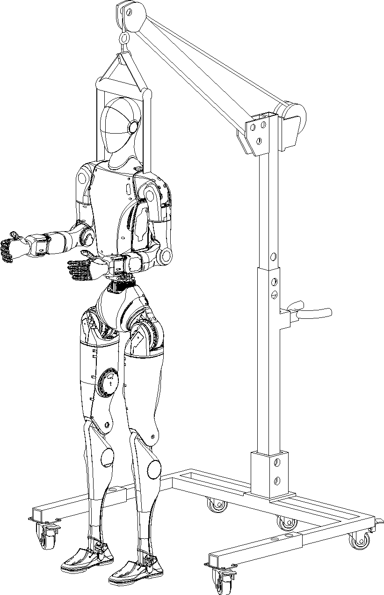
h2_ankle_swing_example(C++ · Python)과 h2_dual_arm_example은 시작하자마자 MotionSwitcherClient::ReleaseMode()("motion_switcher" 서비스)를
운동 서비스가 남지 않을 때까지 반복 호출합니다. 디버그 모드를 잊었더라도 프로그램이 내장 제어기를 내리므로 서 있던 로봇은 균형을 잃습니다.
이어서 다리를 포함한 31개 관절 전부를 강한 게인(다리 Kp 최대 250)으로 3초 동안 영점 자세로 끌어옵니다. 반드시 매단 상태에서, 주변을 비우고 실행하십시오.
비상시에는 L2 + B로 댐핑에 들어갑니다. SDK
Debugging Specification 페이지는 개발 PC를 "어깨의 이더넷 포트"에 연결하라고 적었습니다. G1 문서의 문장이며, H2의 RJ45 포트([12] · [15])는 등판에 있습니다 (About H2 전기 인터페이스 표).
unitree_sdk2 설치 · 빌드 문서 SDK
저장소: https://github.com/unitreerobotics/unitree_sdk2. 이 설명서는 커밋 8e1b927(2026-10-30)을 기준으로 확인했습니다.
README의 사전 빌드 환경은 Ubuntu 20.04 · gcc 9.4.0 · CMake 3.10 이상, x86_64와 aarch64입니다.
# 1) 의존 패키지 (SDK README) sudo apt-get update sudo apt-get install -y cmake g++ build-essential libyaml-cpp-dev libeigen3-dev \ libboost-all-dev libfmt-dev # 2) 예제 빌드 — 실행 파일은 build/bin 에 생깁니다 git clone https://github.com/unitreerobotics/unitree_sdk2.git cd unitree_sdk2 && mkdir build && cd build cmake .. && make # 3) 자기 프로그램에서 쓰려면 라이브러리 설치 (선택) sudo make install # 기본 경로 cmake .. -DCMAKE_INSTALL_PREFIX=/opt/unitree_robotics && sudo make install # 경로 지정
| 항목 | 내용 |
|---|---|
| 빌드 기본값 | C++17, 빌드 형식을 주지 않으면 Release. 예제를 빼려면 -DBUILD_EXAMPLES=OFF |
| 설치되는 것 | include/ 헤더, libunitree_sdk2.a, 함께 묶인 CycloneDDS 라이브러리(libddsc.so · libddscxx.so)와 헤더, lib/cmake/unitree_sdk2 패키지 설정 |
| 자기 프로젝트 | find_package(unitree_sdk2 REQUIRED) 후 target_link_libraries(<타깃> unitree_sdk2). /opt/unitree_robotics가 아닌 곳에 설치했다면 그 경로를 CMAKE_PREFIX_PATH에 넣으십시오 |
| 예제 추가 의존 | h2_dual_arm_example은 yaml-cpp 0.6 이상, h2_termination · h2_arm_action_example은 Boost program_options가 있을 때만 빌드됩니다. terminations.hpp는 Eigen3를 씁니다 |
sudo make install을 한 번 하면, 이후 cmake는 새로 받은 소스보다 시스템에 설치된 버전을 먼저 씁니다.
SDK를 새로 받을 때마다 다시 sudo make install 하십시오. 설치하지 않고 build/bin의 예제만 쓸 때는 해당하지 않습니다. 문서
- Quick Development 페이지에는 의존 패키지 목록이 없습니다. 위 목록은 SDK README를 따랐습니다.
- README가 안내하는
example/cmake_sample폴더는 이 커밋에 없습니다. 위 표의find_package방식을 쓰십시오.
H2 예제 실행 파일 SDK
example/h2/CMakeLists.txt가 만드는 실행 파일은 아래 표의 앞 6개이며 (마지막 줄은 helloworld 예제), 모두 build/bin에 생깁니다.
| 실행 파일 | 디버그 모드 | 소스 (example/h2/) · 동작 |
|---|---|---|
h2_ankle_swing_example | 필요 | low_level/h2_ankle_swing_example.cpp. 인자: 카드 이름(필수). 운동 서비스를 해제한 뒤 rt/lowcmd를 2 ms 주기로 발행하고 rt/lowstate · rt/secondary_imu를 구독합니다.
3초 동안 31개 관절을 영점으로 → 3초 동안 PR 모드로 양 발목 흔들기(pitch ±30°, roll ±10°, 1 Hz) → 이후 영점 유지. 상태 메시지 500개마다(예제 주석상 1초) IMU · 리모컨 · 모터 상태를 출력합니다 |
h2_dual_arm_example | 필요 | low_level/h2_dual_arm_example.cpp. yaml-cpp 0.6 이상일 때만 빌드. 인자: 카드 이름(필수). 운동 서비스 해제 → 3초 영점 → low_level/behavior_lib/motion.seq(500 Hz, 3817 프레임, 양팔 14관절 = 15 ~ 28번)를
원래 속도의 60%로 반복 재생. 나머지 관절은 0으로 유지. Ctrl + C로 끝냅니다 |
h2_termination | 무관 | low_level/terminations.cpp. Boost 필요. 인자: -n / --network. rt/lowstate만 구독하고 100 ms마다 자세 이상(기울기 1.0 rad 초과)과 통신 끊김(1000 ms 무수신)을 출력합니다.
명령은 보내지 않습니다. 판정 함수는 include/unitree/robot/h2/common/terminations.hpp |
h2_loco_client | 금지 | high_level/h2_loco_client_example.cpp. LocoClient("sport"), RPC 시간 제한 10초. --network_interface=<카드>(기본 lo)와
--get_fsm_id · --get_fsm_mode · --set_fsm_id=<id> · --set_velocity="vx vy ω [시간]" · --move="vx vy ω" ·
--damp · --start · --stand_up · --zero_torque · --stop_move · --switch_move_mode=true|false · --set_speed_mode=<n> |
h2_arm_sdk_dds_example | 금지 | high_level/h2_arm_sdk_dds_example.cpp. 인자: 카드 이름(생략 시 자동 선택). Enter 확인 → 현재 FSM이 4 또는 703일 때만 진행 → EnableArmSDK() →
rt/arm_sdk를 20 ms 주기로 발행(가중치 motor_cmd[31].q = 1): 3초 영점 · 6초 팔 들기와 머리 돌리기 · 9초 복귀 · 3초 동안 가중치 1 → 0 → DisableArmSDK() |
h2_arm_action_example | 금지 | high_level/h2_arm_action_example.cpp. Boost 필요. H2ArmActionClient("arm"). -n <카드>와 -l / --list(또는 --id 0) 동작 목록 · -i / --id <번호> 프리셋 동작(99 = 팔 풀기) ·
--name <이름> 사용자 동작 · --stop 사용자 동작 정지. 실패하면 7400 · 7401 · 7402 · 7404 오류 설명을 출력합니다 |
test_publishertest_subscriber | 무관 | example/helloworld/. H2 전용은 아니지만 DDS 발행 · 구독 기본 예제입니다 (2장) |
"금지"는 내장 운동 제어기가 있어야 동작하므로 디버그 모드에서 쓰면 안 된다는 뜻이고, "무관"은 명령을 보내지 않아 디버그 모드와 관계없다는 뜻입니다.
cd unitree_sdk2/build/bin ./h2_termination -n enp3s0 # 상태만 읽음 — 첫 연결 확인에 알맞음 ./h2_loco_client --network_interface=enp3s0 --get_fsm_id # 운동 모드에서 ./h2_arm_action_example -n enp3s0 --list ./h2_ankle_swing_example enp3s0 # 매단 상태 · 디버그 모드에서만
옵션은 std::map에 담겨 입력 순서가 아니라 옵션 이름의 알파벳 순서로 실행됩니다 (예: --stand_up --damp는 damp가 먼저).
한 번에 옵션 하나씩 주십시오. 모르는 옵션은 오류 없이 무시됩니다. Unitree RPC Routine 페이지의 --get_available_fsm_ids · --get_arm_sdk_status ·
--set_punch_api · --enable_arm_sdk · --disable_arm_sdk · --squat · --sit는 이 커밋의 예제에 구현되어 있지 않습니다. SDK
unitree_sdk2_python 설치 SDK
Python SDK는 C++ SDK와 같은 토픽 · 메시지 · 요청/응답 구조를 씁니다. H2용 메시지는 unitree_sdk2py.idl.unitree_hg, 이동 클라이언트는
unitree_sdk2py.h2.loco에 있습니다. 확인 기준: 커밋 814556d(2026-09-21). H2 팔 동작 클라이언트("arm")는 Python 판에 없습니다.
| 요구 사항 | 값 |
|---|---|
| Python | 3.8 이상 |
| 패키지 | cyclonedds==0.10.2 · numpy · opencv-python (설치 시 자동) |
sudo apt install python3-pip
git clone https://github.com/unitreerobotics/unitree_sdk2_python.git
cd unitree_sdk2_python && pip3 install -e .
# "Could not locate cyclonedds" 오류가 나면: cyclonedds 0.10.x 를 직접 빌드한 뒤
cd ~ && git clone https://github.com/eclipse-cyclonedds/cyclonedds -b releases/0.10.x
cd cyclonedds && mkdir build install && cd build
cmake .. -DCMAKE_INSTALL_PREFIX=../install && cmake --build . --target install
cd ~/unitree_sdk2_python
export CYCLONEDDS_HOME=~/cyclonedds/install && pip3 install -e .
| H2 Python 예제 (example/h2/) | 내용 (인자: 카드 이름) |
|---|---|
low_level/h2_ankle_swing_example.py | C++ 판과 같은 발목 흔들기. 카드 이름 필수, 디버그 모드 · 매단 상태 전용. ReleaseMode()를 5초 간격으로 반복 호출합니다 |
high_level/h2_arm_sdk_dds_example.py | C++ 판과 같은 rt/arm_sdk 팔 · 머리 덧씌움. FSM 4 · 703에서만 실행 |
high_level/h2_loco_client_example.py | 대화형. 번호나 이름을 입력하고 list로 목록을 봅니다: damp 0 · start 1 · stand_up 2 · zero_torque 3 · stop_move 4 · get_fsm_id 5 · get_fsm_mode 6 ·
set_fsm_id 7 (4로 설정) · set_velocity 8 · move 9 · switch_move_mode 10 · set_speed_mode 11 |
example/helloworld/publisher.py · subscriber.py | DDS 기본 예제 (메시지 정의 user_data.py) |
h2_loco_client_example.py의 8번은 SetVelocity(0, 0, 1.0, 4.0)(제자리 회전 1 rad/s, 4초), 9번은 Move(0, 0, 2)(2 rad/s 회전)입니다.
목록에 없는 값을 입력하면 직전 항목이 한 번 더 실행됩니다. 로봇 주변을 비우고, 멈출 때는 4번(stop_move)이나 리모컨을 쓰십시오.
모델 파일 문서
| 파일 | 위치 · 내용 |
|---|---|
| URDF | https://github.com/unitreerobotics/unitree_ros/tree/master/robots/h2_description. H2 버전별 URDF가 있습니다 |
| 단순화 STEP | Unitree 문서 Access Resources의 내려받기 링크 (zip, 64 MB). 압축 안에는 H2_简化模型_260601.STEP(약 190 MB) 한 개가 있습니다 |
등판이 곡면이라 장착 구멍의 정확한 위치 관계는 3D 모델에서 확인하라고 문서가 안내합니다 (About H2).
ROS 2 Humble 연동 준비 문서
ROS 2도 DDS를 쓰므로 SDK를 감싸지 않고 ROS 2 메시지로 H2와 직접 통신할 수 있습니다 (토픽 대응은 2장). 로봇의 CycloneDDS는 0.10.2이므로 ROS 2의 RMW를 CycloneDDS로 바꿔야 합니다.
문서는 Foxy 기준이며 "다른 배포판은 foxy를 바꿔 쓰라"고 하므로 아래는 Humble(Ubuntu 22.04)로 바꿔 적었습니다. 저장소의 예제는 Foxy에서 개발되어 rosbag 등 일부 API가 다를 수 있습니다.
- 저장소 · 의존 패키지
git clone https://github.com/unitreerobotics/unitree_ros2후sudo apt install ros-humble-rmw-cyclonedds-cpp ros-humble-rosidl-generator-dds-idl. 메시지 정의는cyclonedds_ws/src/unitree/아래에 있습니다. - CycloneDDS 빌드ROS 2 환경을 source하지 않은 새 터미널에서 합니다.
~/.bashrc에source /opt/ros/humble/setup.bash가 있으면 주석 처리하십시오. 그렇지 않으면 빌드 오류가 날 수 있습니다. - 메시지 패키지 빌드이번에는 ROS 2를 source한 뒤 작업 공간 전체를
colcon build합니다. - 네트워크 · setup.sh로봇 쪽 카드를
192.168.123.99/24로 설정하고,~/unitree_ros2/setup.sh의 배포판 이름과 카드 이름을 고칩니다. - 확인컴퓨터를 재부팅한 뒤
source ~/unitree_ros2/setup.sh→ros2 topic list에 로봇 토픽이 보이면 됩니다.
cd ~/unitree_ros2/cyclonedds_ws/src git clone https://github.com/ros2/rmw_cyclonedds -b humble git clone https://github.com/eclipse-cyclonedds/cyclonedds -b releases/0.10.x cd .. && colcon build --packages-select cyclonedds # ROS 2 를 source 하지 않은 터미널 source /opt/ros/humble/setup.bash && colcon build # Unitree 메시지 패키지
# ~/unitree_ros2/setup.sh #!/bin/bash echo "Setup unitree ros2 environment" source /opt/ros/humble/setup.bash source $HOME/unitree_ros2/cyclonedds_ws/install/setup.bash export RMW_IMPLEMENTATION=rmw_cyclonedds_cpp export CYCLONEDDS_URI='<CycloneDDS><Domain><General><Interfaces> <NetworkInterface name="enp3s0" priority="default" multicast="default" /> </Interfaces></General></Domain></CycloneDDS>' # enp3s0 → 실제 카드 이름
setup.sh 내용을 ~/.bashrc에 넣으면 새 터미널마다 적용되지만, 여러 ROS 환경이 함께 있는 PC에서는 메시지 타입이 섞일 수 있으니 필요할 때만 source 하십시오.
PC2에는 Humble이 이미 설치되어 있습니다 (운용 설명서 4장).
- ROS2 Communication Routine 페이지의
ros2 topic list결과 그림은/utlidar/…·/uwbstate·/frontvideostream등 Go2 토픽입니다. H2에서는 2장 토픽 목록에서rt/를 뗀 이름(예:/lowstate)을 확인하십시오. - 같은 페이지는 메시지 패키지를
unitree_go·unitree_api로만 소개하지만, H2의 저수준 메시지는unitree_hg입니다. 빌드 후cyclonedds_ws/src/unitree/에unitree_hg가 있는지 확인하십시오 (이 설명서는 unitree_ros2 소스를 확인하지 않았습니다).
통신 구조와 DDS
H2 안의 기능 모듈은 DDS로 데이터를 주고받고, 개발자도 같은 DDS 네트워크에 붙어 로봇을 읽고 제어합니다.
이 장은 H2의 시스템 구조, unitree_sdk2가 DDS 위에 얹은 채널 · RPC API와 오류 코드, H2의 전체 토픽 · 서비스 목록,
그리고 ROS 2에서 같은 토픽을 쓰는 방법을 정리합니다.
두 가지 통신 방식 문서
| 방식 | 쓰임 |
|---|---|
| 발행 / 구독 (토픽) | 받는 쪽이 토픽을 구독하면 보내는 쪽이 구독 목록에 따라 메시지를 보냅니다. 중 · 고주파 연속 데이터용 (관절 상태 · 명령 등) |
| 요청 / 응답 (RPC) | 요청을 보내고 답을 받는 문답 방식. 드문 데이터 조회나 기능 전환용 (모드 전환, 동작 실행 등) |
요청/응답 인터페이스를 호출하는 방법은 두 가지입니다. API 호출은 REST API처럼 요청 내용과 요청 토픽을 채워 보내고, 대응하는 응답 토픽에서 답을 받습니다.
응답은 방송(broadcast)되며 요청과 응답의 짝은 요청 ID로 맞춥니다 (문서 표기는 UUID). 함수 호출은 API 호출을 함수로 감싼 문법적 편의로,
h2::LocoClient · h2::H2ArmActionClient 같은 클라이언트 클래스가 이것입니다.
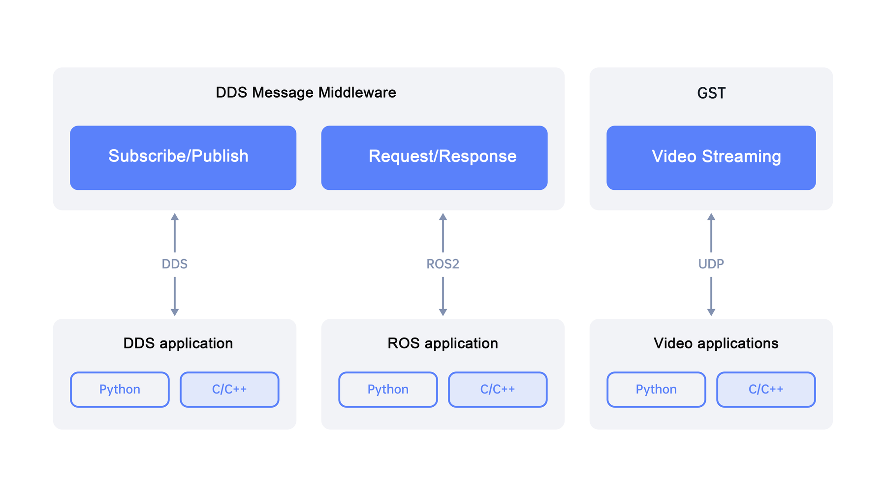
SDK Overview 페이지는 "현재 버전은 GST 영상 전송을 지원하지 않는다"고 적지만, Multimedia Services · Bilateral Data Stream 페이지에는 GStreamer UDP 수신 절차가 있습니다. 펌웨어 버전별로 확인하고, 아래 "DDS 밖의 데이터 통로" 표와 6장을 참고하십시오.
시스템 구조 문서
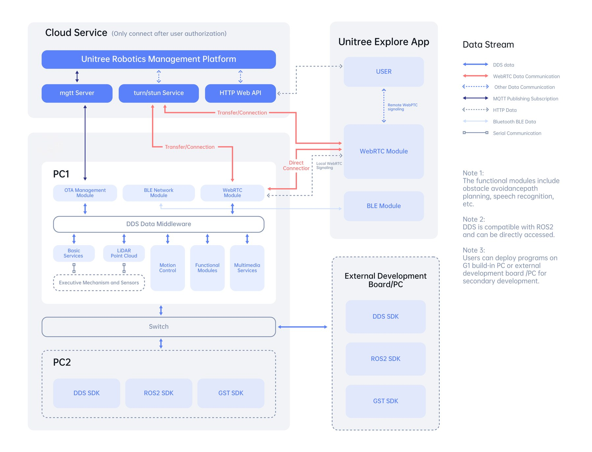
| 구성 | 역할 |
|---|---|
| 클라우드 서비스 | 사용자가 허락한 경우에만 연결합니다. ① 운행 데이터(개인정보 제외) 수집 · 고장 감지 · 통계 ② WebRTC 원격 조작 — 영상 · 제어 트래픽은 P2P 또는 TURN 서버로 중계되며 서버가 수집 · 분석하지 않음 ③ 시스템 업그레이드 |
| 클라우드 통신 | MQTT: 기기와 IoT 연결, 고장 감시 · 업그레이드 · WebRTC 시그널링 전달. HTTP: 앱 · 웹과 연결해 사용자-로봇 바인딩. TURN/STUN: WebRTC P2P 연결 보조, P2P가 안 되면 서버가 중계 |
| H2 · OTA 모듈 | MQTT로 클라우드와 통신. 고장 정보 업로드 · 시스템 업그레이드 · WebRTC 시그널링 전달 |
| H2 · WebRTC 모듈 | 앱과의 주 데이터 통로: 음성 · 영상 스트림, 점군, 운동 상태, 제어 명령 |
| H2 · BLE | 앱과 처음 연결할 때 네트워크 설정 · 보안 인증 |
| H2 · DDS | 기능 모듈 사이 통신의 대부분. DDS IDL은 ROS 2와 호환되므로(맞는 RMW 선택 필요) H2 edu는 DDS 또는 ROS 2로 인터페이스를 부를 수 있습니다 |
| H2 · 센서 | 모터 등 센서 데이터는 직렬 통신으로 모은 뒤 DDS 중간층으로 전달됩니다 |
| H2 · PC1 / 개발 컴퓨터 | PC1은 Unitree 운동 제어 전용으로 공개되지 않습니다. 2차 개발은 개발 컴퓨터(PC2 .162, PC3 .163(H2 plus 기본 · H2 edu 선택), 선택 사양 PC4 .164)나 개발 PC에서 합니다. 이 페이지의 "PC2 = .164, 계정은 지원팀 문의"는 G1 문서를 옮긴 오류입니다 (운용 설명서 10장). 계정은 운용 설명서 4장 참고 |
| 앱 (Unitree Explore) | HTTP Web API로 사용자 관리 · 로봇 바인딩 · WebRTC 연결 수립, BLE로 네트워크 설정, WebRTC로 영상 · 점군 · 운동 상태 · 제어 명령 |
| 개발 인터페이스 | ① DDS (C++ · Python) ② ROS 2 ③ GST (영상 전송 전용). 프로그램은 H2 내장 개발 컴퓨터나 외부 개발 보드 · PC에 배포합니다 |
unitree_sdk2와 DDS 문서 SDK
DDS(Data Distribution Service)는 OMG가 정한 분산 통신 규격으로, 발행/구독 모델 위에 여러 QoS 정책을 두어 실시간 데이터 배포를 보장합니다.
unitree_sdk2는 CycloneDDS(0.10.2를 SDK에 포함) 위에 한 겹을 씌워 QoS 설정, 간단한 채널 API, 그리고 DDS 토픽 기반 RPC를 제공합니다.
RPC 요청은 rt/api/<서비스>/request, 응답은 rt/api/<서비스>/response 토픽으로 오갑니다
(channel/channel_namer.hpp의 접두사 · 접미사 상수). SDK
| RPC 메시지 (unitree_api::msg::dds_) | 필드 |
|---|---|
Request_ | header: identity{id int64 요청 ID, api_id int64} · lease{id int64} · policy{priority int32, noreply bool}parameter: string (JSON 인자) · binary: uint8 배열 |
Response_ | header: identity{id, api_id} · status{code int32 = 오류 코드}data: string (JSON 결과) · binary: uint8 배열 |
| 내부 API ID (모든 서비스 공통) | 1 = 서버 API 버전 조회 · 2 = Noop · 101 = lease 신청 · 102 = lease 갱신. 100 이하는 내부용으로 예약. lease 기본 기한 1 000 000 µs (1초) |
정의 위치: include/unitree/robot/internal/internal_idl_decl/ · internal_api.hpp. 사용자는 이 메시지를 직접 다루지 말고 클라이언트 클래스를 쓰십시오.
ChannelFactory 문서 SDK
unitree::robot::ChannelFactory는 DDS 토픽 채널을 만드는 싱글턴입니다. 채널을 쓰기 전에 반드시 한 번 초기화해야 합니다.
헤더: unitree/robot/channel/channel_factory.hpp. 별칭 Channel<MSG> = common::DdsTopicChannel<MSG>, ChannelPtr<MSG>는 그 shared_ptr입니다.
| 함수 | 설명 | 반환 · 비고 |
|---|---|---|
static ChannelFactory* Instance() | 싱글턴 포인터를 얻습니다 | 정적 포인터 |
void Init(int32_t domainId, const std::string& networkInterface = "") | domainId: DdsParticipant 도메인 ID (H2는 0). networkInterface: 네트워크 카드 이름. 비우면 자동 선택 | 없음. 예: Init(0, "enp3s0") |
void Init(const std::string& configFileName = "") | JSON 설정 파일로 초기화. 비우면 실행 폴더의 dds_parameter.json (문서의 숨겨진 절) | 파일이 없거나 지정 네트워크를 쓸 수 없으면 예외 |
void Init(const common::JsonMap& jsonMap) | JsonMap 설정으로 초기화 | 지정 네트워크를 쓸 수 없으면 DDS 예외 |
template<MSG> ChannelPtr<MSG> CreateSendChannel(const std::string& name) | 타입 MSG의 송신 채널을 토픽 이름으로 만듭니다 | ChannelPtr<MSG> |
template<MSG> ChannelPtr<MSG> CreateRecvChannel(const std::string& name, std::function<void(const void*)> callback, int32_t queuelen = 0) | callback: 메시지 도착 시 호출. queuelen: 메시지 캐시 큐 길이, 0이면 큐를 쓰지 않음 | ChannelPtr<MSG> |
void Release() | ChannelFactory 정적 자원 해제 | ChannelFactory::Instance()->Release() |
Init()을 인자 없이 부르면 오버로드 규칙상 설정 파일판이 선택되어 dds_parameter.json을 찾습니다. 로봇과 통신할 때는 항상
Init(0, "<카드 이름>") 형태로 도메인과 카드를 지정하십시오. SDK
ChannelPublisher 문서 SDK
template<typename MSG> class ChannelPublisher는 지정 타입의 메시지를 발행합니다. InitChannel()이 내부에서 CreateSendChannel을 부르므로
먼저 ChannelFactory를 초기화해야 합니다. 헤더: channel/channel_publisher.hpp. 별칭: ChannelPublisherPtr<MSG> = std::shared_ptr.
| 함수 | 설명 | 반환 · 비고 |
|---|---|---|
explicit ChannelPublisher(const std::string& channelName) | 토픽 이름으로 생성 | 소멸 시 채널 정리 |
void InitChannel() | 송신 채널을 만들어 발행 준비 | DataWriter를 만든 뒤 SDK가 0.1초 기다립니다 (구독자 연결 대기) |
bool Write(const MSG& msg, int64_t waitMicrosec = 0) | 메시지 한 개를 보냅니다. waitMicrosec(µs)가 10 000 이상이면 구독자가 연결될 때까지 최대 waitMicrosec/2(상한 1초)를 10 ms 단위로 기다린 뒤 보냅니다 | true 성공 · false 실패(DDS 예외 또는 채널 미초기화). 구독자가 없어도 쓰기 자체는 성공합니다 |
void CloseChannel() | 채널을 닫습니다 | 다시 InitChannel() 가능 |
const std::string& GetChannelName() const | 토픽 이름 | 문자열 |
ChannelSubscriber 문서 SDK
template<typename MSG> class ChannelSubscriber는 지정 타입의 메시지를 구독합니다. 내부에서 CreateRecvChannel을 쓰므로 역시 ChannelFactory 초기화가 먼저입니다.
헤더: channel/channel_subscriber.hpp. 별칭: ChannelSubscriberPtr<MSG>.
| 함수 | 설명 | 반환 · 비고 |
|---|---|---|
explicit ChannelSubscriber(const std::string& channelName) | 토픽 이름으로 생성 | |
explicit ChannelSubscriber(const std::string& channelName, const std::function<void(const void*)>& handler, int64_t queuelen = 0) | 핸들러 · 큐 길이까지 지정해 생성. 이후 인자 없는 InitChannel()로 엽니다 | |
void InitChannel(const std::function<void(const void*)>& handler, int64_t queuelen = 0) | handler: 메시지 도착 콜백 (const void*를 const MSG*로 형변환). queuelen: 캐시 큐 길이, 0이면 끔 | 큐를 켜면 메시지를 복사해 별도 스레드가 핸들러를 부릅니다. 큐가 차면 가장 오래된 메시지를 버리고 경고를 남깁니다 |
void InitChannel() | 마지막에 준 핸들러 · 큐 길이로 (다시) 엽니다 | 핸들러가 없으면 예외 (subscribe handler is invalid) |
void CloseChannel() | 채널을 닫습니다 | 없음 |
int64_t GetLastDataAvailableTime() const | 마지막으로 유효한 메시지를 받은 시각 | 채널 미초기화면 −1, 첫 메시지 전에는 0. 그 밖에는 단조 시계(GetCurrentMonotonicTimeNanosecond())의 ns 값 |
const std::string& GetChannelName() const | 토픽 이름 | 문자열 |
콜백은 DDS 수신 스레드에서 불립니다. 콜백 처리가 오래 걸리면 queuelen을 켜서 DDS 콜백 스레드가 막히지 않게 하십시오.
H2 예제는 rt/lowstate에 큐 1(발목 · 양팔 예제), 10(rt/arm_sdk 예제), 0(h2_termination)을 씁니다.
// 통신 끊김 판정 — terminations.hpp 의 lost_connection() 과 같은 계산 (ns → ms) int64_t now = unitree::common::GetCurrentMonotonicTimeNanosecond(); bool lost = (now - sub->GetLastDataAvailableTime()) / 1e6 > 1000; // 1000 ms
- 문서의
Init(domainId, networkInterface, bool enableSharedMemory = false)에서 세 번째 인자는 SDK에 없습니다. SDK는 대신 설정 파일 · JsonMap을 받는Init두 개를 둡니다. - 문서는
GetLastDataAvailableTime()을 "시스템 시작부터의 µs"로 적지만, SDK는 단조 시계의 ns를 저장합니다 (common/dds/dds_entity.hpp). H2의lost_connection()도 ns로 계산합니다. Write의waitMicrosec, 핸들러를 받는 Subscriber 생성자,GetChannelName()은 SDK에만 있습니다.- 문서는 Subscriber가
CreateSendChannel을 쓴다고 적었지만 실제로는CreateRecvChannel입니다. - DDS Services Interface 페이지 본문에는 "G1 안팎의 프로세스", "G1 밖에서 개발할 때" 같은 G1 문장이 남아 있습니다. 내용은 H2에도 그대로 적용됩니다.
서비스 클라이언트 공통 API 문서 SDK
로봇 안의 서비스들은 RPC 클라이언트로 기능을 엽니다. 모든 클라이언트는 unitree::robot::Client(client/client.hpp, 부모 ClientBase)를 상속하며 다음 함수를 공유합니다.
| 함수 | 설명 | 반환 · 비고 |
|---|---|---|
explicit Client(const std::string& name, bool enableLease = false) | name: 서비스 이름. enableLease: lease 사용 여부 | H2의 LocoClient · H2ArmActionClient는 둘 다 false |
void Init() | 클라이언트 초기화: API 버전 설정 · 쓸 API ID 등록 | 호출 전 ChannelFactory 초기화 필요. 등록하지 않은 API를 부르면 3103 |
void SetTimeout(float timeout) | RPC 요청 시간 제한, 초 단위 | 설정하지 않으면 1초. H2 예제는 5 ~ 10초 |
void SetTimeout(int64_t timeout) | 같은 설정을 µs 단위로 SDK | 기본 상수 ROBOT_CLIENT_TIMEOUT = 1 000 000 |
void WaitLeaseApplied() | lease를 신청하고 받을 때까지 대기 (블록) | lease를 켠 클라이언트에서만 유효 |
int64_t GetLeaseId() | 받은 lease ID SDK | |
const std::string& GetApiVersion() const | 클라이언트 API 버전 | 예: "sport" 1.0.0.0, "arm" 1.0.0.14 |
std::string GetServerApiVersion() | 서버 API 버전 (내부 API 1 호출) | 문자열 (문서는 const std::string&로 표기) |
Call(apiId, parameter, data) · RegistApi(apiId, priority) | protected. 클라이언트 클래스가 함수 하나를 API ID 하나에 대응시킬 때 씁니다. 인자 · 결과는 JSON 문자열(또는 바이너리) | int32_t 오류 코드 (0 = 성공) |
SetTimeout은 float(초)와 int64_t(µs) 두 오버로드가 있어 SetTimeout(10)이나 SetTimeout(10.0)은 모호해 컴파일되지 않습니다.
예제처럼 SetTimeout(10.0f)로 쓰십시오. 고수준 명령이 3104(시간 초과)를 내면 이 값을 늘려 보십시오. SDK
RPC 공통 오류 코드 문서 SDK
SDK 정의: include/unitree/robot/internal/internal_error.hpp (Python unitree_sdk2py/rpc/internal.py에도 같은 값).
| 코드 | 뜻 | 반환 주체 | 코드 | 뜻 | 반환 주체 |
|---|---|---|---|---|---|
| 0 | 성공 | — | 3201 | 응답 송신 오류 | 서버 내부 (클라이언트로 오지 않음) |
| 3001 | 알 수 없는 오류 | 클라이언트 · 서버 | 3202 | 서버 내부 오류 | 서버 |
| 3102 | 요청 송신 오류 | 클라이언트 | 3203 | 서버에 구현되지 않은 API | 서버 |
| 3103 | 등록되지 않은 API | 클라이언트 | 3204 | API 인자 오류 | 서버 |
| 3104 | 요청 시간 초과 | 클라이언트 | 3205 | lease 때문에 요청 거부 | 서버 |
| 3105 | 요청 · 응답 불일치 | 클라이언트 | 3206 | 서버 캐시에 lease 없음 (문서: 잘못된 lease) | 서버 |
| 3106 | 응답 데이터 오류 | 클라이언트 | 3207 | lease가 이미 있음 | 서버 |
| 3107 | lease 무효 | 클라이언트 |
SDK 상수 이름은 UT_ROBOT_OK, UT_ROBOT_ERR_UNKNOWN, UT_ROBOT_ERR_CLIENT_*(31xx: SEND · API_NOT_REG · API_TIMEOUT · API_NOT_MATCH · API_DATA · LEASE_INVALID),
UT_ROBOT_ERR_SERVER_*(32xx: SEND · INTERNAL · API_NOT_IMPL · API_PARAMETER · LEASE_DENIED · LEASE_NOT_EXIST · LEASE_EXIST)입니다.
H2 서비스별 오류 코드 SDK
| 서비스 · 헤더 | 코드 · 뜻 |
|---|---|
"sport" · h2/loco/h2_loco_error.hpp | 7301 LocoState 사용 불가 (같은 값에 이름 둘) · 7302 잘못된 FSM ID · 7303 잘못된 task ID |
"arm" · h2/arm/h2_arm_action_error.hpp | 7400 rt/arm_sdk가 사용 중 · 7401 팔이 동작을 유지 중 (99번이나 마지막 동작 번호를 다시 보내 풀기) · 7402 잘못된 동작 ID · 7404 현재 FSM에서 팔 동작 불가 |
"motion_switcher" · b2/motion_switcher/motion_switcher_error.hpp | 7001 인자 오류 · 7002 전환기 사용 중 · 7003 잘못된 이벤트 · 7004 · 7005 잘못된 이름 또는 별칭 · 7006 check 실행 오류 · 7007 select 실행 오류 · 7008 release 실행 오류 · 7009 사용자 데이터 저장 오류 |
예제 · 발행과 구독 문서 SDK
예제 위치: unitree_sdk2/example/helloworld/ (publisher.cpp · subscriber.cpp · 메시지 정의 HelloWorldData.hpp).
빌드하면 test_publisher · test_subscriber가 생깁니다. 토픽 이름은 TopicHelloWorld, 메시지는 HelloWorldData::Msg(userID, message)입니다.
#include <unitree/robot/channel/channel_publisher.hpp> #include <unitree/robot/channel/channel_subscriber.hpp> using namespace unitree::robot; // 발행 ChannelFactory::Instance()->Init(0, argv[1]); // argv[1] = 네트워크 카드 ChannelPublisher<HelloWorldData::Msg> pub("TopicHelloWorld"); pub.InitChannel(); pub.Write(HelloWorldData::Msg(unitree::common::GetCurrentTimeMillisecond(), "HelloWorld.")); // 구독 void Handler(const void* msg) { auto* pm = (const HelloWorldData::Msg*)msg; // MSG 로 형변환 std::cout << pm->userID() << " " << pm->message() << std::endl; } ChannelSubscriber<HelloWorldData::Msg> sub("TopicHelloWorld"); sub.InitChannel(Handler, 1); // 큐 길이 1 sub.CloseChannel(); // 닫았다가 sub.InitChannel(); // 같은 핸들러 · 큐 길이로 다시 열기
Unitree의 DDS Communication Routine 페이지판은 네트워크 카드 이름을 첫 인자로 받고 ChannelPublisherPtr(shared_ptr)로 객체를 만듭니다.
현재 SDK의 helloworld는 스택 객체와 Init(0)(카드 자동 선택)을 쓰며 인자를 받지 않고, 구독 예제는 큐 없이 열었다 닫기를 두 번 반복합니다.
로봇과 통신할 때는 항상 카드 이름을 지정하십시오. 같은 PC에서 두 실행 파일을 띄우면 로봇 없이도 동작을 확인할 수 있습니다.
Python 대응 API SDK
모듈: unitree_sdk2py.core.channel. 이름과 흐름은 C++와 같고, 메시지 타입을 생성자 인자로 넘깁니다.
| 함수 | 설명 | 반환 · 비고 |
|---|---|---|
ChannelFactoryInitialize(id=0, networkInterface=None) | 도메인 · 네트워크 카드로 초기화. None이면 자동 선택. 두 번째 호출부터는 무시 | 실패 시 Exception("channel factory init error."). 카드를 지정하면 CycloneDDS 설정 로그를 /tmp/cdds.LOG에 씁니다 |
ChannelPublisher(name, type) · .Init() · .Close() | 발행자 생성 · 열기(DataWriter 생성 후 0.2초 대기) · 닫기 | |
.Write(sample, timeout=None) | 보냅니다. timeout(초)을 주면 구독자가 연결될 때까지 0.1초 단위로 기다립니다 | True / False. 시간 안에 구독자가 없으면 쓰지 않고 False. timeout=0이면 항상 False이므로 주지 않거나 양수로 |
ChannelSubscriber(name, type) · .Init(handler=None, queueLen=0) · .Close() | 구독자 생성 · 열기 · 닫기. handler를 주면 수신 때마다 한 샘플씩 호출, queueLen > 0이면 별도 스레드가 큐에서 꺼내 호출 | |
.Read(timeout=None) | handler 없이 열었을 때 샘플 하나를 꺼냅니다 (take_one) | 샘플, 시간 초과 · 오류면 None |
Client.SetTimeout(sec) · Init() · GetApiVersion() · GetServerApiVersion() · WaitLeaseApplied() · GetLeaseId() | RPC 클라이언트 공통 (unitree_sdk2py.rpc.client). 시간 제한 기본 1.0초 | GetServerApiVersion()은 (code, version). H2 LocoClient의 조회 함수도 (code, 값)을 돌려줍니다 |
from unitree_sdk2py.core.channel import ChannelFactoryInitialize, ChannelSubscriber
from unitree_sdk2py.idl.unitree_hg.msg.dds_ import LowState_
from unitree_sdk2py.h2.loco.h2_loco_client import LocoClient
ChannelFactoryInitialize(0, "enp3s0")
sub = ChannelSubscriber("rt/lowstate", LowState_)
sub.Init(lambda msg: print(msg.tick), 10) # 핸들러 + 큐 10
loco = LocoClient()
loco.SetTimeout(10.0)
loco.Init()
code, fsm_id = loco.GetFsmId() # code 0 = 성공
Python helloworld(example/helloworld/publisher.py · subscriber.py)는 ChannelFactoryInitialize()(도메인 0, 자동 선택)로 열고 토픽 "topic"에
user_data.py의 UserData를 주고받습니다. 발행 쪽은 Write(msg, 0.5)가 False면 "Waitting for subscriber."를 출력합니다.
저수준 명령의 CRC는 unitree_sdk2py.utils.crc.CRC().Crc(msg)로 계산합니다.
H2 토픽 목록 문서 SDK
H2 문서 페이지와 SDK(example/h2/* · include/unitree/robot/h2/*)에 나오는 토픽을 모두 모았습니다. 방향은 사용자 프로그램 기준입니다.
hg = unitree_hg::msg::dds_(헤더 unitree/idl/hg/), go = unitree_go::msg::dds_(헤더 unitree/idl/go2/). rt/lf/…는 같은 데이터의 저주파판입니다. 메시지 필드는 3장, 손 토픽은 7장에서 다룹니다.
| 토픽 · 타입 · 방향 · 주기 | 내용 · 출처 |
|---|---|
rt/lowstatehg LowState_ · 구독 · 주기 문서에 없음 | 저수준 상태: IMU · 모터 31개 · 리모컨 원시 40바이트 · mode_machine. tick은 1 ms마다 1 증가. 디버그 모드에서도 나옴. 모든 H2 예제가 구독 · 문서 SDK |
rt/lf/lowstatehg LowState_ · 구독 · 저주파 | 위의 저주파판 · 문서 |
rt/lowcmdhg LowCmd_ · 발행 · 예제 2 ms | 전신 관절 모터 명령 (손 제외). 디버그 모드 전용, 끝의 crc 필수 · 문서 SDK |
rt/arm_sdkhg LowCmd_ · 발행 · 예제 20 ms | 운동 제어 중 상체 덧씌움: motor_cmd[15 ~ 28] 양팔, [29 ~ 30] 머리, 가중치 motor_cmd[31].q (0.0 ~ 1.0). 문서: 잠금 서기 · 보행 1 · 보행 2 모드에서만. SDK 예제는 FSM 4 · 703에서만 실행하고 앞뒤로 EnableArmSDK() · DisableArmSDK()를 부릅니다 · 문서 SDK |
rt/secondary_imuhg IMUState_ · 구독 | 몸통 IMU (h2_ankle_swing_example이 "IMU.torso"로 출력) · 문서 SDK |
rt/lf/secondary_imuhg IMUState_ · 구독 · 저주파 | 몸통 IMU 저주파판 · 문서 |
rt/lf/bmsstatehg BmsState_ · 구독 · 저주파 | 배터리 상태. h2::low_battery()가 soc(기본 한계 20)를 봅니다 · 문서 SDK |
rt/lf/mainboardstatehg MainBoardState_ · 구독 · 저주파 | 메인보드 상태 · 문서 |
rt/odommodestatego SportModeState_ · 구독 · 500 Hz | 오도메트리: 위치 · 속도 · 오일러 각 · yaw 각속도 · 쿼터니언. state_estimator 2.1.0.12 이상, 디버그 모드에서는 없음 · 문서 |
rt/lf/odommodestatego SportModeState_ · 구독 · 20 Hz | 오도메트리 저주파판. 고주파와 동시에 받을 수 있음 · 문서 |
rt/dex3/left/cmdrt/dex3/right/cmdhg HandCmd_ · 발행 | Dex3-1 왼손 · 오른손 명령. H2용 Dex3-1은 PC1에 연결되어 DDS로 다룹니다 · 문서 |
rt/dex3/left/statert/dex3/right/statehg HandState_ · 구독 | Dex3-1 손 상태 · 문서 |
rt/lf/dex3/left/statert/lf/dex3/right/statehg HandState_ · 구독 · 저주파 | Dex3-1 손 상태 저주파판 · 문서 |
rt/audio_msgstd_msgs String_ · 구독 | 내장 오프라인 음성 인식 결과 (VuiClient 페이지). 타입 전체 이름 std_msgs::msg::dds_::String_ · 문서 |
rt/api/<서비스>/requestunitree_api Request_ · 발행 · 호출 때 | RPC 요청 통로. 클라이언트 클래스가 대신 씁니다 · SDK |
rt/api/<서비스>/responseunitree_api Response_ · 구독 · 호출 때 | RPC 응답 (방송) · SDK |
RPC 서비스 SDK
| 서비스 이름 | 클라이언트 · API ID |
|---|---|
"sport"API 1.0.0.0 · 문서 · SDK | unitree::robot::h2::LocoClient (h2/loco/h2_loco_client.hpp, Python unitree_sdk2py.h2.loco). 조회 7001 ~ 7008 (7006은 폐지), 설정 7101 ~ 7109. 고수준 이동 · FSM · 팔 SDK 스위치 |
"arm"API 1.0.0.14 · SDK | unitree::robot::h2::H2ArmActionClient (h2/arm/h2_arm_action_client.hpp, C++ 전용). 7106 프리셋 동작 실행 · 7107 동작 목록 · 7108 사용자 동작 실행 · 7113 사용자 동작 정지. 문서에 없고 SDK에만 있습니다 |
"motion_switcher"API 1.0.0.1 · SDK | unitree::robot::b2::MotionSwitcherClient (Python unitree_sdk2py.comm.motion_switcher). 1001 CheckMode · 1002 SelectMode · 1003 ReleaseMode · 1004 SetSilent · 1005 GetSilent. H2 저수준 예제가 내장 운동 서비스를 내릴 때 씁니다 |
"voice"API 1.0.0.0 · 문서 · SDK | unitree::robot::g1::AudioClient (g1/audio/g1_audio_client.hpp). 1001 TTS · 1002 ASR · 1003 재생 시작 · 1004 재생 정지 · 1005 볼륨 조회 · 1006 볼륨 설정 · 1010 RGB 조명. H2 VuiClient 문서의 예제가 이 G1 클래스를 씁니다 |
"videohub"API 1.0.0.0 · 문서 · SDK | unitree::robot::go2::VideoClient (go2/video/video_client.hpp). 1001 GetImageSample (JPEG 한 장). H2 Multimedia 문서의 예제가 이 Go2 클래스를 씁니다 |
DDS 밖의 데이터 통로 문서
| 데이터 | 주소 · 포트 | 형식 |
|---|---|---|
| 마이크 음성 | 멀티캐스트 239.168.123.161:5555 | 잡음 제거된 모노 · 16 kHz · 16-bit. 마이크가 켜져 있을 때 |
| H264 영상 (Multimedia) | 멀티캐스트 230.1.1.1:1720 | RTP H264. 수신 시 multicast-iface에 카드 이름 지정 |
| 머리 스테레오 영상 (stereo_patch_pc1) | 유니캐스트, 기본 수신 주소 192.168.123.170, UDP 5002 · 5004 · 5006 | RTP H264. 5002 오른쪽 원본 1920×1080 @15 fps · 5004 왼쪽 544×448 @10 fps · 5006 오른쪽 544×448 @10 fps. 서비스 켜기 · 깊이 영상은 6장 |
- DDS Services Interface 페이지의 토픽 표 제목은 "G1 List of common topics"입니다. 위 표에서
rt/lowstate·rt/lowcmd·rt/secondary_imu(hg)와BmsState_(hg)는 H2 SDK 코드로 확인했고, 나머지는 문서만 근거입니다. - 같은 표는
rt/dex3/left/state를 "저주파"로,rt/lf/dex3/left/state를 일반으로,rt/dex3/right/state를 "왼손"으로 적습니다. 앞의 둘은lf규칙과 어긋나고, 마지막은 좌우 표기 오류입니다. 위 표는lf규칙에 맞춰 바로잡았습니다. - 같은 표는
rt/odommodestate의 타입을 go2IMUState_로 적지만, Odometer Service Interface 페이지의 예제는unitree_go::msg::dds_::SportModeState_로 구독합니다. DDS는 타입 이름이 맞아야 연결되므로 오도메트리 페이지를 따르십시오. - Sport Services Interface는
rt/arm_sdk를 잠금 서기 · 보행 1 · 보행 2에서 쓸 수 있다고 하지만, SDK 예제(C++ · Python)는 FSM 4와 703만 허용합니다. 같은 페이지의 FSM 표는 703(ai_sport 2.5.4.11 미만)과 701(2.5.4.11 이상)을 모두 "상체를 제어기가 맡지 않는 표준 보행"으로 적으므로, ai_sport 2.5.4.11 이상의 보행 상태(701)에서는 예제가 실행을 거부합니다. 701에서의rt/arm_sdk동작은 SDK 예제로 확인되지 않습니다 (5장).
ROS 2 대응 문서
H2의 DDS IDL은 ROS 2와 호환되므로, RMW를 CycloneDDS로 맞추면(1장) ROS 2 노드가 위 토픽을 그대로 읽고 씁니다. ROS 2는 토픽 이름 앞에 rt/를 붙여 DDS 토픽을 만들므로,
ROS 2 이름 = DDS 이름에서 rt/를 뗀 것이고, IDL 타입 패키지::msg::dds_::이름_은 ROS 2 타입 패키지/msg/이름에 대응합니다. H2는 도메인 0을 쓰므로 ROS_DOMAIN_ID를 바꾸지 마십시오. 아래 ROS 2 타입 이름은 이 대응 규칙으로 적은 것이며, unitree_ros2 저장소에 각 메시지가 들어 있는지는 확인하지 않았습니다.
| DDS 토픽 (SDK) | ROS 2 토픽 | ROS 2 타입 |
|---|---|---|
rt/lowstatert/lf/lowstate | /lowstate/lf/lowstate | unitree_hg/msg/LowState |
rt/lowcmdrt/arm_sdk | /lowcmd/arm_sdk | unitree_hg/msg/LowCmd |
rt/secondary_imu | /secondary_imu | unitree_hg/msg/IMUState |
rt/lf/bmsstatert/lf/mainboardstate | /lf/bmsstate/lf/mainboardstate | unitree_hg/msg/BmsStateunitree_hg/msg/MainBoardState |
rt/odommodestatert/lf/odommodestate | /odommodestate/lf/odommodestate | unitree_go/msg/SportModeState |
rt/dex3/left/cmd 등 | /dex3/left/cmd 등 | unitree_hg/msg/HandCmdunitree_hg/msg/HandState |
rt/audio_msg | /audio_msg | std_msgs/msg/String |
rt/api/sport/requestrt/api/sport/response | /api/sport/request/api/sport/response | unitree_api/msg/Requestunitree_api/msg/Response |
ROS 2에서 RPC를 부르려면 /api/<서비스>/request에 Request를 발행(header.identity.api_id에 API ID, parameter에 JSON)하고
/api/<서비스>/response를 구독해 header.identity.id로 자기 응답을 골라냅니다. 응답의 header.status.code가 위 오류 코드입니다.
메시지 정의는 unitree_ros2/cyclonedds_ws/src/unitree에 있고, C++ include/unitree/idl · Python unitree_sdk2py/idl과 같은 IDL에서 생성되었습니다 (Unitree는 IDL 원본 대신 CycloneDDS idlc 생성물을 제공합니다).
/lowcmd · /arm_sdk를 ROS 2로 보내도 메시지 끝의 crc를 채워야 합니다. SDK 예제는 메시지 전체를 32비트 단위로 보고 마지막 한 단어를 뺀 범위((sizeof(LowCmd_) >> 2) - 1)에
CRC32(다항식 0x04c11db7)를 계산합니다 SDK. 저수준 명령은 디버그 모드에서 로봇을 매단 채, 팔 덧씌움은 가중치를 0부터 천천히 올리며 보내십시오.
관절 · 상태 데이터
rt/lowstate와 rt/lowcmd는 35칸짜리 모터 배열을 주고받으며, H2는 그중 0 ~ 30번에 31개 관절 모터를 씁니다.
이 장은 관절 번호와 가동 범위, 메시지 필드 전체, CRC 계산, 리모컨 원시 데이터 해석법, 그리고 H2와 관련된 그 밖의 unitree_hg 메시지를 정리합니다.
몸체 관절 순서 문서 SDK
LowCmd_.motor_cmd와 LowState_.motor_state는 손을 뺀 몸체 모터 전부를 같은 순서로 담습니다. 다리 6 × 2, 허리 3, 팔 7 × 2, 머리 2 = 31개이며
31번 칸은 rt/arm_sdk에서 가중치로 씁니다(h2_arm_sdk_dds_example.cpp의 kArmSdkWeightJoint = 31). 32 ~ 34번은 H2 예제가 쓰지 않습니다.
SDK 이름은 example/h2/low_level/h2_ankle_swing_example.cpp의 enum H2JointIndex이며, 철자(LeftWristpitch 등)도 소스 그대로입니다.
| 번호 | 이름 (문서, _joint 생략) | 한계 (rad) | SDK 이름 (H2JointIndex) |
|---|---|---|---|
| 0 | left_hip_pitch | −2.4525975 ~ 2.7754225 | LeftHipPitch |
| 1 | left_hip_roll | −0.467441 ~ 2.1688605 | LeftHipRoll |
| 2 | left_hip_yaw | −2.827 ~ 2.827 | LeftHipYaw |
| 3 | left_knee | −0.08725 ~ 2.53025 | LeftKnee |
| 4 | left_ankle_roll | −0.3490658503 ~ 0.296705972783 | LeftAnkleRoll * |
| 5 | left_ankle_pitch | −1.13446401358 ~ 0.61086523808 | LeftAnklePitch * |
| 6 | right_hip_pitch | −2.4525975 ~ 2.7754225 | RightHipPitch |
| 7 | right_hip_roll | −2.1688605 ~ 0.467441 | RightHipRoll |
| 8 | right_hip_yaw | −2.827 ~ 2.827 | RightHipYaw |
| 9 | right_knee | −0.08725 ~ 2.53025 | RightKnee |
| 10 | right_ankle_roll | −0.296705972783 ~ 0.3490658503 | RightAnkleRoll * |
| 11 | right_ankle_pitch | −1.13446401358 ~ 0.61086523808 | RightAnklePitch * |
| 12 | waist_yaw | −1.7453 ~ 1.7453 | WaistYaw |
| 13 | waist_A (모터) · waist_roll (관절) | −0.5236 ~ 0.5236 | WaistRoll · WaistA |
| 14 | waist_B (모터) · waist_pitch (관절) | −0.43633 ~ 0.5236 | WaistPitch · WaistB |
| 15 | left_shoulder_pitch | −2.6179939 ~ 1.8325957 | LeftShoulderPitch |
| 16 | left_shoulder_roll | −0.517 ~ 2.494 | LeftShoulderRoll |
| 17 | left_shoulder_yaw | −2.6179939 ~ 2.6179939 | LeftShoulderYaw |
| 18 | left_elbow | −0.986111 ~ 3.0717795 | LeftElbow |
| 19 | left_wrist_roll | −2.6179939 ~ 2.6179939 | LeftWristRoll |
| 20 | left_wrist_pitch | −0.576 ~ 0.576 | LeftWristpitch |
| 21 | left_wrist_yaw | −1.2217305 ~ 1.2217305 | LeftWristyaw |
| 22 | right_shoulder_pitch | −2.6179939 ~ 1.8325957 | RightShoulderPitch |
| 23 | right_shoulder_roll | −2.494 ~ 0.517 | RightShoulderRoll |
| 24 | right_shoulder_yaw | −2.6179939 ~ 2.6179939 | RightShoulderYaw |
| 25 | right_elbow | −0.986111 ~ 3.0717795 | RightElbow |
| 26 | right_wrist_roll | −2.6179939 ~ 2.6179939 | RightWristRoll |
| 27 | right_wrist_pitch | −0.576 ~ 0.576 | RightWristpitch |
| 28 | right_wrist_yaw | −1.2217305 ~ 1.2217305 | RightWristyaw |
| 29 | head_pitch | −0.5236 ~ 0.83775 | HEAD_PITCH |
| 30 | head_yaw | −1.7453 ~ 1.7453 | HEAD_YAW |
* 발목 4 · 5 · 10 · 11번에는 같은 번호의 별칭 LeftAnkleRollRaw · LeftAnklePitchRaw · RightAnkleRollRaw · RightAnklePitchRaw가 함께 있습니다.
한계 값은 Joint Motor Sequence 문서의 표를 반올림 없이 옮겼습니다. 문서는 모터 이름과 관절 이름을 따로 적는데, 둘이 다른 것은 13 · 14번(허리)뿐입니다.
고수준 예제 h2_arm_sdk_dds_example.cpp의 팔 · 머리 열거형(kLeftShoulderPitch = 15 ~ kHeadYaw = 30)도 같은 순서입니다.
H2의 발목 칸은 4 = roll, 5 = pitch(오른쪽 10 = roll, 11 = pitch)입니다. 다른 Unitree 휴머노이드의 코드를 옮겨 올 때 이 두 칸이 뒤바뀌지 않았는지 먼저 확인하십시오.
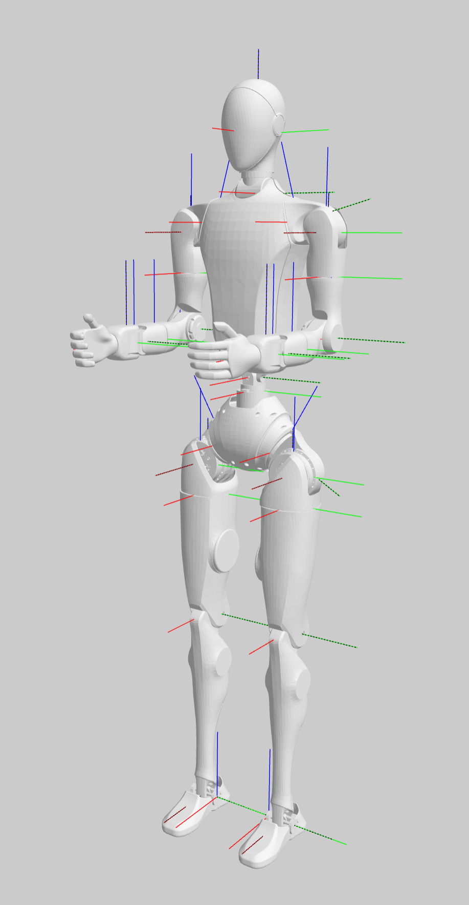
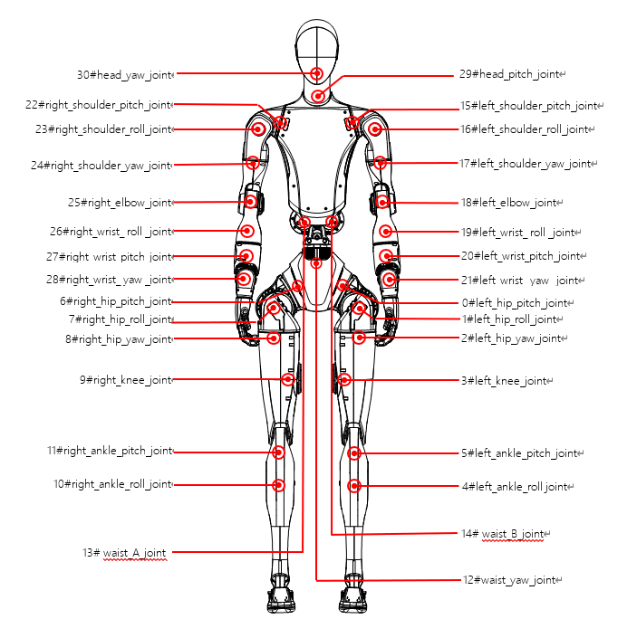
N#이 배열 번호입니다. 허리 13 · 14번은 모터 A · B 이름으로 표기되어 있습니다 (Unitree)unitree_sdk2_python(814556d)의 example/h2/low_level/h2_ankle_swing_example.py 57 ~ 75행은 허리를 12 = roll(A), 13 = pitch(B), 14 = yaw로,
손목을 19 · 26 = yaw, 21 · 28 = roll로 적습니다. 문서, C++ 예제, 같은 Python SDK의 h2_arm_sdk_dds_example.py는 모두 위 표(12 = yaw, 13 = roll · A, 14 = pitch · B, 19 · 26 = roll, 21 · 28 = yaw)와 같습니다. 단, 이 파일의 발목 번호(28 ~ 41행)는 4 · 10 = pitch, 5 · 11 = roll로 위 표와 반대입니다. 발목을 쓰지 않는 예제라 동작에는 영향이 없지만 복사해 쓰지 마십시오.
xr_teleoperate의 H2 열거형(H2_JointIndex, 817fb00 "H2 waist's joint index" 수정 이후)도 허리를 12 = roll, 13 = pitch, 14 = yaw로 적어 위 표와 다릅니다. 이 설명서는 문서 · C++ 예제 · URDF의 순서(12 = yaw)를 따릅니다.
그 예제는 발목 번호만 쓰므로 동작에는 영향이 없지만, 이 열거형을 복사해 쓰지 마십시오.
허리 병렬 기구와 mode_pr 문서 SDK
허리 모터 A(13번)와 B(14번)는 병렬 구조로, 두 모터가 함께 허리의 roll과 pitch 관절을 동시에 구동합니다. 실제로 돌아가는 것은 모터 A · B이고 roll · pitch 관절은 그 결과입니다.
LowCmd_.mode_pr이 13 · 14번 칸의 뜻을 정합니다.
| 칸 | mode_pr = 0 · PR (기본) | mode_pr = 1 · AB |
|---|---|---|
| 13 | 허리 roll 관절 (WaistRoll). URDF와 같은 관절이며, 로봇이 모터 A · B 명령으로 바꿉니다 | 모터 A를 직접 (WaistA). 병렬 기구학은 사용자가 계산 |
| 14 | 허리 pitch 관절 (WaistPitch) | 모터 B를 직접 (WaistB) |
| 4 · 5 · 10 · 11 | 발목 roll · pitch 관절 | 문서에 정의 없음. C++ 예제는 …Raw 별칭만 두고, Python h2_arm_sdk_dds_example.py(28 ~ 41행)는 4 · 10 = pitch(B), 5 · 11 = roll(A)로 적습니다 |
Basic Services Interface 문서의 IDL 주석은 mode_pr이 "발목과 허리의 병렬 기구"에 적용된다고 적지만, H2 관절표는 허리에만 모터 A · B 이름을 주고 발목은 모터 이름과 관절 이름이 같습니다.
AB 모드에서 발목 칸이 무엇을 뜻하는지, 허리 병렬 기구의 기구학이 어떤지는 H2 문서에 없습니다. H2 저수준 예제는 모두 mode_pr = 0(PR)만 보냅니다 —
h2_ankle_swing_example.cpp는 Mode::AB를 정의만 하고 쓰지 않으며, h2_dual_arm_example.cpp는 0을 고정으로 씁니다. 특별한 이유가 없으면 PR 모드를 쓰십시오.
메시지 구조 SDK 문서
모두 unitree_hg::msg::dds_ 네임스페이스이며 헤더는 include/unitree/idl/hg/에 있습니다. C++에서는 필드를 같은 이름의 접근 함수로 읽고 씁니다
(예: low_state.motor_state()[i].q(), 쓰기는 cmd.motor_cmd()[i].q() = 0.1f 또는 motor.q(0.1f)). Python(unitree_sdk2py.idl.unitree_hg.msg.dds_)은 같은 이름의 속성입니다.
문서 IDL의 octet = uint8, short = int16, unsigned long = uint32입니다.
| 필드 | 형 | 단위 | 뜻 |
|---|---|---|---|
LowState_ — rt/lowstate · rt/lf/lowstate(저주파) · 2092바이트 | |||
version | uint32[2] | 버전 | |
mode_pr | uint8 | 병렬 기구 모드 0 = PR · 1 = AB (위 절) | |
mode_machine | uint8 | H2 기종 번호. 문서에 값 목록이 없습니다. 예제는 처음 받을 때 H2 type: N으로 출력합니다 | |
tick | uint32 | ms | 1 ms마다 1씩 증가하는 타이머 |
imu_state | IMUState_ | 골반 IMU (예제 출력 이름 IMU.pelvis) | |
motor_state | MotorState_[35] | 몸체 모터 상태. 0 ~ 30번 사용 (위 표) | |
wireless_remote | uint8[40] | Unitree 실물 리모컨의 원시 데이터 (아래 절) | |
reserve · crc | uint32[4] · uint32 | 예약 · 체크섬 | |
LowCmd_ — rt/lowcmd · rt/arm_sdk · 1004바이트 | |||
mode_pr | uint8 | 0 = PR (기본) · 1 = AB | |
mode_machine | uint8 | LowState_에서 받은 값을 그대로 복사 (두 예제 모두) | |
motor_cmd | MotorCmd_[35] | 몸체 모터 명령. 0 ~ 30번 사용. rt/arm_sdk에서는 31번의 q가 가중치 | |
reserve · crc | uint32[4] · uint32 | 예약 · 체크섬 (보내기 직전에 계산, 아래 절) | |
| MotorCmd_ — 모터 한 개의 명령 | |||
mode | uint8 | 0 = 끔 (Disable) · 1 = 켬 (Enable) | |
q | float | rad | 목표 관절 위치 |
dq | float | rad/s | 목표 관절 속도 |
tau | float | N·m * | 앞먹임(feedforward) 토크 |
kp · kd | float | N·m/rad * · N·m·s/rad * | 관절 강성 계수 · 감쇠 계수 |
reserve | uint32 | 예약 (한 칸) | |
| MotorState_ — 모터 한 개의 상태 | |||
mode | uint8 | 현재 모터 모드 | |
q · dq · ddq | float | rad · rad/s · rad/s² | 측정 관절 위치 · 속도 · 가속도 |
tau_est | float | N·m * | 추정 관절 토크 |
temperature | int16[2] | °C * | [0] 외피(표면) · [1] 권선 온도. 순서는 terminations.hpp의 과열 판정과 같음 |
vol | float | V * | 모터 단자 전압 |
sensor | uint32[2] | 센서 데이터 | |
motorstate | uint32 | 모터 상태 · 오류 비트. 0이 정상. H2 문서에는 비트 정의가 없습니다 | |
reserve | uint32[4] | 예약 | |
IMUState_ — LowState_.imu_state · rt/secondary_imu · rt/lf/secondary_imu | |||
quaternion | float[4] | 쿼터니언 w · x · y · z 순서 | |
gyroscope | float[3] | rad/s * | 각속도 x · y · z |
accelerometer | float[3] | m/s² * | 가속도 x · y · z |
rpy | float[3] | rad * | 오일러 각 roll · pitch · yaw |
temperature | int16 | °C * | IMU 온도 |
* 표시 단위는 문서와 SDK에 적혀 있지 않아 SI 관례를 따랐습니다. rad · rad/s · rad/s² · ms는 문서에 있는 단위입니다.
rt/secondary_imu는 몸통 IMU입니다(문서: "body IMU", 예제 출력 이름 IMU.torso). 메시지 크기는 Python SDK unitree_sdk2py/utils/crc.py의 주석과 C++ 구조체 배치가 같습니다.
basic_services_interface.md90 ~ 92행은MotorState_에q_raw·dq_raw·ddq_raw를 두고, 95행에서vol을sensor뒤에 둡니다. SDKMotorState_.hpp24 ~ 33행에는*_raw가 없고vol이temperature와sensor사이에 있습니다.- 같은 문서 77행은
MotorCmd_.reserve를reserve[3]로 적지만, SDKMotorCmd_.hpp29행은 uint32 하나입니다. - Python IDL(
unitree_sdk2py/idl/unitree_hg/msg/dds_/)은 C++ SDK와 같습니다. 위 표는 SDK를 따랐습니다. 필드 순서가 다르면 CRC가 맞지 않으므로 직접 구조체를 정의할 때는 SDK 순서를 쓰십시오.
CRC 문서 SDK
LowCmd_와 LowState_의 마지막 필드 crc는 검증값입니다. H2 저수준 예제(발목 · 양팔)는 명령을 보낼 때마다 CRC를 새로 계산해 넣고, 받은 상태도 다시 계산해 맞지 않으면 그 메시지를 버립니다
(h2_ankle_swing_example은 [ERROR] CRC Error를 출력, h2_dual_arm_example은 조용히 버림).
| 항목 | 값 |
|---|---|
| 계산 범위 | 메시지 구조체를 32비트 단어 배열로 보고, 마지막 단어(crc 자신)를 뺀 전부. LowCmd_ 250단어, LowState_ 522단어 |
| 알고리즘 | CRC-32, 다항식 0x04C11DB7, 초깃값 0xFFFFFFFF, 단어마다 최상위 비트부터 처리, 마지막 XOR 없음 |
| C++ | 예제마다 Crc32Core(uint32_t* ptr, uint32_t len)를 복사해 둡니다 (h2_ankle_swing_example.cpp 130행, h2_dual_arm_example.cpp 51행). 같은 함수가 SDK 헤더 unitree/dds_wrapper/common/crc.h에 crc32_core()로 있습니다 |
| Python | unitree_sdk2py.utils.crc.CRC().Crc(msg). hg LowCmd_ · LowState_를 C 구조체 배치로 묶은 뒤, Linux에서는 동봉된 crc_amd64.so · crc_aarch64.so의 crc32_core로, 그 밖의 OS에서는 같은 알고리즘의 Python 코드로 계산합니다. hg · go의 LowCmd_ · LowState_가 아니면 TypeError |
// C++ — 보내기 직전 (h2_ankle_swing_example.cpp) cmd.mode_pr() = 0; cmd.mode_machine() = state.mode_machine(); cmd.motor_cmd()[i].mode() = 1; /* q, dq, kp, kd, tau 채우기 */ cmd.crc() = Crc32Core((uint32_t *)&cmd, (sizeof(cmd) >> 2) - 1); // 받을 때 if (st.crc() != Crc32Core((uint32_t *)&st, (sizeof(LowState_) >> 2) - 1)) return; # Python from unitree_sdk2py.utils.crc import CRC cmd.crc = CRC().Crc(cmd)
리모컨 데이터 문서 SDK
리모컨은 왼쪽 · 오른쪽 스틱(각각 x · y, 값 −1.0 ~ 1.0)과 기능 버튼으로 이루어지며, 버튼 조합마다 고유한 정수 키 값이 됩니다.
rt/lowstate의 wireless_remote[40]에 리모컨의 40바이트 원시 데이터가 들어 있으므로, 이를 구조체로 복사해 씁니다. gamepad.hpp의 주석에 따르면 현재는 앞 24바이트만 씁니다.

| 바이트 | 필드 (xRockerBtnDataStruct) | 형 |
|---|---|---|
| 0 ~ 1 | head[2] | uint8 ×2 |
| 2 ~ 3 | btn (버튼 비트, 오른쪽 표) | uint16 |
| 4 ~ 7 | lx 왼 스틱 x | float |
| 8 ~ 11 | rx 오른 스틱 x | float |
| 12 ~ 15 | ry 오른 스틱 y | float |
| 16 ~ 19 | L2 (아날로그 값 자리) | float |
| 20 ~ 23 | ly 왼 스틱 y | float |
| 24 ~ 39 | idle[16] | uint8 ×16 |
| 비트 | 바이트 2 | 바이트 3 |
|---|---|---|
| 0 | R1 (0x0001) | A (0x0100) |
| 1 | L1 (0x0002) | B (0x0200) |
| 2 | start (0x0004) | X (0x0400) |
| 3 | select (0x0008) | Y (0x0800) |
| 4 | R2 (0x0010) | up (0x1000) |
| 5 | L2 (0x0020) | right (0x2000) |
| 6 | F1 (0x0040) | down (0x4000) |
| 7 | F2 (0x0080) | left (0x8000) |
괄호 안 값은 btn.value(uint16, 리틀 엔디언)에서의 마스크입니다. 여러 버튼을 함께 누르면 비트가 합쳐집니다. 버튼 이름은 문서와 gamepad.hpp의 비트 필드 이름 그대로입니다.
// C++: example/h2/low_level/gamepad.hpp (namespace unitree::common) REMOTE_DATA_RX rx; Gamepad gamepad; // union { xRockerBtnDataStruct RF_RX; uint8_t buff[40]; } memcpy(rx.buff, &low_state.wireless_remote()[0], 40); // low_state: unitree_hg LowState_ gamepad.update(rx.RF_RX); // 상태 콜백마다 호출 if (gamepad.A.on_press) { /* A를 막 누름 */ } float vx = gamepad.ly; # Python — 버튼은 H2 예제(h2_ankle_swing_example.py)와 같은 방식, 스틱은 위 바이트 표대로 raw = bytes(msg.wireless_remote) btn = struct.unpack_from("<H", raw, 2)[0] A = bool(btn & (1 << 8)); B = bool(btn & (1 << 9)) lx, rx, ry = struct.unpack_from("<fff", raw, 4); ly = struct.unpack_from("<f", raw, 20)[0]
| gamepad.hpp 구성 요소 | 설명 |
|---|---|
xKeySwitchUnion | 버튼 16비트. components.R1 … components.left 비트 필드와 value(uint16)의 공용체 |
xRockerBtnDataStruct | 40바이트 전체 (위 바이트 표). 문서의 구조체와 같습니다 |
REMOTE_DATA_RX | RF_RX(구조체)와 buff[40]의 공용체. memcpy 대상 |
Button::update(bool state) | pressed(현재 눌림), on_press(이번 갱신에 눌림으로 바뀜), on_release(이번 갱신에 놓임으로 바뀜)를 갱신 |
Gamepad::update(xRockerBtnDataStruct&) | 스틱 lx · rx · ry · ly와 아날로그 l2를 갱신하고, 버튼 16개(R1 · L1 · start · select · R2 · L2 · F1 · F2 · A · B · X · Y · up · right · down · left)의 Button::update를 부름 |
dead_zone = 0.01 | 원시 값의 절댓값이 0.01보다 작으면 0으로 봅니다 |
smooth = 0.03 | 지수 평활: 새 값 = 이전 값 × 0.97 + 원시 값 × 0.03. 스틱 값은 갱신이 여러 번 쌓여야 원시 값에 가까워집니다 |
remote_control_data.md56행의 변환 예시는unitree_go::msg::dds_::LowState_를 쓰지만, H2의rt/lowstate는unitree_hg::msg::dds_::LowState_입니다 (SDK 예제 C++ · Python 모두 hg).- 바이트 2의 7번 비트를 문서와 C++ 구조체는
F2, Python 예제example/wireless_controller/wireless_controller.py는F3로 부릅니다. 리모컨 겉면에는 F1과 F3만 있습니다(그림). - 16 ~ 19바이트의
L2float를gamepad.hpp는 평활해l2로 내놓지만, 같은 Python 예제는 "Placeholder, unused"로 둡니다. L2 버튼 여부는 비트(0x0020)로 읽으십시오.
그 밖의 unitree_hg 메시지 SDK 문서
H2 예제가 직접 쓰는 것은 위 다섯 형식과, 보호 함수 low_battery()가 받는 BmsState_뿐입니다. 토픽 이름은 DDS Services Interface 문서의 공통 토픽 표에서 가져왔습니다
(H2 문서인데 표 제목이 "G1 List of common topics"로 되어 있습니다).
| 형식 · 토픽 | 필드 (형) |
|---|---|
BmsState_rt/lf/bmsstate · 배터리 | version_high · version_low · fn (uint8), cell_vol (uint16[40]), bmsvoltage (uint32[3]), current (int32), soc (uint8, 잔량), soh (uint8), temperature (int16[12]), cycle (uint16), manufacturer_date (uint16), bmsstate (uint32[5]), reserve (uint32[3]).
h2::low_battery()가 soc를 씁니다 (4장). 나머지 필드의 단위는 문서에 없습니다 |
HandCmd_rt/dex3/left/cmd · rt/dex3/right/cmd | motor_cmd (MotorCmd_의 가변 길이 배열), reserve (uint32[4]). H2 SDK에 손 예제는 없습니다 |
HandState_rt/dex3/{left,right}/state · rt/lf/dex3/… | motor_state (MotorState_ 가변 배열), press_sensor_state (PressSensorState_ 가변 배열), imu_state (IMUState_), power_v · power_a · system_v · device_v (float), error (uint32[2]), reserve (uint32[2]) |
PressSensorState_HandState_ 안 | pressure (float[12]), temperature (float[12]), lost (uint32), reserve (uint32) |
MainBoardState_rt/lf/mainboardstate | fan_state (uint16[6]), temperature (int16[6]), value (float[6]), state (uint32[6]) |
BmsCmd_AgvBmsState_SportModeState_ | 헤더만 있고 H2 문서 · 예제에는 나오지 않습니다. BmsCmd_: cmd (uint8), reserve (uint8[40]). AgvBmsState_: software_version (string), battery_percentage (uint8), current (int32), temperature (int16[3]), docking_status (string), is_charging · is_dc_connected (bool). hg SportModeState_: fsm_id · fsm_mode · task_id (uint32), task_time (float) |
손 토픽 rt/dex3/…은 이름대로 Dex3-1 손용입니다(운용 설명서 8장: Dex3-1은 PC1 · DDS 인터페이스로 연결). 다른 손의 인터페이스는 이 장에서 다루지 않습니다.
문서의 토픽 표는 rt/odommodestate의 형식을 IMUState_로 적지만, 오도메트리 문서는 unitree_go의 SportModeState_로 설명합니다.
저수준 제어
저수준 제어는 내장 운동 제어를 내려놓고, 31개 관절 모터마다 목표 위치 · 속도 · 앞먹임 토크와 게인을 직접 보내는 방식입니다.
이 장은 기준 예제 h2_ankle_swing_example을 SDK 소스와 맞춰 풀어 보고, 양팔 궤적 재생 예제와 보호 함수(terminations), 빌드 · 실행 방법을 정리합니다.
시작 전에 — 안전 문서 SDK
- 저수준 예제는 다리 · 허리 · 팔 · 머리의 관절을 모두 움직입니다. 로봇을 반드시 보호 스탠드에 매달아 발이 바닥에서 떨어진 상태로 실행하십시오.
- 내장 운동 제어가 살아 있으면
rt/lowcmd명령과 충돌합니다. 리모컨으로 댐핑(L2 + B)에 둔 뒤 L2 + R2로 디버그 모드에 들어가고, L2 + A를 눌러 진단 동작이 나오는지 확인합니다 (운용 설명서 5장). - 디버그 모드에는 균형 제어가 없습니다. 리모컨 담당자는 실행 내내 L2 + B(비상 댐핑)를 누를 수 있게 대기하십시오.
- 예제의 게인(아래 표, 무릎 Kp 250)은 예제용 값입니다. 직접 만든 제어기는 작은 Kp · Kd로 시작해 동작을 확인하며 올리고, 목표 각도가 3장 관절 한계 안에 있는지 먼저 검사하십시오.
- 두 예제 모두 스스로 끝나지 않습니다. 발목 예제는 6초 뒤 모든 관절을 0 rad에 붙잡고 있고, 양팔 예제는 궤적을 계속 반복합니다. 프로그램은 Ctrl + C로 끝내며, 끝낼 때 댐핑 명령을 따로 보내지 않습니다.
현재 SDK 예제는 여기에 더해, 시작할 때 MotionSwitcherClient(서비스 이름 "motion_switcher")로 운동 제어 서비스가 켜져 있는지 묻고, 켜져 있으면 해제합니다.
헤더는 unitree/robot/b2/motion_switcher/motion_switcher_client.hpp(네임스페이스 unitree::robot::b2)이며, H2 문서에는 이 서비스 설명이 없습니다. SDK
| 함수 (API id) | 설명 | H2 예제에서 |
|---|---|---|
Init() · SetTimeout(5.0f) | RPC 클라이언트 초기화 (API 버전 1.0.0.1) · 응답 대기 시간 (s) | 두 예제 모두 5 s |
int32_t CheckMode(std::string& form, std::string& name) (1001) | 현재 운동 제어 서비스의 form과 name을 돌려받음 | name이 비어 있을 때까지 해제를 반복 |
int32_t ReleaseMode() (1003) | 현재 운동 제어 서비스 해제. 0 = 성공 | 발목: 실패 시 메시지 후 5초 뒤 재시도 · 양팔: 실패 시 예외로 종료, 1초 간격 |
int32_t SelectMode(const std::string& nameOrAlias) (1002) | 이름 또는 별칭으로 모드 선택 | 쓰지 않음 |
SetSilent(bool) (1004) · GetSilent(bool&) (1005) | 헤더에 설명 없음 | 쓰지 않음 |
오류 코드(motion_switcher_error.hpp): 7001 인자 오류 · 7002 전환기 사용 중 · 7003 잘못된 이벤트 · 7004 · 7005 잘못된 이름 또는 별칭 · 7006 check 실행 오류 · 7007 select 실행 오류 · 7008 release 실행 오류 · 7009 사용자 데이터 저장 오류.
RPC 공통 오류(3001 ~ 3207)도 올 수 있습니다. 양팔 예제는 CheckMode()가 0이 아니면(응답 없음 등) 해제 단계를 건너뛰고, 발목 예제는 반환값을 보지 않고 name이 비었는지만 봅니다.
발목 흔들기 예제의 구조 SDK
example/h2/low_level/h2_ankle_swing_example.cpp의 main은 H2Example 객체를 만들고 잠들 뿐입니다. 생성자가 DDS를 초기화(ChannelFactory::Instance()->Init(0, 인터페이스))하고,
운동 제어를 해제한 뒤, 발행자 · 구독자와 두 개의 주기 스레드를 만듭니다. 스레드끼리는 DataBuffer<T>(최신 값 하나를 std::shared_mutex로 보호하는 버퍼)로 데이터를 주고받습니다.
h2_ankle_swing_example의 데이터 흐름. 상태는 콜백이 버퍼에 넣고, 제어 스레드가 목표를 계산해 명령 버퍼에 넣으면, 송신 스레드가 2 ms마다 최신 명령을 발행합니다| 구성 요소 | 만드는 곳 · 주기 | 하는 일 |
|---|---|---|
LowStateHandler | rt/lowstate 구독 콜백 (큐 길이 1) · 메시지마다 | CRC 검사(틀리면 [ERROR] CRC Error 후 버림) → 31개 모터의 q · dq와 IMU gyroscope · rpy를 버퍼에 저장 → 리모컨 해석(Gamepad) → mode_machine 갱신(처음 한 번 H2 type: N) → 500개마다 상태 출력 |
imuTorsoHandler | rt/secondary_imu 구독 콜백 (큐 길이 1) | 상태 출력 주기에 맞춰 몸통 IMU의 rpy를 IMU.torso.rpy로 출력 |
Control | CreateRecurrentThreadEx("control", UT_CPU_ID_NONE, 2000, …) · 2000 µs | 상태가 들어온 뒤부터 time_을 0.002 s씩 늘리며 단계별 목표를 계산해 명령 버퍼에 저장 |
LowCommandWriter | CreateRecurrentThreadEx("command_writer", …, 2000, …) · 2000 µs | 명령 버퍼가 차 있을 때만 LowCmd_를 채우고 CRC를 넣어 발행. 상태를 받기 전에는 아무것도 보내지 않음 |
// LowCommandWriter: 31개 모터를 모두 켜고 버퍼의 최신 명령(mc)을 씁니다 cmd.mode_pr() = static_cast<uint8_t>(mode_pr_); // 항상 0 (PR) cmd.mode_machine() = mode_machine_; // lowstate 값 복사 for (size_t i = 0; i < H2_NUM_MOTOR; i++) { // H2_NUM_MOTOR = 31 cmd.motor_cmd().at(i).mode() = 1; // 1 = Enable cmd.motor_cmd().at(i).q() = mc->q_target.at(i); cmd.motor_cmd().at(i).dq() = mc->dq_target.at(i); cmd.motor_cmd().at(i).kp() = mc->kp.at(i); cmd.motor_cmd().at(i).kd() = mc->kd.at(i); cmd.motor_cmd().at(i).tau() = mc->tau_ff.at(i); } cmd.crc() = Crc32Core((uint32_t *)&cmd, (sizeof(cmd) >> 2) - 1); lowcmd_publisher_->Write(cmd);
상태 출력(500개마다, 코드 주석으로는 약 1초)에는 골반 IMU rpy, 리모컨 A · B · X · Y의 pressed, 31개 모터의 mode · 위치 · 속도 · tau_est · 온도 두 개 · 전압 · sensor · motorstate · reserve가 나옵니다.
motorstate가 0이 아니면 [ERROR] motor i with code …를 출력하는데, 조건이 i <= RightAnkleRoll(= 10)이라 0 ~ 10번만 검사합니다. 11번(오른쪽 발목 pitch)과 상체는 출력 줄에서 직접 확인하십시오.
단계와 게인 SDK
duration_ = 3 s, control_dt_ = 0.002 s입니다. 매 주기 31개 관절의 목표를 0 rad, 속도 0, 토크 0, 게인은 아래 표 값으로 초기화한 뒤 단계별 값을 덮어씁니다.
| 단계 | 시간 | mode_pr | 명령 |
|---|---|---|---|
| 1 · 영점 복귀 | 0 ~ 3 s | PR | 31개 관절 목표 = (1 − t / 3) × 현재 측정 위치. 매 주기 측정값을 다시 읽으므로 3초에 걸쳐 모든 관절이 0 rad 자세로 모입니다 |
| 2 · 발목 흔들기 | 3 ~ 6 s | PR | 발목 pitch(5 · 11번) ±30° (0.5236 rad), roll(4 · 10번) ±10° (0.1745 rad), 1 Hz 사인 sin(2π(t − 3)). 오른쪽 roll만 부호가 반대. 나머지 관절은 0 rad |
| 그 뒤 | 6 s ~ | PR | 단계가 더 없습니다. 31개 관절을 0 rad에 붙잡은 채 프로그램을 끝낼 때까지 유지합니다. Mode::AB는 정의만 있고 쓰이지 않습니다 |
흔들기 진폭은 3장의 발목 한계(pitch −1.1345 ~ 0.6109, roll −0.3491 ~ 0.2967 / 오른쪽 −0.2967 ~ 0.3491 rad) 안에 있습니다.
| 관절 (번호) | Kp | Kd |
|---|---|---|
| 고관절 pitch · roll · yaw (0 ~ 2, 6 ~ 8) | 150 | 2 |
| 무릎 (3, 9) | 250 | 2 |
| 발목 roll (4, 10) | 60 | 0.3 |
| 발목 pitch (5, 11) | 90 | 0.1 |
| 허리 yaw (12) | 200 | 2.5 |
| 허리 roll · pitch (13, 14) | 200 | 5 |
| 관절 (번호) | Kp | Kd |
|---|---|---|
| 어깨 pitch (15, 22) | 90 | 2 |
| 어깨 roll (16, 23) | 60 | 1 |
| 어깨 yaw (17, 24) | 20 | 0.4 |
| 팔꿈치 (18, 25) | 60 | 1 |
| 손목 roll · pitch · yaw (19 ~ 21, 26 ~ 28) | 4 | 0.2 |
| 머리 pitch · yaw (29, 30) | 30 | 1 |
게인 배열 Kp · Kd는 C++ · Python 발목 예제와 양팔 예제(kKp · kKd)가 모두 같습니다. 단위는 3장 MotorCmd_ 표를 보십시오.
Python판 SDK
unitree_sdk2_python/example/h2/low_level/h2_ankle_swing_example.py는 같은 단계와 게인을 씁니다. 차이는 다음과 같습니다.
RecurrentThread(interval=0.002, target=LowCmdWrite, name="control")스레드 하나가 목표 계산과 발행을 함께 합니다. 콜백은 받은LowState_를 통째로 저장합니다.- CRC는
CRC().Crc(msg), 리모컨은 버튼 비트 8 ~ 11(A · B · X · Y)만 직접 읽습니다. 명령 객체는unitree_hg_msg_dds__LowCmd_()로 만듭니다. MotionSwitcherClient.CheckMode()는(status, result)를 돌려주고result["name"]이 빌 때까지ReleaseMode()를 5초 간격으로 반복합니다.- 이 파일의
H2JointIndex는 허리와 손목 번호가 문서와 다릅니다(3장 상자). 예제는 발목 번호만 쓰므로 동작은 같습니다.
양팔 궤적 재생 — h2_dual_arm_example SDK
example/h2/low_level/h2_dual_arm_example.cpp는 녹화된 양팔 14관절 궤적을 저수준으로 재생합니다. H2 문서에는 없는, SDK에만 있는 예제입니다.
- 궤적 읽기
behavior_lib/motion.seq를 yaml-cpp로 읽어Loaded N frames from …를 출력합니다. 경로는 빌드 때H2_DUAL_ARM_BEHAVIOR_DIR(소스 폴더의 절대 경로)로 고정되므로, 소스 폴더 없이 실행 파일만 옮기면 읽기에 실패합니다. - 운동 제어 해제
CheckMode() == 0이고 이름이 있으면ReleaseMode(), 1초 뒤 다시 확인. 해제에 실패하면 예외로 끝납니다. - 첫 상태 대기
rt/lowstate를 구독(큐 길이 1, CRC가 맞는 메시지만 저장)하고, 첫 상태가 올 때까지 20 ms 간격으로 기다립니다. - 명령 루프메인 스레드에서 명령을 하나 보내고 2 ms를 쉬는 일을 반복합니다(계산 시간이 더해지므로 실제 주기는 2 ms보다 조금 깁니다).
mode_pr = 0,mode_machine은 상태에서 복사, 31개 모터 모두mode = 1,dq = 0,tau = 0, 게인은 발목 예제와 같습니다. - 종료
SIGINT·SIGTERM을 받으면 루프를 빠져나와Stopped by Ctrl+C; low-level command loop exited.를 출력합니다. 마지막 명령 뒤에 댐핑을 따로 보내지 않습니다.
| 구간 (시간 t) | 15 ~ 28번 (양팔) | 0 ~ 14번, 29 · 30번 |
|---|---|---|
| 0 ~ 3 s | 31개 모두 (1 − t / 3) × 현재 측정 위치 → 3초에 걸쳐 0 rad로 | |
| 3 s ~ 3 s + 12.72 s | 궤적 프레임 (t − 3) × 0.6 / 0.002번(마지막 프레임에서 멈춤)의 14개 값 | 0 rad 유지 |
| 그 뒤 | t를 0으로 되돌려 영점 복귀부터 다시 반복 | |
kTrajectorySpeedScale = 0.6이므로 녹화 속도의 60%로 재생합니다. 3817 프레임 × 0.002 s ÷ 0.6 ≈ 12.72 s, 한 주기는 영점 복귀 3 s를 더해 약 15.7 s입니다.
motion.seq 형식
YAML 파일이며, 최상위에 type: CompositeSeq, content: BodyMotion, format_version: 4, frame_rate: 500, num_frames: 3817와 components 목록이 있습니다.
| component (type · content) | 내용 | 예제에서 |
|---|---|---|
MultiSE3Seq · LinkPosition | num_parts: 1, SE3Format: XYZQWQXQYQZ. 프레임마다 위치 3 + 쿼터니언 4 | 읽지 않음 |
MultiValueSeq · JointDisplacement | num_parts: 14. 프레임마다 값 14개 = 15 ~ 28번 관절 목표 (rad), 3장 표 순서 | 사용 |
Vector3Seq · ZMP | 프레임마다 3개 값 | 읽지 않음 |
읽기 규칙: 최상위 frame_rate가 500이 아니면 motion.seq must use 500 Hz, content가 JointDisplacement인 component가 없으면 JointDisplacement component not found,
프레임 하나라도 값이 14개가 아니면 trajectory frame is not 14-DOF 예외로 끝납니다. num_frames는 읽지 않고 실제 프레임 수를 씁니다. 자신의 궤적으로 바꾸려면 같은 구조로 JointDisplacement만 채워도 됩니다.
동봉된 motion.seq의 6번째 · 13번째 값(20 · 27번, 손목 pitch)은 약 −1.02 ~ 0.96 rad까지 움직입니다. 3장 표의 손목 pitch 한계는 ±0.576 rad입니다(나머지 12개 값은 문서 한계 안).
어느 쪽이 맞는지는 확인되지 않았습니다. 처음 실행할 때는 손목을 지켜보고, 기구 한계에 닿는 소리나 진동이 있으면 바로 댐핑하십시오. 첫 프레임과 마지막 프레임은 모두 0에 가깝습니다.
보호 함수 — terminations SDK
include/unitree/robot/h2/common/terminations.hpp에 LowState_ · BmsState_ · 구독자를 검사하는 인라인 함수 7개가 네임스페이스 unitree::robot::h2로 있습니다. 모두 이상이면 true를 돌려주며,
무엇을 할지(댐핑, 명령 중단 등)는 사용자 제어기가 정합니다. 헤더가 Eigen을 쓰므로(<eigen3/Eigen/Dense>) libeigen3-dev가 필요합니다.
| 함수 (기본 한계) | true가 되는 조건 |
|---|---|
bad_orientation(const LowState_&, float limit_angle = 1.0f) | IMU 쿼터니언(imu_state.quaternion, w · x · y · z)으로 몸체 좌표의 중력 방향을 구해, 수직에서 기운 각도 acos(−g_z)가 1.0 rad를 넘음 |
joint_vel_out_of_limit(const LowState_&, float limit_vel = 10.0f) | motor_state 35칸 중 어느 하나라도 |dq| > 10 rad/s |
ang_vel_out_of_limit(const LowState_&, float limit_vel = 6.0f) | IMU gyroscope의 한 축이라도 절댓값 > 6 rad/s |
motor_winding_overheat(const LowState_&, float limit_temp = 120.0f) | 어느 모터든 temperature[1](권선) > 120 |
motor_casing_overheat(const LowState_&, float limit_temp = 85.0f) | 어느 모터든 temperature[0](외피) > 85 |
low_battery(const BmsState_&, float limit_soc = 20.0f) | BmsState_.soc < 20. 배터리 상태는 rt/lf/bmsstate를 따로 구독해야 합니다 |
lost_connection(ChannelSubscriberPtr<LowState_>&, int64_t timeout_ms = 1000) | 구독자의 마지막 수신 뒤 1000 ms 넘게 지남. 첫 메시지를 받기 전에는 마지막 수신 시각이 0이므로 true |
joint_vel_out_of_limit · 과열 함수는 쓰지 않는 31 ~ 34번 칸까지 35칸 전부를 봅니다. 시험 프로그램 h2_termination(low_level/terminations.cpp)은 rt/lowstate만 구독하고,
100 ms마다 bad_orientation(lowstate, 1.0f)와 lost_connection(subscriber, 1000)을 검사해 Bad orientation detected! · Lost connection!을 출력합니다. 모터 명령은 보내지 않으므로 디버그 모드가 아니어도 상태만 읽어 시험할 수 있습니다.
이 프로그램은 콜백과 메인 루프가 LowState_ 하나를 잠금 없이 같이 쓰므로, 자신의 제어기에 옮길 때는 발목 예제의 DataBuffer처럼 잠금으로 보호하십시오.
#include <unitree/robot/h2/common/terminations.hpp> // 제어 루프 안에서 (state: 최근 LowState_, sub: rt/lowstate 구독자) if (unitree::robot::h2::bad_orientation(state) || unitree::robot::h2::lost_connection(sub)) { /* 명령 중단 · 작은 kd만 남긴 댐핑 등, 사용자가 정한 보호 동작 */ }
DDS Services Interface 문서(155행)는 GetLastDataAvailableTime()을 "부팅 후 0부터 늘어나는, 마이크로초 정밀도의 시각"으로 설명합니다. SDK는 이 값을
GetCurrentMonotonicTimeNanosecond()로 기록하므로(common/dds/dds_entity.hpp 323행) 단위는 나노초이며, lost_connection도 1e6으로 나눠 ms로 바꿉니다. 채널을 초기화하지 않았으면 −1입니다.
빌드와 실행 문서 SDK
# 의존 패키지 (SDK README) sudo apt-get install -y cmake g++ build-essential libyaml-cpp-dev libeigen3-dev libboost-all-dev libfmt-dev cd unitree_sdk2 && mkdir build && cd build cmake .. && make # 실행 파일: unitree_sdk2/build/bin/
| 실행 파일 | 소스 (low_level/) | 빌드 조건 (example/h2/CMakeLists.txt) | 인자 |
|---|---|---|---|
h2_ankle_swing_example | h2_ankle_swing_example.cpp | 항상 | 네트워크 인터페이스 이름 (없으면 Usage: … 출력 후 종료) |
h2_dual_arm_example | h2_dual_arm_example.cpp | yaml-cpp 0.6 이상이 있을 때 | 네트워크 인터페이스 이름 |
h2_termination | terminations.cpp | Boost program_options가 있을 때 | --network(-n), 기본값 빈 문자열. 시작 때 옵션 설명을 출력 |
Unitree 문서의 실행 절차(Quick Development · Run Examples)는 다음과 같습니다. 문서
- 인터페이스 확인
ifconfig로 192.168.123.x 대역에 연결된 네트워크 카드 이름을 찾습니다. - 로봇 준비로봇을 댐핑에 두고 매단 뒤, L2 + R2로 디버그 모드에 들어갑니다. L2 + A를 눌러 진단 동작이 나오면 디버그 모드입니다.
- 실행안전을 확인한 뒤 아래 명령을 실행합니다. 문서는 "다리와 손목이 움직이기 시작한다"고 적습니다. 소스상으로는 처음 3초 동안 31개 관절이 모두 0 rad로 모이고, 이어 3초 동안 발목만 흔들립니다.
cd unitree_sdk2/build/bin ./h2_ankle_swing_example enp3s0 # enp3s0 자리에 위에서 찾은 인터페이스 이름 ./h2_dual_arm_example enp3s0 ./h2_termination --network enp3s0 # 명령을 보내지 않는 검사 프로그램 # Python판 (unitree_sdk2_python 설치 후, 그 폴더에서) python3 example/h2/low_level/h2_ankle_swing_example.py enp3s0
[ERROR] CRC Error나[ERROR] motor i with code …가 보이면 멈추고 원인을 확인하십시오.- 끝낼 때는 리모컨 담당자가 대기한 상태에서 Ctrl + C를 누르고, 바로 L2 + B로 댐핑에 둡니다.
- 문서는 디버그 모드 진입만 안내하지만, SDK 예제는
MotionSwitcherClient로 운동 제어 서비스도 해제하고 몸통 IMU(rt/secondary_imu)를 구독합니다. h2_ankle_swing_example에는 AB 모드 단계가 없습니다.Mode::AB는 정의만 있고, 예제는 6초 뒤 영점 자세를 유지합니다.motorstate오류 검사는 0 ~ 10번만 합니다(C++ 232행, Python 144행의i <= RightAnkleRoll). H2는 10번이 발목 roll이라 11번 발목 pitch가 빠집니다.h2_dual_arm_example·h2_termination·terminations.hpp는 H2 문서에 없는 SDK 전용 항목입니다.
고수준 제어 — 보행 · 팔
고수준 제어는 균형과 보행을 Unitree 내장 운동 제어기에 맡기고, 사용자는 요청만 보내는 방식입니다. 모드 전환과 속도 명령은 RPC 클라이언트 LocoClient로 보내고,
상체는 운동 제어가 하체를 잡는 동안 rt/arm_sdk 토픽으로 덧씌우거나 미리 만든 동작을 H2ArmActionClient로 부릅니다. 몸체의 위치와 속도는 오도메트리 토픽으로 받습니다.
고수준 인터페이스 한눈에 문서 SDK
| 인터페이스 | 종류 | 용도 |
|---|---|---|
unitree::robot::h2::LocoClienth2/loco/h2_loco_client.hpp · 서비스 "sport" · API 1.0.0.0 | RPC | FSM(모드) 전환, 속도 명령, 서기 · 걸음 설정, 인사 동작, 복싱 매개변수, 팔 SDK 스위치, 지원 FSM 목록 조회 |
unitree::robot::h2::H2ArmActionClienth2/arm/h2_arm_action_client.hpp · 서비스 "arm" · API 1.0.0.14 | RPC | 미리 만든 상체 동작 실행, 이름으로 사용자 정의 동작 실행 · 중지, 동작 목록 SDK |
rt/arm_sdk (hg LowCmd_) | DDS 발행 | 보행 중 팔(15 ~ 28) · 머리(29 · 30) 덧씌움. 가중치는 motor_cmd[31].q. SDK 예제는 먼저 EnableArmSDK()를 부름 |
rt/lowstate (hg LowState_) | DDS 구독 | 팔 덧씌움 예제가 현재 관절 위치를 읽는 곳 (메시지는 3장) |
rt/odommodestate (go2 SportModeState_) | DDS 구독 | 오도메트리 500 Hz |
rt/lf/odommodestate (go2 SportModeState_) | DDS 구독 | 오도메트리 20 Hz |
unitree_sdk2py.h2.loco.h2_loco_client.LocoClient | RPC (Python) | C++와 같은 서비스 · API ID. Python SDK에는 팔 동작 클라이언트가 없음 SDK |
- 모든 고수준 서비스는 내장 운동 제어 위에서 돕니다. 디버그 모드(L2 + R2, 4장)에 들어가면 운동 제어가 완전히 꺼지고
LocoClient,rt/arm_sdk, 오도메트리가 모두 멈춥니다. 이 장의 예제는 디버그 모드 없이 실행합니다. - API ID는 서비스마다 따로 매깁니다. 같은 7106이라도
"sport"에서는SetTaskId,"arm"에서는ExecuteAction입니다. - SDK에는 hg
SportModeState_(fsm_id · fsm_mode · task_id · task_time) IDL도 들어 있지만, H2 문서와 예제에는 이 메시지를 발행하는 토픽이 나오지 않습니다. H2의 현재 모드는GetFsmId()·GetFsmMode()로 읽으십시오.
LocoClient 호출 방법 문서 SDK
#include <unitree/robot/h2/loco/h2_loco_client.hpp> unitree::robot::ChannelFactory::Instance()->Init(0, "enp3s0"); // domain 0, 네트워크 카드 이름 unitree::robot::h2::LocoClient client; client.Init(); // API 버전 "1.0.0.0" 설정, API 17개 등록 client.SetTimeout(10.f); // 응답 대기 (초) int fsm_id = -1; int32_t ret = client.GetFsmId(fsm_id); // 0 = 성공, 그 밖은 오류 코드
모든 함수는 int32_t를 돌려줍니다. 0은 요청이 받아들여졌다는 뜻일 뿐이고, 실제 전환 여부는 내장 운동 제어기의 상태 전환 규칙이 정합니다.
결과는 GetFsmId()로 다시 확인하십시오. 개발 PC(예: 192.168.123.99)나 개발 컴퓨터 PC2 · PC3 어디서든 실행할 수 있습니다.
기본 함수
리모컨 조작에 대응하는 함수입니다. → 뒤는 SDK 헤더에서 실제로 부르는 전문가 함수입니다. SDK
| 함수 | 동작 → 내부 호출 |
|---|---|
Damp() | 댐핑 (FSM 1) → SetFsmId(1) 문서 |
ZeroTorque() | 영토크 (FSM 0) → SetFsmId(0) 문서 |
StandUp() | 잠금 서기 · 준비 (FSM 4, 균형 제어 없음) → SetFsmId(4) 문서 |
Start() | 주 보행 제어기 (FSM 601) → SetFsmId(601) 문서 |
Squat() · Sit() | → SetFsmId(2) · SetFsmId(3). H2 문서의 FSM 표에는 2 · 3이 없습니다. GetAvailableFsmIds()로 지원 여부를 먼저 확인하십시오 |
Move(vx, vy, vyaw, continous_move) | 속도 명령. vx 앞뒤 · vy 좌우 (m/s), vyaw 회전 속도. false면 1 s, true면 864000 s(10일) 유효 → SetVelocity(vx, vy, vyaw, 1 또는 864000) 문서 |
Move(vx, vy, vyaw) | 위와 같되 유효 시간은 SwitchMoveMode()로 정한 클라이언트 내부 값(기본 false = 1 s)을 따름 |
StopMove() | 속도 0 → SetVelocity(0, 0, 0) (duration 기본 1 s) 문서 |
SwitchMoveMode(bool flag) | 3인자 Move()의 기본 동작만 바꿉니다. true = 연속 응답, false = 새 명령이 없으면 1초 뒤 정지 (기본). RPC를 보내지 않고 객체 안의 값만 바꾸며 항상 0을 돌려줍니다 문서 |
BalanceStand() | 서기 모드. 속도 명령이 0이고 안정하면 걸음을 멈추고, 필요할 때만 다시 발을 뗍니다 → SetBalanceMode(0) 문서 |
ContinuousGait(bool flag) | 연속 걷기. 켜면 속도가 0이어도 계속 제자리걸음 → SetBalanceMode(flag ? 1 : 0) 문서 |
HighStand() · LowStand() | 서기 높이를 최대 · 최소로 → SetStandHeight()에 uint32 최댓값(4294967295) · 0을 float로 보냄 |
WaveHand(bool turn_flag = false) | 손 흔들기, true면 돌면서 손 흔들기 → SetTaskId(0) · SetTaskId(1) |
ShakeHand(int stage = -1) | 악수. stage 0 = 시작, 1 = 끝, 생략하면 시작과 끝을 번갈아 보냅니다(첫 호출은 시작) → SetTaskId(2) · SetTaskId(3) |
EnableArmSDK() · DisableArmSDK() | 팔 SDK 스위치 켜기 · 끄기 → SetArmSdkStatus(true) · SetArmSdkStatus(false). 켜면 내장 팔 서비스가 꺼지고, 끄면 돌아옵니다 문서 |
- 연속 응답은 기본으로 꺼져 있고, 문서도 안전을 위해 신중히 켜라고 권합니다.
SwitchMoveMode(true)뒤의 3인자Move()나Move(…, true)는 864000 s짜리 속도 명령을 보냅니다.StopMove()나 새 명령이 오기 전까지 유효하므로 프로그램이 죽어도 로봇은 마지막 속도로 계속 걷습니다.SetVelocity()에 큰 duration을 줘도 같습니다. - 속도는 작은 값부터 시작하고, 리모컨 담당자가 L2 + B(댐핑, 운동 모드에서는 5초 길게)를 누를 수 있게 대기하십시오. 프로그램을 끝낼 때는 반드시
StopMove()를 보내십시오.
전문가 인터페이스 (RPC API)
요청과 응답은 JSON 문자열입니다. Get 계열은 빈 요청을 보내고 {"data": 값}을 받으며, Set 계열은 {"data": 값}을 보냅니다.
예외는 SetVelocity의 {"velocity": [vx, vy, omega], "duration": d}와 GetAvailableFsmIds 응답의 {"ids": […], "names": […]}입니다. SDK
| 함수 · API ID | 설명 | 값 · 비고 |
|---|---|---|
GetFsmId(int& fsm_id) · 7001 | 현재 FSM ID 문서 | 아래 FSM 표 |
GetFsmMode(int& fsm_mode) · 7002 | 주 보행 제어기가 서 있는지 문서 | 0 = 서 있음, 1 = 움직이는 중 |
GetBalanceMode(int& balance_mode) · 7003 | 서기 / 연속 걷기 설정 읽기 | 0 = 서기, 1 = 연속 걷기 |
GetSwingHeight(float& swing_height) · 7004 | 발 드는 높이 읽기 | 단위 · 범위는 H2 문서에 없음 |
GetStandHeight(float& stand_height) · 7005 | 서기 높이 읽기 | 단위 · 범위는 H2 문서에 없음 |
GetPhase(std::vector<float>& phase) · 7006 | 보행 위상 읽기 | SDK 주석: deprecated |
GetArmSdkStatus(bool& arm_sdk_status) · 7007 | 팔 SDK 스위치 상태 문서 | true = 켜짐 (외부 rt/arm_sdk 사용 중). H2에서 새로 추가된 API입니다. |
GetAvailableFsmIds(std::vector<int>& ids, std::vector<std::string>& names) · 7008 | 현재 펌웨어가 지원하는 FSM ID와 이름 문서 | ids[i] ↔ names[i], 짧은 쪽 길이까지 짝지음. H2에서 새로 추가된 API입니다. |
SetFsmId(int fsm_id) · 7101 | FSM 전환 문서 | 아래 FSM 표 · 모드 전환 참고 |
SetBalanceMode(int balance_mode) · 7102 | 서기 / 연속 걷기 설정 | 0 · 1 |
SetSwingHeight(float swing_height) · 7103 | 발 드는 높이 설정 | 단위는 H2 문서에 없음 |
SetStandHeight(float stand_height) · 7104 | 서기 높이 설정 | HighStand() · LowStand()가 극값을 보냄 |
SetVelocity(float vx, float vy, float omega, float duration = 1.f) · 7105 | 속도 명령과 유효 시간 문서 | vx · vy m/s, duration s (문서 예: "0.5 0 0 1" = x 방향 0.5 m/s로 1 s). omega는 요(yaw) 회전 속도. 허용 범위를 넘는 값은 자동으로 잘림 |
SetTaskId(int task_id) · 7106 | 인사 동작 | 0 손 흔들기 · 1 돌며 손 흔들기 · 2 악수 시작 · 3 악수 끝 (SDK 함수에서 역산). 잘못된 ID는 7303 |
SetSpeedMode(int speed_mode) · 7107 | 속도 모드 설정 | H2에서 값별 의미는 문서에 없음. Python 예제는 1을 보냄 |
SetPunchApi(std::vector<float>& punch_api) · 7108 | 복싱 동작 매개변수 열 문서 | {"data": [f, f, …]}. 원소의 뜻과 개수는 문서에 없음 (문서 예: "0.1 0.2 0.3"). 비 const 참조라 임시 객체는 넘길 수 없음. H2에서 새로 추가된 API입니다. |
SetArmSdkStatus(bool arm_sdk_status) · 7109 | 팔 SDK 스위치 문서 | true = 외부 팔 SDK 켬(내장 팔 서비스 꺼짐), false = 끔(내장 팔 서비스 복귀). H2에서 새로 추가된 API입니다. |
h2_loco_api.hpp의 상수와 타입 SDK
| 이름 | 값 · 내용 |
|---|---|
LOCO_SERVICE_NAME · LOCO_API_VERSION | "sport" · "1.0.0.0" |
ROBOT_API_ID_LOCO_GET_… | 7001 FSM_ID · 7002 FSM_MODE · 7003 BALANCE_MODE · 7004 SWING_HEIGHT · 7005 STAND_HEIGHT · 7006 PHASE(deprecated) · 7007 ARM_SDK_STATUS · 7008 AVAILABLE_FSM_IDS |
ROBOT_API_ID_LOCO_SET_… | 7101 FSM_ID · 7102 BALANCE_MODE · 7103 SWING_HEIGHT · 7104 STAND_HEIGHT · 7105 VELOCITY · 7106 ARM_TASK · 7107 SPEED_MODE · 7108 PUNCH_API · 7109 ARM_SDK_STATUS |
LocoCmd | std::map<std::string, std::variant<int, float, std::vector<float>>> 별칭. H2 코드 안에서 쓰는 곳은 없음 |
JsonizeDataVecFloat | {"data": [float…]} — GetPhase · SetPunchApi |
JsonizeVelocityCommand | {"velocity": [3], "duration": float} — SetVelocity |
FsmIdInfo · JsonizeFsmIdList | {int id; std::string name;} · {"ids": [int…], "names": [string…]} ↔ std::vector<FsmIdInfo> — GetAvailableFsmIds |
FSM ID 문서
| ID | 모드 | 비고 |
|---|---|---|
| 0 | 영토크 (Zero Torque) | 균형 제어 없음. ZeroTorque() |
| 1 | 댐핑 (Damp) | 균형 제어 없음. Damp() |
| 2 · 3 | (SDK Squat() · Sit()) | H2 문서 표에 없음. SDK 함수만 보냄 SDK |
| 4 | 잠금 서기 · 준비 (Locked Standing / Ready) | 균형 제어 없음. StandUp(). 팔 덧씌움 예제가 허용하는 FSM |
| 601 | 걷기 · 뛰기 (Walk/Run) | 상지도 제어기가 담당. Start() |
| 701 | 표준 보행 (Standard Locomotion) | ai_sport ≥ 2.5.4.11. 상지는 제어기가 잡지 않음 (전문가 인터페이스 사용 가능) |
| 703 | 표준 보행 (Standard Locomotion) | ai_sport < 2.5.4.11. 상지는 제어기가 잡지 않음. 팔 덧씌움 예제가 허용하는 FSM |
| 802 | 일어서기 (Stand Up) | ai_sport ≥ 2.5.4.88 |
| 803 | 눕기 (Lie Down) | ai_sport ≥ 2.5.4.88 |
모드 전환
- 운용 설명서 5장의 모드 전환 흐름 그림에서 리모컨 흐름은 영토크(0) ↔ 댐핑(1) → 잠금 서기(4) → 운동입니다. 코드로 같은 순서를 밟으면
Damp()→StandUp()→Start()입니다. 리모컨 운동 모드와 FSM 601 · 701의 대응은 문서에 없습니다. - 701 · 703 · 802 · 803은
ai_sport버전에 따라 있거나 없습니다. 어떤 ID를 보내기 전에GetAvailableFsmIds()로 현재 펌웨어의 목록을 확인하십시오. Damp()(FSM 1)가 프로그램 쪽의 안전한 출구입니다. 리모컨으로는 L2 + B(운동 모드에서는 5초 길게)가 언제든 댐핑으로 보냅니다.- 서비스가 응답하지 않으면 3104(호출 시간 초과)가 돌아옵니다. 디버그 모드인지,
ChannelFactory::Instance()->Init()에 준 네트워크 카드 이름이 맞는지 확인하십시오.
오류 코드 SDK
| 코드 | 상수 (h2_loco_error.hpp) | 뜻 |
|---|---|---|
| 7301 | UT_ROBOT_LOCO_ERR_LOCOSTATE_NOT_AVAILABLE · UT_ROBOT_LOCO_ERR_SCHEDULER_STATE_NOT_AVAILABLE | LocoState를 쓸 수 없음. 두 상수가 같은 코드 · 같은 메시지 |
| 7302 | UT_ROBOT_LOCO_ERR_INVALID_FSM_ID | 잘못된 FSM ID |
| 7303 | UT_ROBOT_LOCO_ERR_INVALID_TASK_ID | 잘못된 task ID (SetTaskId) |
| 3xxx | 공통 RPC (internal_error.hpp) | 3102 요청 전송 실패 · 3103 API 미등록(Init() 전 호출) · 3104 호출 시간 초과 · 3203 API 미구현 · 3204 API 인자 오류 |
UT_DECL_ERR 매크로는 코드 상수와 함께 설명 문자열 상수명_DESC를 만듭니다. 오류 메시지를 출력할 때 쓰십시오.
- 문서(Sport Services Interface)의 API 표는 13개 함수만 다룹니다.
GetBalanceMode·GetSwingHeight·GetStandHeight·GetPhase·SetBalanceMode·SetSwingHeight·SetStandHeight·SetTaskId·SetSpeedMode·Squat·Sit·HighStand·LowStand·WaveHand·ShakeHand와 오류 코드는 SDK 헤더에서 옮겼습니다. 7007 · 7008 · 7108 · 7109는 RPC Routine 페이지에만 있습니다. - 문서는
continous_move=true를 "무기한 유효"라고 적었지만 SDK는 duration 864000 s를 보냅니다. - 문서는
SwitchMoveMode가 실패 시 오류 코드를 돌려준다고 적었지만, SDK는 RPC 없이 항상 0을 돌려줍니다. - FSM 표에 2 · 3이 없는데, SDK의
Squat()·Sit()과 RPC Routine의--squat·--sit은 이 값을 씁니다. - RPC Routine은
SetPunchApi(const vector<float>&)로 적었지만 SDK 원형은SetPunchApi(std::vector<float>&)(비 const)입니다. - 문서의 각 함수 비고가 가리키는 "위의 Mode Switching" 절은 같은 페이지에 없습니다. 위 모드 전환 항목과 운용 설명서 5장을 보십시오.
명령줄 예제 h2_loco_client 문서 SDK
소스는 example/h2/high_level/h2_loco_client_example.cpp, 실행 파일은 h2_loco_client입니다. 디버그 모드는 필요 없습니다.
값이 있는 옵션은 --키=값 또는 --키="값", 값이 없으면 --키로 씁니다.
# x 방향 0.5 m/s로 1초 이동 (vx vy omega duration) ./build/bin/h2_loco_client --network_interface=enp3s0 --set_velocity="0.5 0 0 1" # 현재 모드 확인 ./build/bin/h2_loco_client --network_interface=enp3s0 --get_fsm_id
| 옵션 | 동작 | 출처 |
|---|---|---|
--network_interface=이름 | 로봇과 연결된 네트워크 카드. SDK 기본값 lo (문서 코드 조각은 eth0) | 둘 다 |
--get_fsm_id · --get_fsm_mode | FSM ID · 상태 출력 | 둘 다 |
--set_fsm_id=ID | SetFsmId() (예: 4) | 둘 다 |
--set_velocity="vx vy omega [duration]" | SetVelocity(). duration을 빼면 1 s. 값이 3 · 4개가 아니면 오류로 끝남 | 둘 다 |
--move="vx vy omega" | 3인자 Move() (1 s 유효). 값이 3개가 아니면 오류로 끝남 | 둘 다 |
--stop_move | 속도 0 | 둘 다 |
--damp · --start · --stand_up · --zero_torque | 댐핑 · 주 보행(601) · 잠금 서기 · 영토크 | 둘 다 |
--switch_move_mode=true|false | SwitchMoveMode(). 다른 값은 오류로 끝남. 아래 주의 참조 | SDK (문서는 코드 조각에만) |
--set_speed_mode=N | SetSpeedMode(N) | SDK만 |
--squat · --sit | 쪼그리기 · 앉기 | 문서만 |
--get_arm_sdk_status | 팔 SDK 스위치 상태 출력 | 문서만 |
--get_available_fsm_ids | 지원 FSM 목록 출력 | 문서만 |
--set_punch_api="f f f" | 복싱 매개변수 열 | 문서만 |
--enable_arm_sdk · --disable_arm_sdk | 팔 SDK 켜기 · 끄기. 문서 표 자체에 "일시적으로 사용 불가" | 문서만 |
- "문서만" 옵션은 SDK 예제(8e1b927)에 분기가 없습니다. 오류 없이
Processing command …와Done!만 출력하고 아무것도 하지 않습니다. 문서의 실행 예--get_available_fsm_ids·--enable_arm_sdk도 마찬가지입니다. 아래처럼 직접 부르십시오. - 옵션은
std::map에 담겨 키 이름의 알파벳 순서로 실행됩니다(적은 순서가 아님). 그래서--switch_move_mode=true --move="…"는move가 먼저 실행되어 연속 이동이 되지 않고, 플래그도 프로그램이 끝나면 사라집니다. 오래 걷게 하려면--set_velocity의 duration을 쓰십시오. - 예제는 반환값을 검사하지 않습니다. 실패해도
Done!을 출력하고,--get_fsm_id가 실패하면 초기화되지 않은 값이 찍힐 수 있습니다. 결과는 다시 확인하십시오.
// 예제에 없는 H2 신규 API를 직접 부르기 std::vector<int> ids; std::vector<std::string> names; if (client.GetAvailableFsmIds(ids, names) == 0) for (size_t i = 0; i < ids.size(); ++i) std::cout << ids[i] << ": " << names[i] << "\n"; bool arm_sdk_on = false; client.GetArmSdkStatus(arm_sdk_on); // true = 외부 rt/arm_sdk 사용 중
Python — unitree_sdk2py.h2.loco SDK
unitree_sdk2_python(814556d, 2026-09-21)의 LocoClient는 서비스 이름 · API 버전 · API ID 17개 · 오류 코드(7301 ~ 7303)가 C++와 같습니다. 오류 코드는 별도 파일 없이 h2_loco_api.py에 LOCO_ERR_… 상수로 있습니다.
from unitree_sdk2py.core.channel import ChannelFactoryInitialize
from unitree_sdk2py.h2.loco.h2_loco_client import LocoClient
ChannelFactoryInitialize(0, "enp3s0")
client = LocoClient()
client.SetTimeout(10.0)
client.Init()
code, fsm_id = client.GetFsmId() # 실패하면 (code, None)
code, ids, names = client.GetAvailableFsmIds()
| 항목 | C++ | Python |
|---|---|---|
| Get 계열 | 참조 인자에 값을 쓰고 코드를 반환 | (code, 값) 튜플, 실패 시 값 None. GetAvailableFsmIds()는 (code, ids, names) |
| Get 요청 본문 | 빈 문자열 | "{}" |
| 기본 함수의 반환값 | 모두 오류 코드 | Damp · Start · Squat · Sit · StandUp · ZeroTorque · StopMove · HighStand · LowStand · Move · BalanceStand · ContinuousGait · WaveHand · ShakeHand(0|1)은 None(코드를 버림). 코드가 필요하면 SetFsmId() 등을 직접 부르십시오. EnableArmSDK · DisableArmSDK · SwitchMoveMode · 인자 없는 ShakeHand()는 코드를 반환 |
Move | 3인자 · 4인자 오버로드 | Move(vx, vy, vyaw, continous_move=None) 하나. None이면 SwitchMoveMode 값 |
SetTaskId | int | 타입 힌트가 float (값은 그대로 JSON에 들어감) |
| 팔 동작 클라이언트 | H2ArmActionClient | 없음 (unitree_sdk2py/h2에는 loco만) |
예제 example/h2/high_level/h2_loco_client_example.py는 명령줄 옵션이 아니라 대화형 메뉴입니다. 첫 인자가 네트워크 카드이고(없으면 기본 인터페이스), 경고 뒤 Enter를 누르면 시작합니다.
list를 입력하면 항목이 나오고, 번호나 이름을 입력하면 고정된 값으로 실행합니다.
python3 example/h2/high_level/h2_loco_client_example.py enp3s0
| 번호 · 이름 | 호출 | 번호 · 이름 | 호출 |
|---|---|---|---|
| 0 damp | Damp() | 6 get_fsm_mode | GetFsmMode() 출력 |
| 1 start | Start() (601) | 7 set_fsm_id | SetFsmId(4) 고정 |
| 2 stand_up | StandUp() (4) | 8 set_velocity | SetVelocity(0, 0, 1.0, 4.0) 제자리 회전 4 s |
| 3 zero_torque | ZeroTorque() | 9 move | Move(0, 0, 2) 제자리 회전 |
| 4 stop_move | StopMove() | 10 switch_move_mode | SwitchMoveMode(True) |
| 5 get_fsm_id | GetFsmId() 출력 | 11 set_speed_mode | SetSpeedMode(1) |
- 입력이 어느 항목과도 맞지 않으면
No matching test option found.를 출력하지만 직전 선택이 그대로 남아 다시 실행됩니다. 오타 하나로 회전 명령이 다시 나갈 수 있습니다. - 10(switch_move_mode)을 고른 뒤 9(move)를 고르면 864000 s짜리 제자리 회전이 됩니다. 4(stop_move)로 멈추십시오.
팔 덧씌움 — rt/arm_sdk 문서 SDK
내장 운동 제어가 다리와 균형을 맡는 동안 팔과 머리만 사용자가 제어합니다. rt/arm_sdk에 hg LowCmd_를 보내며, 문서상 의미가 있는 원소는 다음뿐이고 나머지는 무시됩니다. 관절 번호와 메시지 필드는 3장을 보십시오.
| motor_cmd 번호 | 뜻 |
|---|---|
| 31 | motor_cmd[31].q = 가중치 0.0 ~ 1.0. 0이면 내장 제어기가 상체를 갖고, 1이면 사용자 명령을 따름. SDK 예제의 kArmSdkWeightJoint = 31로 확인 |
| 15 ~ 21 · 22 ~ 28 | 왼팔 · 오른팔 각 7관절 (어깨 pitch · roll · yaw, 팔꿈치, 손목 roll · pitch · yaw). q · dq · kp · kd · tau |
| 29 · 30 | 머리 pitch · yaw |
| 그 밖 (0 ~ 14, 32 ~ 34) | 무효. 다리(0 ~ 11)와 허리(12 ~ 14)는 rt/arm_sdk로 제어할 수 없습니다 |
- 쓸 수 있는 모드: 문서는 잠금 서기와 운동 1 · 2라고 적었습니다. SDK 예제는
GetFsmId()가 4 또는 703일 때만 진행합니다. 601은 제어기가 상지까지 잡는 모드라 해당하지 않습니다. - 팔 SDK 스위치: SDK 예제는 발행 전에
EnableArmSDK()(7109,true)를 부르고, 0이 아니면 끝냅니다. 끝날 때는DisableArmSDK()를 부릅니다. 켜면 내장 팔 서비스가 꺼집니다(문서). 팔 동작 서비스도rt/arm_sdk를 쓰므로(SDK 주석) 둘을 동시에 쓰지 마십시오. - 균형: 잠금 서기(FSM 4)에는 균형 제어가 없습니다. 팔을 크게 움직이는 시험은 로봇을 매달고 하십시오.
예제 h2_arm_sdk_dds_example SDK
소스는 example/h2/high_level/h2_arm_sdk_dds_example.cpp, Python판은 unitree_sdk2_python/example/h2/high_level/h2_arm_sdk_dds_example.py입니다. 두 파일의 단계 · 게인 · 목표는 같습니다.
./build/bin/h2_arm_sdk_dds_example enp3s0 # 인자는 네트워크 카드. 없으면 ""
- 확인장애물 경고를 출력하고 Enter를 기다립니다.
- FSM 확인
LocoClient(시간 초과 5 s)로GetFsmId()를 읽고, 4 · 703이 아니면Supported FSMs: 4, 703.을 출력하고 끝납니다. - 팔 SDK 켜기
EnableArmSDK()가 0이 아니면 오류 코드를 출력하고 끝납니다. - 상태 대기
rt/lowstate를 최대 5 s(20 ms × 250) 기다립니다. 오지 않으면Timed out waiting for rt/lowstate.를 출력하고DisableArmSDK()를 부른 뒤 끝납니다. - 단계 1 ~ 4아래 그림 · 표대로 20 ms마다
rt/arm_sdk를 발행합니다. - 반납가중치 0을 한 번 더 보내고
DisableArmSDK()를 부른 뒤Done!을 출력합니다.
h2_arm_sdk_dds_example의 단계와 가중치 (20 ms 주기). 가중치는 첫 메시지부터 1이고, ④에서만 3초에 걸쳐 0으로 내려갑니다.| 항목 | 값 (SDK) |
|---|---|
| 제어 관절 | 16개: 왼팔 15 ~ 21, 오른팔 22 ~ 28, 머리 29 · 30. 허리 12 ~ 14는 명령하지 않음 |
| 게인 | 팔 kp 80 · kd 1.5, 머리 kp 30 · kd 1.0, dq 0, tau 0. mode 필드는 건드리지 않음(0) |
| 주기 | kControlDt 0.02 s, 매 주기 20 ms 쉼 (약 50 Hz) |
| 보간 | 매 주기 q = (1 − r)·q측정 + r·q목표, r = (step + 1) / steps (0 → 1 선형). q측정은 그 주기의 최신 rt/lowstate 값 (고정 출발점이 아님). 단계 1 · 3의 목표는 0 rad |
| 목표 자세 (단계 2) | 왼쪽 어깨 roll +20°, 오른쪽 어깨 roll −20°, 양 팔꿈치 +30°, 머리 pitch +15° · yaw +20°, 나머지 0 |
| 단계 시간 | ① 3 s · ② 6 s · ③ 9 s · ④ 3 s (합계 21 s) |
| 가중치 | 단계 1 첫 메시지부터 1.0 (올리는 구간 없음). 단계 4에서 주기마다 1 − (step + 1)/150으로 1 → 0, 이어서 0을 한 번 더 보냄. 단계 4 동안 관절 명령은 단계 3의 마지막 값(0 rad)을 유지 |
| CRC | 발행 전마다 crc32_core()로 계산 (Python은 CRC().Crc()) |
// 핵심 패턴 (h2_arm_sdk_dds_example.cpp 요약) loco_client.GetFsmId(fsm_id); // 4 또는 703이어야 함 loco_client.EnableArmSDK(); // 7109 true, 실패하면 중단 for (int j : kUpperBodyJoints) { // 15 ~ 30 float q = (1.f - r) * state.motor_state().at(j).q() + r * target[j]; auto& mc = cmd.motor_cmd().at(j); mc.q(q); mc.dq(0.f); mc.tau(0.f); mc.kp(80.f); mc.kd(1.5f); // 머리는 30 / 1.0 } cmd.motor_cmd().at(31).q(weight); // 가중치 0.0 ~ 1.0 cmd.crc() = crc32_core((uint32_t*)&cmd, (sizeof(cmd) >> 2) - 1); publisher->Write(cmd); // 20 ms마다 // … 끝: 가중치 1 → 0 (3 s), 0 한 번 더, loco_client.DisableArmSDK();
- 예제는 가중치를 바로 1로 올리되, 첫 명령이 측정 위치와 거의 같아(r = 1/150) 팔이 튀지 않습니다. 직접 짤 때도 첫 명령은 측정 위치에서 시작하고, 게인과 목표 변화는 작은 값부터 늘리십시오.
- 단계 1 ~ 3에서
Ctrl+C(SIGINT · SIGTERM)로 멈추면 예제는 가중치를 내리지 않고DisableArmSDK()만 부르고 끝납니다. 그때 상체 제어가 내장 제어기로 어떻게 넘어가는지는 문서에 없습니다. 팔 주변을 비우고, 가능하면 단계 4까지 기다리십시오. - 팔을 놓을 때는 가중치를 0까지 천천히 내리십시오. 예제는 3초를 씁니다.
- 허용 FSM: 문서는 잠금 서기와 운동 1 · 2를, FSM 표는 상지가 열린 보행으로 701(
ai_sport≥ 2.5.4.11)과 703(< 2.5.4.11)을 적었습니다. SDK 예제(2026-10-30)는 4와 703만 받아들이므로, 701을 쓰는 펌웨어에서는 실행을 거부합니다.GetAvailableFsmIds()로 현재 목록을 확인하십시오. - 스위치: 문서의 DDS 절은
EnableArmSDK()를 언급하지 않지만, SDK 예제는 이 호출이 성공해야 진행합니다. RPC Routine 표는--enable_arm_sdk를 "일시적으로 사용 불가"로 적었고, SDK 명령줄 예제에는 이 옵션이 아예 없습니다. - 번호: 문서는 15 ~ 28을 "허리 · 상지 모터"라고 적었지만, 관절표에서 15 ~ 28은 양팔이고 허리는 12 ~ 14입니다. 12 ~ 14는 문서의 유효 번호에도 없고 SDK 예제도 쓰지 않습니다.
- 가중치 위치
motor_cmd[31].q는 문서와 SDK가 일치합니다.
WeGo 실측 · 머리와 허리 실측
2026-11-16, WeGo 보유 H2 EDU, FSM 703, unitree_sdk2_python 814556d.
WeGo 시험 프로그램은 먼저 왼쪽 어깨 pitch(15번)를 ±5° 움직여 rt/arm_sdk가 적용되는지 확인한 뒤, 시험할 모터를 최고 8°/s로 천천히 +각도 · −각도로 움직이고 rt/lowstate의 실제 각도를 CSV로 남깁니다.
| 시험 | 펌웨어 V1.0.2.6 | 펌웨어 V1.0.3 |
|---|---|---|
머리 yaw(30번) ±15°, 예제와 같은 설정(mode 0, mode_machine 미설정, kp 30 · kd 1) | 움직이지 않음 (0.01° 이하, 토크 변화 없음) | +14.3° / −14.4° 추종 (명령의 약 95%) |
같은 시험 + mode = 1, mode_machine = LowState 값 | 움직이지 않음 | +14.3° / −14.4° 추종 |
허리 12번 · 14번 각각 ±5° (mode = 1, kp 200) | 시험 안 함 | 움직이지 않음 (0.01° 이하). 같은 실행에서 15번 팔은 +3.2° / −3.3° 움직임 |
- 머리 제어에는 펌웨어 V1.0.3 이상이 필요합니다. V1.0.2.6에서는
mode설정과 관계없이 머리가rt/arm_sdk명령을 무시합니다. 버전 확인과 업데이트는 Unitree Explore 앱 › About Robot에서 합니다(운용 설명서 1장). - 허리는 문서대로
rt/arm_sdk로 움직일 수 없습니다. 허리 3축은 디버그 모드의rt/lowcmd(4장)로만 제어할 수 있으며, 로봇을 매단 상태에서 하십시오. - 팔 SDK 스위치 기본값: 부팅 직후
GetArmSdkStatus()는true였고, 예제처럼 끝날 때DisableArmSDK()를 부르는 프로그램을 실행한 뒤에는false로 남았습니다. 스위치가 꺼진 상태에서rt/arm_sdk명령이 무시되는지는 아직 확인하지 않았습니다.EnableArmSDK()를 부르지 않는 프로그램(xr_teleoperate 등)을 쓰기 전에는 상태를 확인하십시오. GetBalanceMode()는 FSM 703에서 (0, 0)을, 댐핑(FSM 1)에서는 오류 7301을 반환했습니다.
팔 동작 서비스 — H2ArmActionClient SDK
H2 문서에는 없고 SDK(2026-10-30)에만 있습니다. 로봇 쪽 "arm" 서비스가 궤적을 만들어 rt/arm_sdk로 보내고, 이 클라이언트는 RPC로 요청만 보냅니다(헤더 주석).
그래서 사용자 프로그램이 rt/arm_sdk를 쓰는 동안에는 동작을 실행할 수 없습니다.
#include <unitree/robot/h2/arm/h2_arm_action_client.hpp> #include <unitree/robot/h2/arm/h2_arm_action_error.hpp> auto client = std::make_shared<unitree::robot::h2::H2ArmActionClient>(); client->Init(); // API 버전 "1.0.0.14", API 4개 등록 client->SetTimeout(10.f); int32_t ret = client->ExecuteAction(26); // "high wave"
| 함수 · API ID | 설명 | 요청 · 비고 |
|---|---|---|
ExecuteAction(int32_t action_id) · 7106 | 미리 만든 동작 실행 | {"action_id": n}. 예제는 0이 오면 "completed successfully"를 출력 |
ExecuteAction(const std::string& action_name) · 7108 | 이름으로 사용자 정의 동작 실행 | {"action_name": "…"}. 예제는 0이 오면 "request accepted"를 출력 |
StopCustomAction() · 7113 | 실행 중인 사용자 정의 동작 중지 | 빈 요청 |
GetActionList(std::string& data) · 7107 | 로봇이 지원하는 동작 목록 | 응답 문자열을 그대로 돌려줌 (형식은 SDK에 정의 없음) |
action_map (static) | 이름 → ID 표 | 클라이언트가 아는 로컬 목록이며 로봇에서 조회한 것이 아님 (헤더 주석) |
헤더의 상수: ARM_ACTION_SERVICE_NAME = "arm", ARM_ACTION_API_VERSION = "1.0.0.14", ROBOT_API_ID_ARM_ACTION_EXECUTE_ACTION 7106 · GET_ACTION_LIST 7107 · EXECUTE_CUSTOM_ACTION 7108 · STOP_CUSTOM_ACTION 7113.
요청 타입은 JsonizeArmActionCommand(action_id, 기본 0)와 JsonizeArmActionName(action_name)입니다.
| ID | action_map 이름 | ID | action_map 이름 | ID | action_map 이름 |
|---|---|---|---|---|---|
| 99 | release arm (팔 놓기) | 18 | high five | 23 | right hand up |
| 11 | two-hand kiss | 19 | hug | 24 | x-ray |
| 12 | left kiss | 20 | heart | 25 | face wave |
| 15 | hands up | 21 | right heart | 26 | high wave |
| 17 | clap | 22 | reject | 27 | shake hand |
| 오류 코드 | 상수 · 메시지 (h2_arm_action_error.hpp) | 대처 |
|---|---|---|
| 7400 | UT_ROBOT_ARM_ACTION_ERR_ARMSDK — rt/arm_sdk 토픽이 사용 중 | rt/arm_sdk를 쓰는 프로그램을 끝내고 DisableArmSDK() |
| 7401 | UT_ROBOT_ARM_ACTION_ERR_HOLDING — 팔이 자세를 유지하는 중 | ID 99를 보내거나 직전 동작 ID를 다시 보내 팔을 풂 |
| 7402 | UT_ROBOT_ARM_ACTION_ERR_INVALID_ACTION_ID — 잘못된 동작 ID | GetActionList()로 확인 |
| 7404 | UT_ROBOT_ARM_ACTION_ERR_INVALID_FSM_ID — 현재 FSM에서 팔 동작 불가 | 어느 FSM에서 되는지는 SDK · 문서에 없음. GetFsmId()로 현재 모드 확인 |
예제 h2_arm_action_example(high_level/h2_arm_action_example.cpp)는 Boost program_options가 있을 때만 빌드됩니다. 인자 없이 실행하면 도움말을 출력합니다.
| 옵션 | 동작 |
|---|---|
-n, --network 이름 | DDS 네트워크 카드 (기본 "") |
-l, --list | GetActionList() 결과 출력 |
-i, --id N | ExecuteAction(N). 0이면 목록 출력, 99는 팔 놓기 |
--name 이름 | ExecuteAction("이름") |
--stop | StopCustomAction() |
-h, --help | 도움말 |
여러 개를 주면 목록 → ID → 이름 → 중지 순으로 하나만 실행합니다. 종료 코드는 0 성공, 1 요청 실패(오류 설명 출력), 2 인자 오류 · 동작 미지정입니다. 시간 초과는 10 s입니다.
./build/bin/h2_arm_action_example -n enp3s0 -l # 로봇이 지원하는 목록 먼저
./build/bin/h2_arm_action_example -n enp3s0 -i 26
팔 동작은 상체를 크게 움직입니다. 실행 전에 주변에 사람과 물건이 없는지 확인하십시오. action_map은 클라이언트 쪽 목록이라 로봇 펌웨어와 다를 수 있으므로, -l로 받은 목록에 있는 ID만 보내십시오.
오도메트리 — rt/odommodestate 문서 SDK
몸체의 위치 · 속도 · 자세를 발행합니다. 운동 제어 시스템에 기대는 고수준 인터페이스라 디버그(저수준 개발) 모드에서는 쓸 수 없습니다.
| 토픽 | 주기 | 메시지 |
|---|---|---|
rt/odommodestate | 500 Hz | unitree_go::msg::dds_::SportModeState_ (unitree/idl/go2/SportModeState_.hpp) |
rt/lf/odommodestate | 20 Hz | 같음 |
- 두 토픽을 동시에 구독할 수 있습니다.
- 요구 버전: State Estimator 2.1.0.12 이상. 낮으면 기술 지원에 업그레이드를 요청하십시오.
- 월드 좌표계: 원점은 몸체(base) 중심의 바닥 투영점, x는 몸체 앞, y는 왼쪽, z는 위쪽입니다 (오른손 좌표계).
- 로봇 좌표계: 원점은 몸체 중심, 축 방향은 월드 좌표계와 나란하게 정의합니다 (문서 표현 그대로).
| 필드 (타입) | 뜻 · 단위 · 좌표계 |
|---|---|
position() (float[3]) | 몸체 중심 위치 x, y, z — 월드 좌표계, m 문서 |
velocity() (float[3]) | 몸체 중심 속도 x, y, z — 월드 좌표계, m/s 문서 |
imu_state().rpy() (float[3]) | 오일러 각: 로봇 좌표계가 월드 x · y · z축 둘레로 돈 각, rad 문서 |
yaw_speed() (float) | 로봇 좌표계 z축 둘레 회전 속도, rad/s 문서 |
imu_state().quaternion() (float[4]) | 월드에 대한 로봇 좌표계의 회전. 순서 w, x, y, z, w² + x² + y² + z² = 1 문서 |
| 그 밖의 IDL 필드 | stamp(TimeSpec_: sec int32, nanosec uint32) · error_code(uint32) · mode(uint8) · progress(float) · gait_type(uint8) · foot_raise_height · body_height(float) · range_obstacle(float[4]) · foot_force(int16[4]) · foot_position_body · foot_speed_body(float[12]) · path_point(PathPoint_[10]: t_from_start · x · y · yaw · vx · vy · vyaw) · imu_state()의 gyroscope · accelerometer(float[3]) · temperature(uint8).
Go2와 같은 메시지 형식을 쓰기 때문에 있는 필드로, H2 문서는 설명하지 않습니다. 값이 채워지는지 직접 확인하십시오 SDK |
#include <unitree/idl/go2/SportModeState_.hpp>
using Odom = unitree_go::msg::dds_::SportModeState_;
unitree::robot::ChannelSubscriberPtr<Odom> sub(new unitree::robot::ChannelSubscriber<Odom>("rt/odommodestate"));
sub->InitChannel([](const void* m) {
const Odom& s = *static_cast<const Odom*>(m);
float x = s.position()[0], yaw_rate = s.yaw_speed(); // m, rad/s
}, 1);
// Python: from unitree_sdk2py.idl.unitree_go.msg.dds_ import SportModeState_
// sub = ChannelSubscriber("rt/lf/odommodestate", SportModeState_); sub.Init(handler, 10)
- DDS Services Interface의 토픽 표는
rt/odommodestate·rt/lf/odommodestate의 형식을 go2IMUState_로 적었습니다. 오도메트리 페이지의 예제와 SDK IDL로 보면 go2SportModeState_가 맞습니다 (IMUState_에는position·velocity·yaw_speed가 없음). - 문서 예제는 쓰지 않는 go2
LowState_·LowCmd_헤더도 포함합니다. 필요한 것은SportModeState_.hpp뿐입니다.
음성 · 영상 · 카메라
H2 상체의 스피커 · 마이크 배열 · RGB 조명은 voice 서비스가, 머리 카메라 영상은 영상 서비스가 맡습니다. 명령은 RPC 클라이언트(AudioClient · VideoClient)로 보내고,
음성 인식 결과는 DDS 토픽으로, 마이크 원음 · 영상 · 깊이 영상은 UDP · TCP 스트림으로 받습니다. Jetson Thor(PC3)를 단 모델은 GMSL 카메라를 PC3에서 직접 읽습니다.
미디어 경로 한눈에 문서
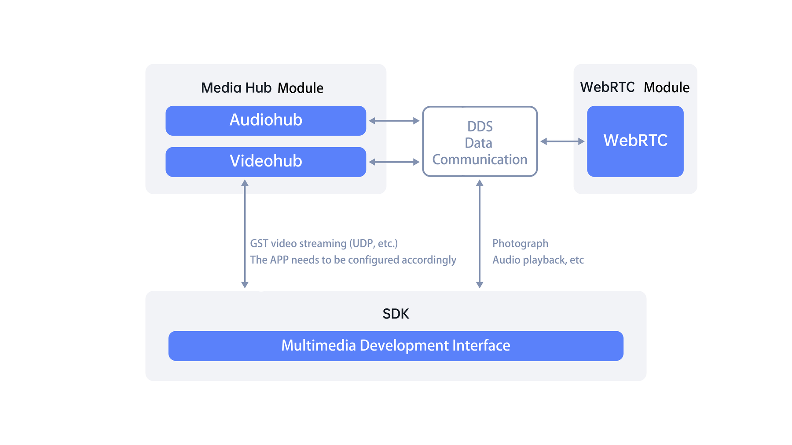
| 데이터 | 경로 | 주소 · 이름 | 형식 |
|---|---|---|---|
| 음성 합성 · 재생 · 볼륨 · 조명 | RPC | 서비스 voice · AudioClient | JSON 인자 (+ PCM 바이너리) |
| 음성 인식(ASR) 결과 · 재생 상태 | DDS 토픽 | rt/audio_msg · std_msgs::msg::dds_::String_ | JSON 문자열 |
| 마이크 원음 (잡음 제거) | UDP 멀티캐스트 | 239.168.123.161:5555 | PCM 16 kHz · 모노 · 16-bit |
| 머리 카메라 영상 | UDP 멀티캐스트 (RTP) | 230.1.1.1:1720 | H.264 · 1280 × 720 · 15 Hz |
| 사진 한 장 | RPC | 서비스 videohub · VideoClient | JPEG (720p) |
| 스테레오 RGB | UDP 유니캐스트 (RTP) | 수신 PC의 5002 · 5004 · 5006 | H.264 |
| 깊이 영상 | TCP (수신 PC가 접속) 문서 | PC1 :5000 → /dev/video-dep | Y16 · 544 × 448 |
| GMSL 카메라 (PC3) | PC3 로컬 장치 | nvarguscamerasrc · /dev/video2 · 3 | — |
| PC2 USB 카메라 2대 실측 | PC2 로컬 장치 → 필요하면 RTP · UDP로 전송 | /dev/v4l/by-path/… (이 장 끝 절) | MJPEG · 최대 2688 × 1520 · 30 fps |
음성 · 조명 하드웨어 (VUI) 문서
| 장치 | 사양 |
|---|---|
| RGB 조명 스트립 | 256색 |
| 스피커 | 8 Ω · 10 W (최대 12 W) |
| 마이크 배열 | MEMS 4개 · 간격 30 mm · 준선형 배치 |
| 필요한 버전 | vui_service 2.3.0.1 이상 · vui module 2.0.0.3 이상. 낮으면 기술 지원에 업그레이드를 요청합니다 |
- ASR (음성 인식): 기본은 로컬 오프라인 비스트리밍 모델입니다. 방위각 · 감정 · 화자 정보를 함께 줍니다. 일부 필드는 개발 중입니다.
- TTS (음성 합성): 로컬 오프라인으로 합성하며 화자를 고를 수 있습니다. 중국어와 영어를 지원합니다.
- 오디오 스트림 재생 · 볼륨 · 조명 색을 제어합니다.
- 이 기능을 조합해 자체 음성 대화 프로그램을 만듭니다. 서비스 버전은 앱의 서비스 상태 화면(아래 스테레오 절)에서 봅니다.
AudioClient API 문서 SDK
클래스 unitree::robot::g1::AudioClient, 헤더 unitree/robot/g1/audio/g1_audio_client.hpp입니다. SDK(8e1b927)에는 H2 전용 오디오 클라이언트가 없고, H2 문서의 예제도 이 G1 클라이언트를 씁니다.
서비스 이름 voice, API 버전 1.0.0.0, lease 없음. Init()이 아래 API ID 7개를 등록하며, 예제는 SetTimeout(10.0f)(초)를 씁니다.
| 함수 (API ID) | 설명 · 인자 | 반환 · 비고 |
|---|---|---|
int32_t TtsMaker(const std::string& text, int32_t speaker_id) (1001) | 문자열을 합성해 바로 재생. speaker_id: 0 = 중국어 화자, 1 = 영어 화자. 중 · 영 혼합 문장은 아직 지원하지 않습니다 | 성공 0, 실패 시 오류 코드. 요청 JSON {index, speaker_id, text}, index는 객체마다 0부터 1씩 증가 |
int32_t GetVolume(uint8_t& volume) (1005) | 시스템 볼륨(0 ~ 100)을 volume에 넣습니다 | 응답 JSON {"volume": n}. 실패하면 volume은 바뀌지 않음 |
int32_t SetVolume(uint8_t volume) (1006) | 시스템 볼륨 설정, 0 ~ 100 | 요청 JSON {"volume": n} |
int32_t PlayStream(std::string app_name, std::string stream_id, std::vector<uint8_t> pcm_data) (1003) | app_name: 응용 이름. stream_id: 같은 ID면 캐시에 이어 재생, 다른 ID면 지금 재생을 끊고 새로 재생. pcm_data: PCM 16 kHz · 모노 · 16-bit | JSON {app_name, stream_id}에 PCM을 바이너리로 붙여 보냅니다. 형식이 다르면 제대로 재생되지 않습니다 |
int32_t PlayStop(std::string app_name) (1004) | 그 응용의 재생 정지 | SDK 구현은 결과와 상관없이 항상 0 |
int32_t LedControl(uint8_t R, uint8_t G, uint8_t B) (1010) | 조명 색. 채널마다 0 ~ 255 | 요청 JSON {R, G, B}. 아래 「조명 제어」 |
| (1002 · ASR) | 클라이언트가 등록만 하고 감싼 함수는 없습니다 | 인식 결과는 rt/audio_msg 토픽으로 |
오류 코드: 오디오 서비스 고유 100 = 잘못된 인자 (g1_audio_error.hpp). 나머지는 RPC 공통 오류(robot/internal/internal_error.hpp)입니다 —
3001 알 수 없음, 3102 요청 전송 실패, 3103 API 미등록, 3104 호출 시간 초과, 3105 응답 API 불일치, 3106 응답 데이터 오류, 3107 lease 무효,
3201 응답 전송 실패, 3202 서버 내부 오류, 3203 API 미구현, 3204 API 인자 오류, 3205 ~ 3207 lease 거부 · 없음 · 중복. SDK
#include <unitree/robot/g1/audio/g1_audio_client.hpp> unitree::robot::ChannelFactory::Instance()->Init(0, argv[1]); // 예: enp3s0 unitree::robot::g1::AudioClient client; client.Init(); client.SetTimeout(10.0f); uint8_t vol; client.GetVolume(vol); client.SetVolume(60); client.TtsMaker("Hello. I'm a robot from Unitree Robotics.", 1); // 영어 화자, 자동 재생
Python SDK
from unitree_sdk2py.g1.audio.g1_audio_client import AudioClient (unitree_sdk2_python 814556d). 함수 이름 · API ID는 같고 반환만 다릅니다.
| 함수 | 반환 |
|---|---|
TtsMaker(text, speaker_id) · SetVolume(volume) · LedControl(R, G, B) | 코드 (int) |
GetVolume() | (code, dict) — 예: (0, {"volume": 85}). 실패하면 (code, None) |
PlayStream(app_name, stream_id, pcm_data: bytes) | (code, data) |
PlayStop(app_name) | 항상 0 |
PCM 스트림 재생 문서 SDK
- WAV 읽기16 kHz · 모노 · 16-bit인지 확인합니다. C++ 예제의
ReadWave()(example/g1/audio/wav.hpp), Python의read_wav()(example/g1/audio/wav.py)가 표본율 · 채널 수를 돌려줍니다. - 나눠 보내기SDK 예제는 같은
stream_id(현재 시각 ms)로 96000바이트(3초 분량)씩PlayStream을 부르고 조각 사이에 1초 쉽니다. 같은 ID이므로 캐시에 이어 재생됩니다. - 멈추기
PlayStop(app_name). 새stream_id로PlayStream을 부르면 지금 재생이 끊기고 새 소리로 바뀝니다.
# Python — 예제 도우미 함수 (example/g1/audio/wav.py) pcm, rate, ch, ok = read_wav("speech.wav") # ok and rate == 16000 and ch == 1 확인 play_pcm_stream(client, pcm, "example") # 96000 B 조각, 같은 stream_id, 1 s 간격 client.PlayStop("example")
조명 (LED) 제어 문서 SDK
LedControl(R, G, B) 한 번으로 조명 스트립 전체 색이 바뀝니다. 예제는 초록 (0, 255, 0) → 1초 → 끔 (0, 0, 0) → 1초 → 파랑 (0, 0, 255) 순서로 부릅니다.
H2 문서는 하드웨어를 "256색"이라고만 적고, 채널 값이 실제 색 단계에 어떻게 대응하는지와 호출 간격 제한은 밝히지 않습니다.
- 문서는
PlayStop이 "실패하면 오류 코드"를 돌려준다고 하지만, SDK 구현(g1_audio_client.hpp80 ~ 89행, Pythong1_audio_client.py68 ~ 71행)은 결과를 버리고 항상 0을 돌려줍니다. LedControl은 문서의 함수 표에 없고 예제 코드에만 나옵니다. SDK에는 API 1010으로 있습니다.- 문서 예제는 WAV 전체를
PlayStream한 번에 보냅니다. SDK 예제(g1_audio_client_example.cpp141 ~ 151행)는 3초 조각으로 나눠 보내므로 긴 파일은 SDK 방식을 쓰십시오. 그 예제의 153행은PlayStop(stream_id)를 부르지만 인자는app_name입니다.PlayStop("example")처럼PlayStream에 준 응용 이름을 넘기십시오. 반환값이 항상 0이라 이 실수는 드러나지 않습니다. - Python
TtsMaker는self.tts_index += self.tts_index(g1_audio_client.py29행)라서index가 0에서 늘지 않습니다. C++은 1씩 증가합니다.
음성 인식 결과 · 재생 상태 문서
마이크가 켜져 있으면(웨이크업 모드는 앱이나 리모컨으로 전환) 내장 마이크와 오프라인 ASR 모듈이 주변 음성을 인식합니다. 결과는 토픽 rt/audio_msg
(타입 std_msgs::msg::dds_::String_, 헤더 unitree/idl/ros2/String_.hpp)에 JSON 문자열로 실립니다. 문서는 재생 상태 메시지도 같은 절에서 설명합니다.
{ "index": 1, "timestamp": 29319303490, "text": "你好", "angle": 90, "speaker_id": 0,
"sense": "unknown", "confidence": 0.95, "language": "zh-CN", "is_final": true }
{ "play_state": 1 } # 재생 상태: 0 = 재생 멈춤, 1 = 재생 시작
| 필드 | 형 | 뜻 | 필드 | 형 | 뜻 |
|---|---|---|---|---|---|
index | 정수 | 메시지 고유 일련번호 | sense | 문자열 | 감정 인식 결과 |
timestamp | 정수 | 타임스탬프 | confidence | 실수 | 신뢰도 |
text | 문자열 | 인식 결과 | language | 문자열 | 언어 종류 |
angle | 정수 | 방위각 0 ~ 180 | is_final | 정수* | 끝 표시 (스트리밍 모드용, 기본은 비스트리밍) |
speaker_id | 정수 | 화자 인식 결과 | play_state | 정수 | 0 = 재생 멈춤, 1 = 재생 시작 |
* 문서 표는 is_final을 정수라고 적지만 예시 값은 true입니다. 파서는 둘 다 받도록 짜십시오.
void asr_handler(const void* msg) {
auto* m = (std_msgs::msg::dds_::String_*)msg;
std::cout << m->data() << std::endl; // JSON 문자열 — 직접 파싱
}
unitree::robot::ChannelSubscriber<std_msgs::msg::dds_::String_> sub("rt/audio_msg");
sub.InitChannel(asr_handler);
마이크 원음 문서 SDK
마이크가 켜져 있으면 잡음을 제거한 음성이 멀티캐스트 239.168.123.161, 포트 5555로 나옵니다. 형식은 모노 · 16 kHz · 16-bit PCM이며, 1초 = 32000바이트입니다.
- 소켓 열기UDP 소켓을
INADDR_ANY:5555에 bind합니다. - 그룹 가입
IP_ADD_MEMBERSHIP으로239.168.123.161에 가입합니다. 인터페이스는 192.168.123.x 주소를 가진 로컬 카드여야 합니다 (예제의get_local_ip_for_multicast()가 찾음). - 읽기받은 바이트를 int16 표본으로 이어 붙입니다. 수신 버퍼는 문서 예제가 2048바이트, SDK 예제가 5120바이트(160 ms 분량)입니다.
# 같은 절차를 Python으로 (개발 PC .99 기준) import socket s = socket.socket(socket.AF_INET, socket.SOCK_DGRAM) s.setsockopt(socket.SOL_SOCKET, socket.SO_REUSEADDR, 1) s.bind(("", 5555)) s.setsockopt(socket.IPPROTO_IP, socket.IP_ADD_MEMBERSHIP, socket.inet_aton("239.168.123.161") + socket.inet_aton("192.168.123.99")) pcm = bytearray() while len(pcm) < 16000 * 2 * 5: # 5초 pcm += s.recv(5120)
예제 실행 — g1_audio_client_example SDK
소스 example/g1/audio/g1_audio_client_example.cpp, 실행 파일은 build/bin/g1_audio_client_example입니다. 시험 음원 경로가 상대 경로 ../example/g1/audio/test.wav(16 kHz · 모노 · 16-bit)이므로 build/에서 실행합니다.
cd unitree_sdk2/build && ./bin/g1_audio_client_example enp3s0
| 순서 | 동작 |
|---|---|
| 1 | rt/audio_msg 구독 시작 (받은 JSON을 계속 출력) |
| 2 | GetVolume 출력 → SetVolume(100) |
| 3 | 중국어 TTS → 5초 대기 → 영어 TTS → 8초 대기 |
| 4 | test.wav를 3초 조각으로 재생 → PlayStop |
| 5 | 조명 초록 → 끔 → 파랑 (1초 간격) |
| 6 | 마이크 멀티캐스트를 5초 녹음해 현재 폴더의 record.wav로 저장. 이후 ASR 결과만 출력하며 끝나지 않으므로 Ctrl+C로 종료 |
예제는 볼륨을 100으로 올린 뒤 음성을 냅니다. 사람 귀 가까이에서 실행하지 말고, 끝난 뒤 원래 볼륨으로 되돌리십시오.
머리 카메라 영상 서비스 문서 SDK
영상 전송에는 UDP 직접 수신(또는 RTMP 같은 일반 프로토콜)을 권장합니다. DDS로는 H.264 인코딩 영상만 오므로 받는 쪽에서 다시 디코딩해야 하기 때문입니다. 사진 한 장(720p JPEG)은 DDS RPC로 받습니다.
H.264 멀티캐스트
# 1280×720 · 15 Hz. multicast-iface는 로봇에 연결된 개발 PC의 인터페이스 이름
gst-launch-1.0 udpsrc address=230.1.1.1 port=1720 multicast-iface=enp3s0 ! queue ! \
application/x-rtp,media=video,encoding-name=H264 ! rtph264depay ! h264parse ! avdec_h264 ! videoconvert ! autovideosink
지금은 UDP만 지원하며, 다른 전송 프로토콜은 추후 추가 예정이라고 문서는 적고 있습니다.
JPEG 사진 — VideoClient
클래스 unitree::robot::go2::VideoClient, 헤더 unitree/robot/go2/video/video_client.hpp. SDK에는 이 Go2 이름공간의 클라이언트만 있고 H2 문서도 이것을 씁니다.
서비스 이름 videohub, API 버전 1.0.0.0, lease 없음(Python 구현 기준). SDK
| 함수 (API ID) | 설명 | 반환 · 비고 |
|---|---|---|
int32_t GetImageSample(std::vector<uint8_t>& image_sample) (1001) | 사진 한 장을 요청해 JPEG 바이트를 image_sample에 채웁니다 | 성공 0, 실패 시 오류 코드. 고유 오류 100 = 잘못된 인자 (video_error.hpp) + RPC 공통 오류 |
Python: unitree_sdk2py.go2.video.video_client.VideoClient().GetImageSample() | 같은 API | (code, data). Python 쪽 API 버전 문자열은 1.0.0.1 |
unitree::robot::ChannelFactory::Instance()->Init(0, argv[1]);
unitree::robot::go2::VideoClient video_client;
video_client.SetTimeout(1.0f); video_client.Init();
std::vector<uint8_t> jpg;
if (video_client.GetImageSample(jpg) == 0)
std::ofstream("shot.jpg", std::ios::binary).write((const char*)jpg.data(), jpg.size());
SDK 예제 example/go2/go2_video_client.cpp(실행 파일 go2_video_client)는 3초마다 사진을 받아 YYYYMMDDHHMMSS.jpg로 저장합니다.
SDK 예제는 Init(0)으로 인터페이스를 지정하지 않으므로, 여러 네트워크 카드가 있는 개발 PC에서는 문서처럼 인터페이스 이름을 넘기는 형태로 고쳐 쓰십시오.
- 문서는 VideoClient 오류 코드를 "현재 없음"이라고 적지만, SDK는
UT_ROBOT_VIDEO_ERR_COMM= 100을 정의합니다 (video_error.hpp12행). - API 버전이 C++
1.0.0.0(video_api.hpp16행), Python1.0.0.1(video_api.py10행)로 다릅니다. - 스테레오 서비스 절차는 앱에서
video_hub를 끄라고 합니다. VideoClient의 RPC 서비스 이름은videohub입니다. 둘이 같은 서비스인지 문서는 밝히지 않으므로,stereo_patch_pc1을 켠 동안 사진 · H.264 멀티캐스트가 계속 나오는지 직접 확인하십시오.
OpenCV · GStreamer로 받기 문서
OpenCV의 VideoCapture에 GStreamer 파이프라인 문자열을 넘기면 위 스트림을 프레임 단위로 받을 수 있습니다 (VideoWriter로 보내는 것도 같은 방식). 이를 위해 OpenCV가 GStreamer를 켜고 빌드되어 있어야 합니다.
- GStreamer 설치 (Ubuntu)
sudo apt-get install libgstreamer1.0-dev libgstreamer-plugins-base1.0-dev libgstreamer-plugins-bad1.0-dev gstreamer1.0-plugins-base gstreamer1.0-plugins-good gstreamer1.0-plugins-bad gstreamer1.0-plugins-ugly gstreamer1.0-libav gstreamer1.0-tools gstreamer1.0-x gstreamer1.0-alsa gstreamer1.0-gl gstreamer1.0-gtk3 gstreamer1.0-qt5 gstreamer1.0-pulseaudio - OpenCV 빌드문서는 OpenCV 4.1.1 소스(
github.com/opencv/opencv/tree/4.1.1)를 받아mkdir build && cd build && cmake-gui ..에서 WITH_GSTREAMER(와 CUDA)를 켜고 configure → generate 후make && sudo make install을 안내합니다. - 확인
std::cout << cv::getBuildInformation()(Pythonprint(cv2.getBuildInformation())) 출력의 Video I/O에서GStreamer: YES인지 봅니다. pip의opencv-python휠은 보통 GStreamer 없이 빌드되어 있습니다.
cv::VideoCapture(const String& filename, int apiPreference) | 설명 |
|---|---|
| filename | 영상 파일 경로, 이미지 열(예: image_%02d.jpg), 스트림 URL(RTSP 등), 또는 GStreamer 파이프라인 문자열. 파이프라인은 먼저 gst-launch-1.0으로 시험합니다 |
| apiPreference | 사용할 백엔드: CAP_GSTREAMER · CAP_FFMPEG · CAP_IMAGES · CAP_DSHOW 등 |
import cv2
pipe = ("udpsrc address=230.1.1.1 port=1720 multicast-iface=enp3s0 ! application/x-rtp,media=video,encoding-name=H264 ! "
"rtph264depay ! h264parse ! avdec_h264 ! videoconvert ! video/x-raw,width=1280,height=720,format=BGR ! appsink drop=1")
cap = cv2.VideoCapture(pipe, cv2.CAP_GSTREAMER)
while cap.isOpened():
ok, frame = cap.read()
if not ok: break
cv2.imshow("H2", frame)
if cv2.waitKey(1) & 0xFF == ord('q'): break
# 스테레오 스트림이면 앞부분을 "udpsrc port=5004 ! application/x-rtp,media=video,clock-rate=90000,encoding-name=H264,payload=96 ! ..."로 바꾸고, width=1280,height=720을 width=544,height=448로 고치십시오 (5002는 1920 · 1080)
C++도 같은 문자열을 VideoCapture cap(pipe, CAP_GSTREAMER)에 넘기고 cap.read(frame) · imshow를 반복합니다 (Esc로 종료).
스테레오 영상 서비스 — stereo_patch_pc1 문서
PC1(192.168.123.161)의 stereo_patch_pc1 서비스가 머리 스테레오 카메라의 RGB 영상을 지정한 수신 PC로 보내고, 깊이 영상을 내보냅니다.
About H2 사양표에서 머리 카메라가 PC1(MIPI)에 붙는 모델은 H2 · H2 edu입니다. H2 plus는 머리 카메라가 PC3 GMSL이므로 아래 GMSL 절을 보십시오. H2 plus에서 이 서비스가 동작하는지는 문서에 없습니다.
- 서비스 전환앱의 서비스 상태 화면(파랑 = 실행 중, 빨강 = 이상, 회색 = 꺼짐)에서 이 서비스와 충돌할 수 있는
video_hub를 끄고stereo_patch_pc1을 켭니다. stereo_patch_pc1은 자동 시작되지 않습니다. 목록에 없으면 기술 지원에 업그레이드를 요청합니다. - 수신 주소 지정기본 수신 주소는
192.168.123.170입니다. 아래 두 방법 중 하나로 바꾼 뒤, 서비스를 껐다 켜야 적용됩니다. - 수신 PC 준비GStreamer 플러그인을 설치합니다. 깊이 영상을 받으려면 깊이 패키지도 설치합니다.
수신 주소 설정 — :9080
명령줄 — 앱에서 stereo_patch_pc1을 켠 뒤 PC2에서 실행합니다. 192.168.123.161은 고정이고, ip= 뒤가 영상을 받을 장치의 주소입니다.
curl "http://192.168.123.161:9080/set?ip=192.168.123.162"
브라우저 — http://192.168.123.161:9080/에 접속해 새 주소를 입력하고 更新 IP 地址(IP 주소 갱신)를 누릅니다.
수신 PC 준비와 스트림
sudo apt update
sudo apt install gstreamer1.0-plugins-good gstreamer1.0-plugins-bad gstreamer1.0-plugins-ugly gstreamer1.0-libav
sudo ufw disable # 문서 안내. 방화벽을 유지하려면 UDP 5002 · 5004 · 5006을 열어 둡니다
| 포트 | 영상 | 해상도 · 주기 |
|---|---|---|
| UDP 5002 | 오른쪽 눈 원본 RGB (왜곡 보정 전) | 1920 × 1080 · 15 fps |
| UDP 5004 | 왼쪽 눈 RGB | 544 × 448 · 10 fps |
| UDP 5006 | 오른쪽 눈 RGB | 544 × 448 · 10 fps |
| TCP 5000 (PC1 쪽) 문서 | 깊이 (Y16) | 544 × 448 · 10 fps → /dev/video-dep |
# 유니캐스트 수신 (5002는 문서대로 큰 버퍼). 5004 · 5006은 port만 바꾸고 buffer-size 없이 sudo gst-launch-1.0 -v udpsrc port=5002 buffer-size=2097152 ! \ application/x-rtp,media=video,clock-rate=90000,encoding-name=H264,payload=96 ! rtph264depay ! avdec_h264 ! videoconvert ! autovideosink sync=false # 해상도 · 프레임률 확인 gst-launch-1.0 udpsrc port=5004 ! application/x-rtp,media=video,clock-rate=90000,encoding-name=H264,payload=96 ! \ rtph264depay ! avdec_h264 ! fakesink -v 2>/dev/null | grep -E 'width|height|framerate'
깊이 영상 패키지 문서
깊이 영상을 받을 PC에 패키지 세 개가 필요합니다. 문서의 링크 이름과 압축 파일의 실제 내용이 서로 바뀌어 있으니(unzip -l로 확인) 아래 「실제 내용」을 기준으로 받으십시오.
| 문서 링크 이름 | 실제 내용 |
|---|---|
| Package 1 | unitree-dep-img_1.0.0_all.deb |
| Package 2 (v4l-utils로 안내) | v4l2loopback-dkms_0.12.7-2ubuntu2~22.04.1_all.deb |
| Package 3 (v4l2loopback으로 안내) | v4l-utils_1.22.1-2build1_amd64.deb |
| 시각화 스크립트 | depth16_show.py |
# unitree-dep-img는 v4l2loopback-dkms · gcc · make에 의존하므로 세 파일을 한 번에 설치하면 순서 문제가 없습니다 dpkg -l | grep v4l2loopback-dkms # 이미 있으면 그 deb는 빼도 됨 sudo apt install ./unitree-dep-img_1.0.0_all.deb ./v4l-utils_1.22.1-2build1_amd64.deb \ ./v4l2loopback-dkms_0.12.7-2ubuntu2~22.04.1_all.deb # 설치 후 재부팅 sudo unitree-dep-img 192.168.123.161 # 깊이 수신 클라이언트 (먼저 실행) ffplay -f v4l2 -framerate 10 -video_size 544x448 -i /dev/video-dep # 새 터미널에서 보기 sudo v4l2-ctl -d /dev/video-dep --list-formats-ext # 형식 확인 sudo v4l2-ctl -d /dev/video-dep --stream-mmap --stream-count=-1 # 프레임 수신 확인
| unitree-dep-img 1.0.0이 하는 일 (패키지 내용) | 세부 |
|---|---|
| 설치 시 | /opt/dep_img_send의 C 소스를 그 자리에서 컴파일하고 /usr/local/bin/unitree-dep-img로 링크. v4l2loopback 모듈을 video_nr=102, exclusive_caps=1로 자동 적재하고, systemd 서비스 v4l2loopback-symlinks가 부팅마다 /dev/video102 → /dev/video-dep 링크를 만듭니다 |
unitree-dep-img <server_ip> [port] [v4l2_device] | 기본 port 5000, 장치 /dev/video-dep. server_ip(PC1)에 TCP로 접속해 프레임을 받아 v4l2loopback에 씁니다. 끊기면 3초 뒤 다시 접속하고, 5초마다 수신 fps를 출력합니다 |
| 프레임 = 헤더 36바이트 + 영상 | 헤더(패킹): magic u32 = 0x59313620('Y16 ') · seq_num u64 · timestamp u64(µs) · width · height · format · data_size u32. 영상은 544 × 448 × 2바이트(Y16) |
깊이 시각화 — depth16_show.py 문서
문서가 "참고용"으로 주는 Python 스크립트입니다(eedfb0b8….zip). unitree-dep-img가 돌고 있는 상태에서 python3 depth16_show.py로 실행하면 /dev/video-dep을 읽어 의사 색상으로 보여 줍니다.
python3-opencv(cv2) · numpy · v4l2-ctl이 필요합니다.
| 항목 | 동작 |
|---|---|
| 해상도 | v4l2-ctl --list-formats-ext 출력에서 자동 검출, 실패하면 544 × 448 |
| 깊이 값 | uint16 원시값을 1000으로 나눠 m로 표시 (원시값 단위 mm). 0과 65535는 무효로 보고 색표를 적용하지 않음 (어두운 회색으로 칠함) |
| 색 범위 | 기본은 유효값의 1 ~ 99 백분위로 자동 정규화. 화면에 격자와 교차점 깊이(m)를 겹쳐 그림 |
| q | 종료 |
| s | 현재 프레임 저장: 색 입힌 영상 depth_color_NNNN_544x448.png + 원시값 depth_raw_NNNN_544x448.npy |
| c | 색표 전환: JET → VIRIDIS → HOT → RAINBOW → MAGMA → INFERNO |
| + · − | 정규화 상한 ×1.2 · ×0.8. 단 소스의 NORMALIZE_RANGE가 기본 None(자동)이라 그대로는 효과가 없습니다. 예: (0, 2000)으로 고친 뒤 사용 |
H2 plus · PC3 GMSL 카메라 문서
GMSL 포트 [6]은 PC3(Jetson Thor T5000)에만 연결되므로 PC3가 있어야 씁니다. 지원 JetPack은 7.0과 7.1이며, 쓰기 전에 PC3의 JetPack 버전을 확인합니다 (WeGo 장비는 7.0, 운용 설명서 4장).
| 모델 | PC3 | 머리 스테레오 카메라 | 추가 GMSL 카메라 |
|---|---|---|---|
| H2 edu | 선택 사양 | 네트워크 카메라 (문서 표현). 사양표상 PC1 · MIPI 연결 | 손목 카메라 등 외부 연결 가능 |
| H2 plus | 기본 장착 | GMSL, PC3에 내부 배선 (2560 × 1984 · 10-bit RAW · 30 fps, About H2) | 손목 카메라 등 외부 연결 가능 |
| 카메라 | 장치 | 보는 방법 |
|---|---|---|
| S56 머리 스테레오 (보정 도구 이름 S56C) | CAM0 · CAM1 = Argus sensor-id 0 · 1 | argus_camera -d 0 또는 nvarguscamerasrc (nvargus-daemon 필요) |
| SHF3L 손목 단안 | CAM2 · CAM3 = /dev/video2 · /dev/video3 | v4l2src |
JetPack 7.0과 7.1의 차이
| 항목 | JetPack 7.0 | JetPack 7.1 |
|---|---|---|
| 드라이버 폴더 | ~/.Unitree/YUSHU_4A_AGTH_G2Y | ~/.Unitree/YUSHU_4A_AGTH_G2Y_7.1 |
| nvargus-daemon · 보기 명령 | 같음 | |
| 드라이버 갱신 절차 | 문서에 없음 | YUSHU_4A_AGTH_G2Y_7.1.tar.gz → install.sh |
| 공장 캘리브레이션 읽기 | 문서에 없음 | unitree_sensing_calib_param deb |
- 사전 설정 (전원을 켤 때마다)
cd ~/.Unitree/ && ./set_i2c3.sh를 실행한 뒤 드라이버 폴더에서./load_modules.sh를 실행합니다. - nvargus-daemon 다시 띄우기 (S56)터미널 하나에서 아래 명령을 실행해 둔 채로 다른 터미널에서 봅니다.
- 영상 보기S56은
argus_camera또는 gst로, SHF3L은v4l2src로 봅니다.
cd ~/.Unitree/ && ./set_i2c3.sh cd ~/.Unitree/YUSHU_4A_AGTH_G2Y && ./load_modules.sh # JP7.1: YUSHU_4A_AGTH_G2Y_7.1 sudo service nvargus-daemon stop; export NVCAMERA_NITO_PATH=CONFIG; sudo -E enableCamInfiniteTimeout=1 nvargus-daemon argus_camera -d 0 # CAM0 (CAM1: -d 1) gst-launch-1.0 nvarguscamerasrc sensor-id=0 ! 'video/x-raw(memory:NVMM),width=1920,height=1080,framerate=30/1' ! nvvidconv ! xvimagesink gst-launch-1.0 v4l2src device=/dev/video2 ! xvimagesink # 손목 CAM2 (CAM3: /dev/video3) v4l2-ctl -d /dev/video0 -C version # 카메라 소프트웨어 버전 (video0 ~ 3 중 하나)
드라이버 · ISP 갱신
최신 드라이버와 ISP 파일은 문서에 링크된 폴더(https://autosensee.feishu.cn/drive/folder/O59HfFgy1lXI52dDnjScDHlkneg)에서 받습니다.
# ISP — camera_overrides.isp가 있는 폴더에서 sudo rm -rf /var/nvidia/nvcam/settings/camera_overrides.isp sudo cp camera_overrides.isp /var/nvidia/nvcam/settings/ sudo chmod 644 /var/nvidia/nvcam/settings/camera_overrides.isp # 드라이버 (JP7.1 패키지) — tar.gz가 있는 폴더에서 rm -rf ~/.Unitree/YUSHU_4A_AGTH_G2Y_7.1 ~/.Unitree/YUSHU_4A_AGTH_G2Y_7.1.tar.gz cp ./YUSHU_4A_AGTH_G2Y_7.1.tar.gz ~/.Unitree && cd ~/.Unitree tar -xvf YUSHU_4A_AGTH_G2Y_7.1.tar.gz && cd YUSHU_4A_AGTH_G2Y_7.1 && ./install.sh # 그다음 전원을 끄고 다시 켬
문서의 드라이버 갱신 절차는 7.1 패키지만 다룹니다. JetPack 7.0 장비에 맞는 드라이버 패키지는 기술 지원에 확인한 뒤 설치하십시오.
공장 캘리브레이션 값 읽기 (JetPack 7.1) 문서
내부 · 외부 파라미터는 카메라 모듈 안에 공장값으로 저장되어 있고, deb 패키지 unitree_sensing_calib_param-arm64-261104.deb(첨부 fd4361d6….zip, arm64)의 명령으로 읽습니다.
압축 파일 안의 __MACOSX/ 항목은 무시합니다.
sudo dpkg -i unitree_sensing_calib_param-arm64-261104.deb # Thor에서. 의존: python3, i2c-tools sudo unitree-sensing-calib-param # sudo 필수 (I2C 장치 접근)
| 도구 동작 · 옵션 (패키지 스크립트) | 세부 |
|---|---|
| 읽는 방식 | I2C 버스 3의 GMSL 디시리얼라이저 MAX96712(주소 0x29)에서 링크 A ~ D를 하나씩만 켜고(REG6, 출력의 REG6: 0xf8 -> 0xf1 줄) 1초 기다린 뒤 모듈을 찾습니다. 0x1A가 응답하면 단안 SHF3L(플래시), 0x50이 응답하면 스테레오 S56C(EEPROM), 둘 다 없으면 건너뜀. 끝나면 REG6을 원래 값으로 되돌립니다 |
| 출력 파일 | 현재 폴더에 링크마다 link<x>_<mono|stereo>.txt(전체 보고서)와 …_calib.txt(내 · 외부 파라미터만) |
-l A C · -o 폴더 | 읽을 링크 지정 (기본 전부) · 출력 폴더 (기본 .) |
--type A=stereo C=mono | 자동 검출 없이 모듈 종류 지정 |
-b · --des-addr | I2C 버스 (기본 3) · MAX96712 주소 (기본 0x29) |
| 종료 코드 | 성공한 링크가 하나라도 있으면 0, 없으면 1. 실제 도구의 안내문은 중국어로 나옵니다 (문서 예시는 영어 번역) |
출력 형식
링크(A ~ D)마다 렌즈 정보 · 보정 정확도 · 파라미터 순으로 나오고, 맨 끝에 Finished: Success ['A', 'C', 'D'], Failed/Skipped ['B'] 같은 요약이 붙습니다.
| 필드 | 단위 | 설명 |
|---|---|---|
| Module type | — | 링크에 달린 모듈: stereo(양안) · mono(단안) |
field_of_view · focal_length · f_number | ° · mm · — | 렌즈 화각 · 초점 거리 · F값. 단안의 화각은 모듈 모델 각도 |
manufacturer_id · lens_index · lens_type | — | 렌즈 제조사 코드 · 같은 제조사 · 화각 안의 렌즈 번호 · 렌즈 종류 |
rms | pixel | 재투영 오차. 작을수록 보정 품질이 좋음 |
image_width · image_height | pixel | 보정에 쓴 영상 해상도 |
model | — | 내부 보정 모델. 현재 fisheye (코드 0x02). 양안은 좌우 공통 |
fx · fy · cx · cy | pixel | 초점 거리 성분 · 주점. 양안은 Cam0(왼쪽) · Cam1(오른쪽) 따로 |
fisheye_k1 ~ k4 | — | 어안 왜곡 계수, k1 → k4 순서로 사용 |
K · D | — | 3 × 3 내부 행렬과 왜곡 벡터. OpenCV 등에 바로 넣을 수 있는 형태 (단안 출력에 있음) |
R · T | — · mm | 양안 외부 파라미터: Cam0(왼쪽) → Cam1(오른쪽) 회전 행렬 · 이동 벡터 |
| 문서 예시 값 (장치마다 다름) | 모듈 · 보정 영상 | 값 |
|---|---|---|
| Link A | 스테레오 S56C · 2560 × 1984 | FOV 130° · f 2.67 mm · F2.0 · rms 0.229 px · fx ≈ fy ≈ 1180 · T = [−59.00, −0.59, 0.36] mm |
| Link C · D | 단안 SHF3L · 1920 × 1536 | FOV 190° · f 1.53 mm · F2.0 · rms 0.0093 / 0.0105 px · fx ≈ fy ≈ 515 |
| Link B | 없음 | 0x1A/0x50 no response → 건너뜀 |
import numpy as np, cv2 # 단안 SHF3L 예: _calib.txt의 K · D를 그대로 K = np.array([[fx, 0, cx], [0, fy, cy], [0, 0, 1]]); D = np.array([k1, k2, k3, k4]) m1, m2 = cv2.fisheye.initUndistortRectifyMap(K, D, np.eye(3), K, (1920, 1536), cv2.CV_16SC2) undist = cv2.remap(img, m1, m2, cv2.INTER_LINEAR) # img는 보정 영상과 같은 1920×1536이어야 함
- 판정: 성공한 링크의 값은 그대로 씁니다. 실패 · 건너뜀은 대개 모듈이 없거나 응답하지 않은 링크이며 다른 링크에 영향이 없습니다. 모든 링크가 실패하면 카메라 연결 · 전원 · JetPack 7.1 여부를 확인합니다.
- 장치에 묶인 값입니다. 카메라 모듈을 바꾸면 다시 읽고, 출력값을 손으로 고치지 마십시오.
- 보정 데이터는 읽기만 하고 쓰지 않습니다. 단 실행 중에 디시리얼라이저의 링크 사용 설정(REG6)을 잠시 바꿨다가 되돌립니다.
- 보정 영상과 다른 해상도로 받는다면 K를 맞춰야 합니다. S56의 gst 예제 출력 1920 × 1080은 보정 영상 2560 × 1984와 종횡비가 다르므로, 어떤 자르기 · 축소가 적용되는지 확인한 뒤 쓰십시오 (문서에 없음).
- 문서 예시의 스테레오 베이스라인(T의 x ≈ 59.0 mm)은 사양표 60.00 ± 0.5 mm와 다릅니다. 실제 장비에서 읽은 값을 쓰십시오.
PC2 USB 카메라 — 받기 실측
WeGo가 시험한 H2(2026-11-10)의 PC2에는 USB 카메라 2대가 붙어 있습니다. H2 문서에는 없는 장치입니다 (문서의 손목 카메라는 PC3 GMSL, 위 절). 이 장비에서는 두 카메라 모두 손가락 쪽을 내려다봅니다 (그림 10). 아래 값과 명령은 모두 이 장비에서 직접 확인했습니다.
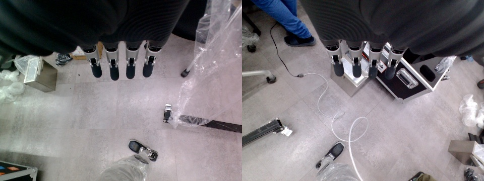
| 항목 | 값 (실측) |
|---|---|
| USB 장치 | 1c45:6200 HHWei "Abham Image" × 2 (UVC) |
| 장치 파일 | 카메라마다 /dev/video 노드가 2개 생깁니다. 짝수(video0 · video2)가 영상, 홀수는 메타데이터 노드라 열리지 않습니다 |
| 고정 이름 | /dev/v4l/by-path/를 쓰십시오. 두 카메라가 같은 일련번호(HHW001)를 보고해 /dev/v4l/by-id/에는 하나만 남고, 가리키는 카메라도 부팅마다 바뀝니다. by-path는 USB 포트별로 고정됩니다 (시험 장비: …-usb-0:1:1.0-video-index0 · …-usb-0:3.4:1.0-video-index0) |
| 형식 | MJPEG: 640 × 480 ~ 2688 × 1520, 모두 최대 30 fps. YUY2(비압축)는 1920 × 1080 5 fps · 1280 × 720 10 fps뿐이므로 MJPEG로 여십시오 |
| 측정 | PC2 OpenCV 1280 × 720 MJPEG 30.0 fps · 개발 PC로 RTP 전송 시 두 대 동시 1280 × 720 각 약 27 fps (시작 시간 포함) · 640 × 480 약 30 fps |
PC2에서 바로 읽기 — OpenCV
PC2 기본 python3에 OpenCV가 있습니다. 해상도를 주기 전에 FOURCC를 MJPG로 정해야 큰 해상도에서도 30 fps가 나옵니다.
import cv2 dev = "/dev/v4l/by-path/pci-0000:00:14.0-usb-0:3.4:1.0-video-index0" cap = cv2.VideoCapture(dev, cv2.CAP_V4L2) cap.set(cv2.CAP_PROP_FOURCC, cv2.VideoWriter_fourcc(*"MJPG")) # 먼저 MJPEG cap.set(cv2.CAP_PROP_FRAME_WIDTH, 1280) cap.set(cv2.CAP_PROP_FRAME_HEIGHT, 720) cap.set(cv2.CAP_PROP_FPS, 30) ok, frame = cap.read() # BGR (720, 1280, 3)
개발 PC로 받기 — RTP · MJPEG (UDP)
PC2가 카메라의 MJPEG를 다시 인코딩하지 않고 그대로 RTP에 실어 보냅니다. PC2와 개발 PC 모두 GStreamer가 필요하며, PC2에는 필요한 플러그인(v4l2src · rtpjpegpay · udpsink)이 이미 있습니다.
개발 PC는 이 장 앞의 GStreamer 설치 명령으로 준비합니다. 카메라마다 포트를 하나씩 씁니다 (아래 5600 · 5602는 예).
# PC2 — 카메라 1 → 개발 PC(예: .99) UDP 5600 # 두 번째 카메라는 CAM 경로를 바꾸고 port=5602로 한 번 더 CAM=/dev/v4l/by-path/pci-0000:00:14.0-usb-0:3.4:1.0-video-index0 gst-launch-1.0 v4l2src device=$CAM ! \ image/jpeg,width=1280,height=720,framerate=30/1 ! rtpjpegpay ! \ udpsink host=192.168.123.99 port=5600 # 개발 PC — 화면으로 보기 CAPS="application/x-rtp,media=video,encoding-name=JPEG" CAPS="$CAPS,payload=26,clock-rate=90000" gst-launch-1.0 udpsrc port=5600 caps="$CAPS" ! \ rtpjpegdepay ! jpegdec ! videoconvert ! autovideosink sync=false
Python에서 프레임으로 받을 때, pip로 설치한 OpenCV는 GStreamer 없이 빌드되어 cv2.VideoCapture(파이프라인, cv2.CAP_GSTREAMER)가 열리지 않습니다 (WeGo 확인, OpenCV 4.12).
OpenCV를 다시 빌드하는 대신 Ubuntu의 python3-gi(PyGObject)로 GStreamer를 직접 돌리고 프레임만 numpy로 꺼내면 됩니다.
# 준비: sudo apt install python3-gi gir1.2-gst-plugins-base-1.0 import numpy as np, cv2, gi gi.require_version("Gst", "1.0") from gi.repository import Gst Gst.init(None) pipe = Gst.parse_launch( "udpsrc port=5600 caps=application/x-rtp,media=video," "encoding-name=JPEG,payload=26,clock-rate=90000 ! " "rtpjpegdepay ! jpegdec ! videoconvert ! video/x-raw,format=BGR ! " "appsink name=sink max-buffers=1 drop=true") sink = pipe.get_by_name("sink"); pipe.set_state(Gst.State.PLAYING) while True: # 1초 안에 프레임이 없으면 None sample = sink.emit("try-pull-sample", Gst.SECOND) if sample is None: break s = sample.get_caps().get_structure(0) w, h = s.get_value("width"), s.get_value("height") buf = sample.get_buffer(); ok, mi = buf.map(Gst.MapFlags.READ) raw = np.frombuffer(mi.data, np.uint8)[: w * h * 3] frame = raw.reshape(h, w, 3).copy(); buf.unmap(mi) cv2.imshow("H2 PC2 cam", frame) if cv2.waitKey(1) & 0xFF == ord("q"): break pipe.set_state(Gst.State.NULL)
- 보내는 쪽 명령은 수신 PC 주소를 직접 적습니다. 수신 PC가 바뀌면
host=를 고치십시오. 개발 PC에 방화벽이 켜져 있으면 해당 UDP 포트를 엽니다. - 보내기 명령은 터미널을 닫으면 멈춥니다. 상시 송출이 필요하면 7장의 손 서비스와 같은 방식(사용자 systemd 서비스)으로 등록할 수 있습니다.
다관절 손
H2에는 Unitree Dex 계열과 BrainCo · Inspire · Wuji · Sharpa의 손 14종을 달 수 있습니다. 손은 대부분 등판 [13] · [14] 커넥터 하나로 전원과 통신을 받으며, 통신 방식에 따라 PC1(USB 2.0) · PC2(RS-485) · 스위치(이더넷)로 이어집니다. 이 장은 손 목록과 배선, 기계 조립 순서, 그리고 문서 · SDK로 확인되는 DDS 경로를 다룹니다.
H2용 손 목록 문서
| 손 | 등판 보드 | 전원 · 커넥터 | 통신 · 커넥터 | 연결 · 디버깅 | 손목 케이블 |
|---|---|---|---|---|---|
| Dex1-1 그리퍼 고급형 | USB+485 | 24 V · [13] [14] | RS-485 · [13] [14] | PC2에서 직접 | 옆 출구 |
| Dex3-1 힘 제어 3지 (기본 · 촉각형) | USB+485 | 24 V · [13] [14] | USB 2.0 · [13] [14] | PC1 · DDS 인터페이스 | 옆 출구 |
| Dex5-1 · Dex5-1P 5지 | USB+485 | 24 V · [13] [14] | USB 2.0 · [13] [14] | PC1 · DDS 인터페이스 | 끝 출구 |
| BrainCo Revo2 (기본 · 촉각형) | USB+485 | 24 V · [13] [14] | RS-485 · [13] [14] | PC2에서 직접 | 끝 출구 |
| BrainCo Revo3 U21B (기본) · U21T (촉각) · U21V (시각-촉각) | USB+485 | 24 V · [13] [14] | RS-485 · [13] [14] | PC2에서 직접 | 끝 출구 |
| Inspire DFQ 시리즈 | USB+485 | 24 V · [13] [14] | RS-485 · [13] [14] | PC2에서 직접 | 옆 출구 |
| Inspire E2 시리즈 | 이더넷 | 24 V · [13] [14] | 100 Mbps 이더넷 · [13] [14] | 스위치 · 아무 PC | 옆 출구 |
| Wuji hand2 시리즈 | 이더넷 | 12 V · [10] GXT30(2)-M | 100 Mbps 이더넷 · [13] [14] | 스위치 · 아무 PC | 옆 출구 |
| Sharpa | 둘 다 가능, 기본 이더넷 | 24 V · [13] [14] | 1000 Mbps 이더넷 · [12] [15] RJ45 | 스위치 · 아무 PC | 옆 출구 |
Wuji · Sharpa를 뺀 손은 전원과 통신이 같은 커넥터([13] · [14])를 함께 씁니다. 「등판 보드」는 본체 쪽 손 인터페이스 보드 종류이며, 아래 [13] · [14]의 기본 구성(RS-485 + USB 2.0)과 선택 구성(100 Mbps 이더넷)에 대응합니다. 목록에 없는 손은 사용자가 직접 설치 · 디버깅해야 합니다.
- Wuji hand2는 12 V 전용입니다. 전원은 [10](12 V)에서만 받으십시오. 24 V 포트에 연결하면 손이 타서 손상됩니다.
- Sharpa는 손이 디버그용 이더넷 포트([12] · [15])를 차지합니다. 개발 PC는 전기능 USB-C 포트(USB 3.0 · DP 1.4 · PD 3.0을 모두 지원하는 포트)에 이더넷 어댑터를 달아 연결합니다. 문서는 포트 번호를 밝히지 않습니다.
손은 로봇과 함께 주문하면 공장에서 장착 · 시험을 마쳐 보냅니다. 따로 주문할 때는 H2용이라고 명시해야 구조 부품과 배선 커넥터가 H2에 맞습니다.
손 커넥터 [13] · [14] 문서
등판 위치는 운용 설명서 3장의 등판 그림을 보십시오. [13] · [14]는 보드-와이어 커넥터이며 구성은 둘 중 하나입니다.
| 구성 | 내용 |
|---|---|
| 기본 | 24 V / 10 A 전원 + RS-485 (→ PC2) + USB 2.0 (→ PC1) |
| 선택 | 24 V / 10 A 전원 + 100 Mbps 이더넷 (→ 192.168.123.x 대역) |
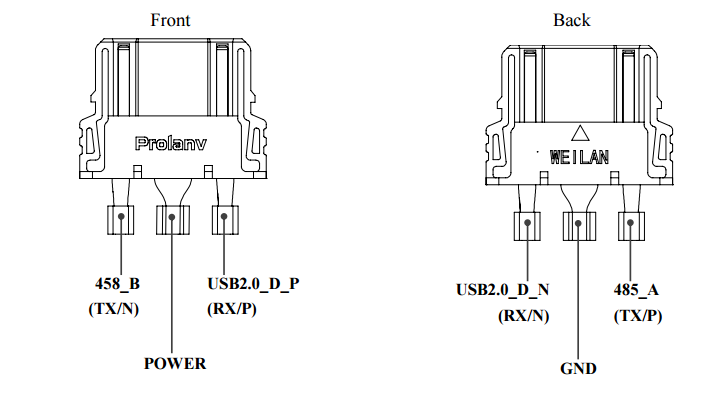
| 위치 | 기본 구성 | 이더넷 구성 |
|---|---|---|
| 앞 왼쪽 | 485_B | TX/N |
| 앞 가운데 | POWER (24 V) | POWER |
| 앞 오른쪽 | USB2.0_D_P | RX/P |
| 뒤 왼쪽 | USB2.0_D_N | RX/N |
| 뒤 가운데 | GND | GND |
| 뒤 오른쪽 | 485_A | TX/P |
- 이더넷 구성의 신호 순서는 TX/N · RX/P · RX/N · TX/P이며 100 Mbps 네트워크와 호환됩니다.
- [13] · [14]가 RS-485 + USB 구성일 때 [10]과 [13]의 RS-485가 같은 버스, [1]과 [14]의 RS-485가 같은 버스입니다 (About H2).
- 외부 전원 출력 포트의 합계 전력은 배터리 직결 출력([1])을 빼고 500 W를 넘지 않아야 합니다 (About H2).
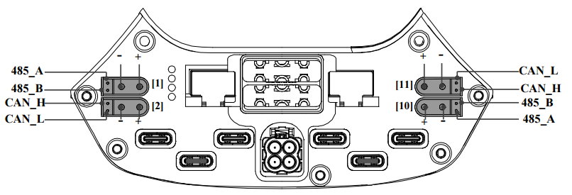
조립 순서 문서
기본으로 달려 오는 고무 손을 떼고, 손에 맞는 어댑터를 달고, 케이블 출구 방식에 따라 손목에 고정한 뒤 배선을 팔을 따라 등판까지 끌어옵니다. 그림은 모두 오른손이며 왼손도 방법이 같습니다.
로봇 전원을 끄고 커넥터를 다루십시오. 손을 단 뒤 처음 움직일 때는 로봇을 매달거나 팔이 몸통 · 주변 물체에 닿지 않는 자세에서 작은 동작부터 시험합니다.
1. 고무 손 떼기
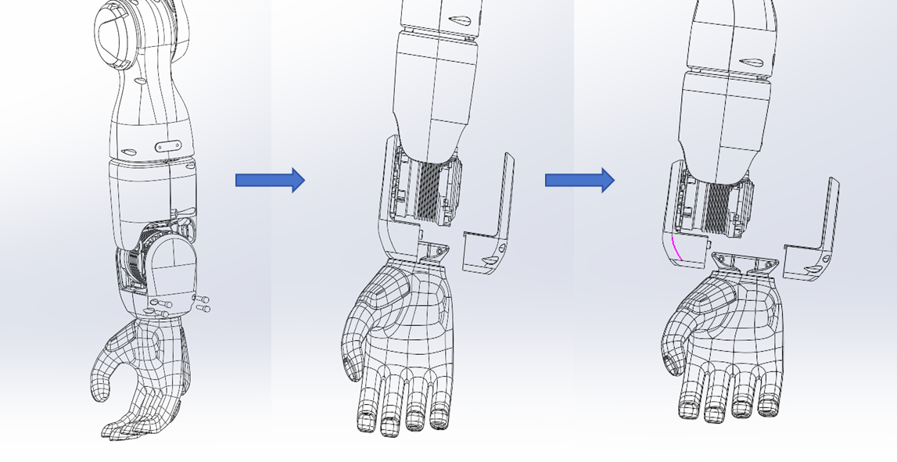
손목의 나사 4개를 풀면 고무 손과 손목 뒤쪽 구조 부품을 차례로 빼낼 수 있습니다. 꽉 끼워져 있으므로 고무망치나 지렛대가 필요할 수 있습니다.
2. 어댑터 달기와 옆 출구형 장착
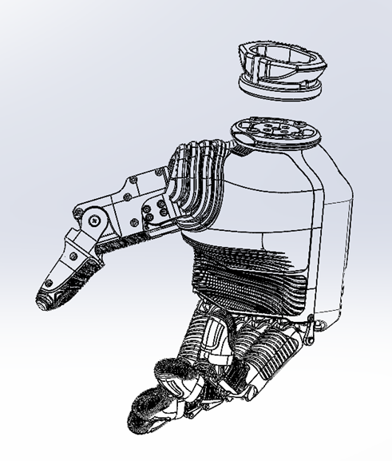
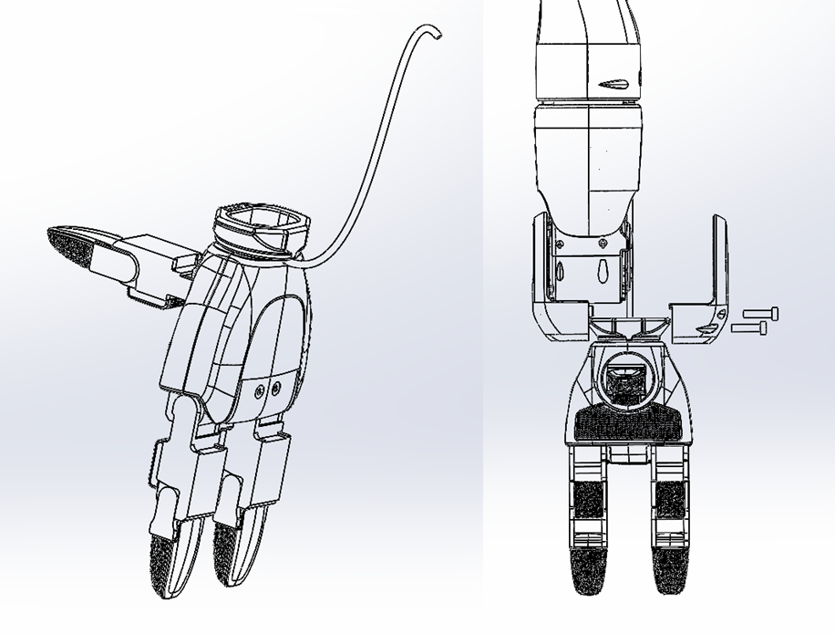
옆 출구형(케이블이 손목 옆으로 나옴): Dex1-1 · Dex3-1 · Inspire DFQ · Inspire E2 · Wuji hand2 · Sharpa. 더 분해하지 않고 손을 바로 단 뒤, 손목 뒤쪽 구조 부품을 붙이고 나사를 조입니다.
3. 끝 출구형 장착
끝 출구형(케이블이 손목 끝으로 나옴): Dex5-1 · Dex5-1P · BrainCo Revo2 · Revo3. 손목 앞쪽 부품까지 분해해 케이블을 손목 안으로 지나가게 합니다.
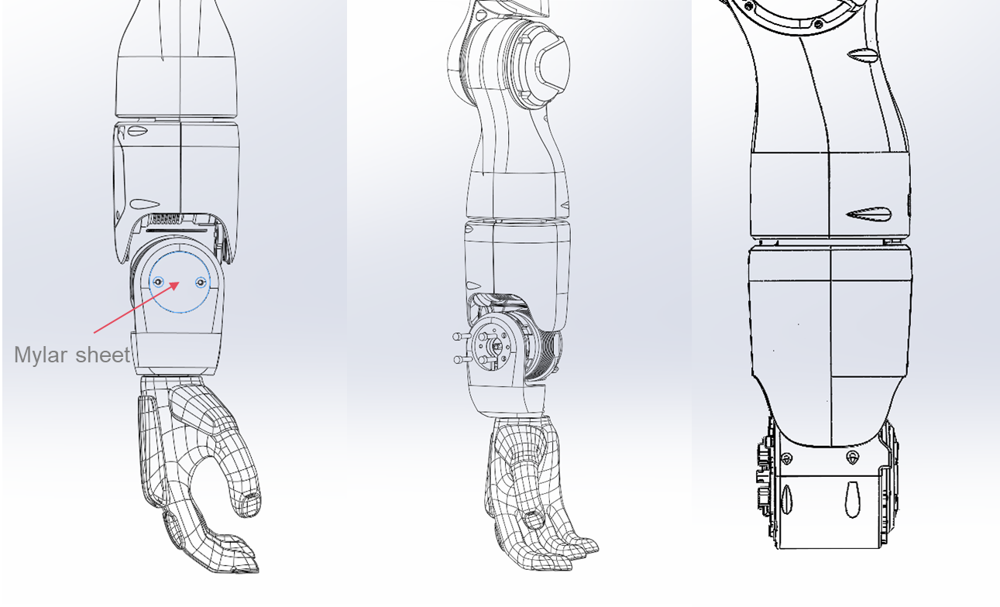
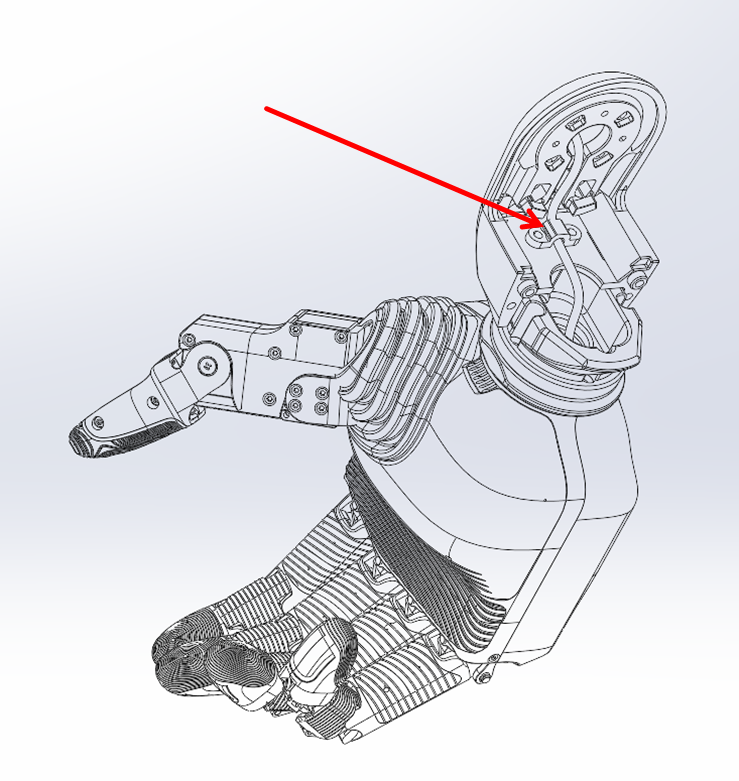
- 분해마일라 시트를 떼고 플라스틱 덮개와 손목 앞쪽 구조 부품을 차례로 뗍니다.
- 미리 조립손과 손목 앞쪽 부품을 맞추고, 배선을 클램프로 부품에 고정한 뒤 부품의 구멍으로 빼냅니다.
- 다시 달기손과 손목 앞쪽 부품을 원래 위치에 달고 나사를 조입니다. 손목 뒤쪽 구조 부품을 맞추고 나사를 조입니다.
- 마무리새 플라스틱 덮개와 마일라 시트를 붙입니다.
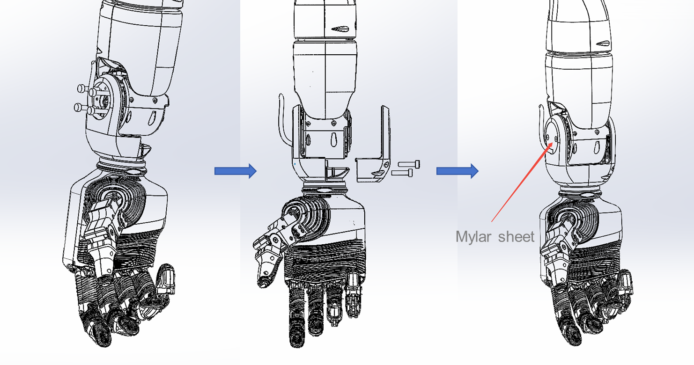
4. 배선
케이블에는 고정 위치를 표시한 슬리브가 일정 간격으로 붙어 있습니다. 표시마다 팔의 해당 위치에 케이블 클램프로 고정한 뒤, 반대쪽 끝의 커넥터를 본체의 해당 인터페이스([13] · [14], Wuji는 전원 [10]도, Sharpa는 이더넷 [12] · [15]도)에 꽂습니다.
소프트웨어 — 손별 DDS 경로
H2 문서 · SDK · Unitree 공개 저장소에서 확인되는 경로만 정리했습니다. 확인되지 않는 손의 토픽 이름은 적지 않았습니다.
| 손 | 로봇 쪽 연결 | DDS 경로 | 근거 |
|---|---|---|---|
| Dex3-1 | USB 2.0 → PC1 | rt/dex3/{left,right}/cmd · /state, unitree_hg HandCmd_ · HandState_ | H2 DDS 서비스 문서의 토픽 표 문서 · SDK IDL · 예제 SDK |
| BrainCo Revo2 | RS-485 → PC2 | rt/brainco/{left,right}/{cmd,state}, unitree_go MotorCmds_ · MotorStates_ | brainco_hand_service 저장소 |
| Dex5-1 · Dex5-1P | USB 2.0 → PC1 | H2 문서는 "DDS 인터페이스로 디버깅"이라고만 적음. 토픽 · 메시지는 문서 · SDK에 없음 | 기술 지원에 문의 |
| BrainCo Revo3 | RS-485 → PC2 | brainco_hand_service README는 Revo2만 언급. Revo3 지원 여부는 확인되지 않음 | — |
| Dex1-1 · Inspire DFQ | RS-485 → PC2 | 문서는 "PC2에서 직접 디버깅"이라고만 적음. DDS 경로 · 프로토콜은 H2 문서 · SDK에 없음 | — |
| Inspire E2 · Wuji hand2 · Sharpa | 이더넷 (스위치) | 문서는 "스위치에 연결해 아무 PC에서 디버깅"이라고만 적음. 제어 방법은 H2 문서 · SDK에 없음 | — |
Dex3-1 — HandCmd_ · HandState_ 문서 SDK
메시지 헤더는 include/unitree/idl/hg/HandCmd_.hpp · HandState_.hpp, 타입 이름공간은 unitree_hg::msg::dds_입니다. Python은 unitree_sdk2py.idl.unitree_hg.msg.dds_의 같은 이름입니다.
SDK에 H2용 손 예제는 없고, 같은 메시지를 쓰는 G1 예제 example/g1/dex3/g1_dex3_example.cpp(실행 파일 g1_dex3_example)가 있습니다.
| 토픽 | 타입 · 방향 |
|---|---|
rt/dex3/left/cmd · rt/dex3/right/cmd | HandCmd_ · 사용자 → 손 |
rt/dex3/left/state · rt/dex3/right/state | HandState_ · 손 → 사용자 |
rt/lf/dex3/left/state · rt/lf/dex3/right/state | HandState_ 저주파판. SDK 예제가 구독하는 토픽 |
| 필드 (SDK IDL) | 형 · 설명 |
|---|---|
HandCmd_.motor_cmd | sequence<MotorCmd_>. SDK 예제는 7개로 resize(7) |
HandCmd_.reserve | uint32[4] |
MotorCmd_ | mode uint8 · q · dq · tau · kp · kd float · reserve uint32 |
HandState_.motor_state | sequence<MotorState_>: mode uint8 · q · dq · ddq · tau_est float · temperature int16[2] · vol float · sensor uint32[2] · motorstate uint32 · reserve uint32[4] |
HandState_.press_sensor_state | sequence<PressSensorState_>: pressure float[12] · temperature float[12] · lost · reserve uint32. SDK 예제는 9개로 잡음 |
HandState_.imu_state | IMUState_: quaternion[4] · gyroscope[3] · accelerometer[3] · rpy[3] float · temperature int16 |
HandState_.power_v · power_a · system_v · device_v | float. 전원 전압 · 전류 계열 값 (H2 문서에 정의 없음) |
HandState_.error · reserve | uint32[2] · uint32[2] |
mode 비트 (SDK 예제의 RIS_Mode_t) | 필드 | 예제에서 쓰는 값 |
|---|---|---|
| 0 ~ 3 | id | 모터 번호 0 ~ 6 |
| 4 ~ 6 | status | 항상 1 |
| 7 | timeout | Stop에서 1. Rotate · Grip은 초기화하지 않음 — 직접 짤 때는 값을 명시하십시오 |
uint8_t mode = (i & 0x0F) | ((1 & 0x07) << 4) | ((1 & 0x01) << 7); // 모터 i, status 1, timeout 1 msg.motor_cmd()[i].mode(mode); msg.motor_cmd()[i].q(q); msg.motor_cmd()[i].dq(0); msg.motor_cmd()[i].tau(0); msg.motor_cmd()[i].kp(0.5); msg.motor_cmd()[i].kd(0.1); pub->Write(msg); // 토픽 rt/dex3/left/cmd
예제는 L · R로 손을 고르면 곧바로 Rotate(전 관절을 범위 안에서 사인파 왕복, kp 0.5 · kd 0.1)를 시작하고, 키 r Rotate · g Grip(범위 가운데 유지, kp 1.5 · kd 0.1) ·
p 상태 출력 · s Stop(kp = kd = 0) · q 종료로 바꿉니다. 관절 범위는 소스의 minLimits_* · maxLimits_* 배열에 있습니다.
예제는 손을 고르는 즉시 손가락을 범위 끝까지 움직입니다. 손 주변을 비우고, 직접 짠 프로그램은 kp를 예제 값(0.5 ~ 1.5) 이하에서 시작하십시오.
- H2의 DDS 서비스 문서는 Dex3-1 토픽을 「G1 List of common topics」라는 제목의 표(
dds_services_interface.md333 ~ 341행)에 싣습니다. 그 표는rt/dex3/left/state를 "저주파 모드",rt/lf/dex3/left/state를 일반으로 적어 이름(lf= 저주파)과 반대이고,rt/dex3/right/state의 설명은 "left"로 되어 있습니다. SDK 예제(g1_dex3_example.cpp253 · 257행)는rt/lf/dex3/*/state를 구독합니다. - H2 문서에는 Dex3-1의 모터 순서 · 관절 범위 ·
mode값의 뜻이 없습니다. 위 비트 구성은 SDK 예제 기준입니다.
BrainCo — brainco_hand_service
Unitree 공개 저장소 github.com/unitreerobotics/brainco_hand_service(d71996b, 2026-05-11)가 BrainCo 손의 직렬 통신을 DDS로 바꿉니다. README는 G1용 Revo2 손을 기준으로 쓰여 있고,
H2 문서는 BrainCo 손을 RS-485로 PC2에 연결해 PC2에서 디버깅한다고 적습니다. 아래는 README와 소스(main.cpp · include/param.h · test/)를 읽은 내용입니다.
| 토픽 | 타입 · 내용 |
|---|---|
rt/brainco/left/cmd · rt/brainco/right/cmd | unitree_go::msg::dds_::MotorCmds_ (cmds 6개) · 사용자 → 손 |
rt/brainco/left/state · rt/brainco/right/state | unitree_go::msg::dds_::MotorStates_ (states 6개) · 손 → 사용자, 100 Hz |
| 번호 | 0 | 1 | 2 | 3 | 4 | 5 |
|---|---|---|---|---|---|---|
| 채널 | Thumb엄지 | Thumb_aux엄지 보조 | Index검지 | Middle중지 | Ring약지 | Pinky새끼 |
| 필드 | 뜻 |
|---|---|
cmds[i].q | 목표 위치 0 ~ 1 (0 = 폄, 1 = 쥠) 실측 (WeGo가 R1의 Revo2 두 손에서 확인, 2026-10-12). 범위 밖은 잘라내고 ×1000 해서 손의 정규화 위치로 보냅니다 |
cmds[i].dq | 속도 0 ~ 1 (×1000). 서비스 기본값 1.0, README도 모두 1.0을 권장 |
cmds[i]의 tau · kp · kd · mode | 쓰지 않음 |
states[i].q · dq · tau_est | 위치 · 속도 · 전류를 각각 1000으로 나눈 값 |
- 손 찾기:
/dev/ttyUSB*·/dev/ttyHAND*·/dev/ttyUN*를 460800 bps로 훑어 장치 ID 126(0x7E) = 왼손, 127(0x7F) = 오른손을 찾고, 손의 SKU가 왼손 · 오른손과 맞는지 확인합니다. - 옵션(
param.h):-n·--network_interface(DDS 인터페이스, 기본값 빈 문자열) ·-h·-v가 있습니다.
sudo apt install libspdlog-dev libfmt-dev # unitree_sdk2가 먼저 sudo make install 되어 있어야 함 cd ~ && git clone https://github.com/unitreerobotics/brainco_hand_service cd brainco_hand_service && mkdir build && cd build && cmake .. && make -j6 cd ~/brainco_hand_service/bin sudo ./brainco_hand_server -n <인터페이스> # 터미널 1: 서비스 sudo ./test_brainco_hand_server right # 터미널 2: 시험 (인자 없으면 left) cd ~/brainco_hand_service && bash setup_autostart.sh # 자동 시작 등록 (선택)
cmd.cmds().resize(6);
for (int i = 0; i < 6; ++i) { cmd.cmds()[i].q() = 0.5f; cmd.cmds()[i].dq() = 1.f; } // 반쯤 쥠, 최대 속도
pub->Write(cmd); // 토픽 rt/brainco/right/cmd
test_brainco_hand_server는 시작하자마자 손을 모두 폄 → 엄지 빼고 쥠 → 모두 쥠을 0.7초 간격으로 끝없이 반복합니다. 손 안에 물건이나 손가락이 없는지 확인하고 실행하십시오.
- README의 빌드 안내는 "PC2 (NVIDIA Jetson Orin NX)"로 되어 있는데, 이는 G1의 PC2입니다. H2의 PC2는 Intel 개발 컴퓨터(.162)이며, H2 문서는 BrainCo 손을 이 PC2에 연결합니다.
- README의 실행 예는
--network eth0이지만, 소스에 정의된 옵션은--network_interface(-n)입니다. 위처럼-n을 쓰십시오. - WeGo 장비의 PC2에는 이 서비스가 빌드되어 있지만 출고 상태에서는 자동 시작되지 않습니다 (운용 설명서 4 · 8장). 등록 방법은 다음 절에 있습니다.
H2 실측 — 연결 · 자동 시작 · Python 제어 실측
WeGo가 H2 한 대(2026-11-10)에서 BrainCo 두 손을 직접 연결 · 등록 · 구동하며 확인한 내용입니다. 위 README 내용과 다른 점은 이쪽을 따르십시오.
| 항목 | 시험 장비에서 확인한 값 |
|---|---|
| 손 | BrainCo Revo2 Touch (서비스 로그 hardware_type 6), 중형 오른손 (sku_type 1) · 중형 왼손 (2), 펌웨어 1.0.22.U |
| 연결 | 손마다 Unitree USB 어댑터 1개 (2e3c:7542 "Unitree CDC COM")가 PC2 USB에 꽂혀 있습니다. 어댑터 하나가 직렬 포트 2개를 만듭니다 |
| 장치 이름 | PC2의 udev 규칙 /etc/udev/rules.d/99-unitree-sc-port.rules가 USB 포트 위치로 이름을 붙입니다: /dev/ttyUN0 · /dev/ttyUN1 (손 직렬), /dev/can0 · /dev/can1 (같은 어댑터의 두 번째 포트). 권한이 0666이라 sudo 없이 서비스를 실행할 수 있습니다 |
| 왼손 · 오른손 배정 | 서비스가 장치 ID로 찾습니다 (위 절). 시험 장비는 오른손 = ttyUN0(ID 127), 왼손 = ttyUN1(ID 126). 처음 ttyUN0에서 왼손 정보를 못 읽는다는 경고가 한 번 나오는 것은 정상입니다 |
| DDS 인터페이스 | PC2의 192.168.123.162가 eth0이므로 -n eth0. 개발 PC(192.168.123.x)에서 rt/brainco/*를 그대로 주고받을 수 있습니다 |
# PC2 — 직접 한 번 실행해 보기 (sudo 불필요, Ctrl+C로 종료) cd ~/brainco_hand_service/bin export LD_LIBRARY_PATH=$HOME/brainco_hand_service/lib/x86_64 ./brainco_hand_server -n eth0 # 정상: "left/right hand bound to /dev/ttyUN*", "Starting worker"
부팅 시 자동 시작 — 사용자 systemd 서비스
공식 setup_autostart.sh는 sudo로 시스템 서비스를 만들고 -n을 넘기지 않습니다 (인터페이스 기본값 = 빈 문자열). WeGo는 sudo 없이 unitree 사용자 서비스로 등록하고 -n eth0을 명시했습니다.
서비스는 손이 연결된 채로 계속 돌아야 하고, 수동으로 띄운 서버는 터미널(ssh)을 닫으면 함께 끝나므로 상시 운용에는 서비스 등록을 권장합니다.
# PC2, unitree 계정. 파일 위치: # ~/.config/systemd/user/brainco-hand.service [Unit] Description=BrainCo hand service (Revo2 serial <-> DDS rt/brainco/*) After=default.target [Service] Type=simple WorkingDirectory=%h/brainco_hand_service/bin Environment=LD_LIBRARY_PATH=%h/brainco_hand_service/lib/x86_64 ExecStart=%h/brainco_hand_service/bin/brainco_hand_server -n eth0 Restart=always RestartSec=5 [Install] WantedBy=default.target
# 로그인하지 않아도 부팅 시 사용자 서비스 시작 (sudo 불필요) loginctl enable-linger unitree systemctl --user daemon-reload systemctl --user enable --now brainco-hand # 등록 + 지금 시작 systemctl --user status brainco-hand # active (running) # 그 밖에: restart · stop · disable
- 시험 장비에서 서버 프로세스를 강제로 끝내자 약 5초 뒤 자동으로 다시 떴습니다 (
NRestarts=1). - BrainCo SDK로
/dev/ttyUN*를 직접 다룰 때는 서비스와 통신이 겹치지 않도록 먼저systemctl --user stop brainco-hand로 멈추십시오. - 서비스는 마지막으로 받은 명령을 10 ms마다 손에 다시 보냅니다 (
main.cpp의 100 Hz 루프). 내 프로그램을 끝내도 손은 마지막 자세를 유지합니다. - 서비스가 시작되면 손을 폅니다. 시험 장비에서 주먹 상태로 서비스를 다시 시작하자 두 손이 펴졌습니다. 부팅 때도 서비스가 뜨면서 손가락이 움직이므로 손 주변을 비워 두십시오.
- 이때 오른손 엄지 보조가 0.28에서 멈췄고, 같은 0 명령을 다시 보내도 움직이지 않았습니다. 다른 위치(1)로 보냈다가 0으로 다시 보내자 정상(0.01)으로 돌아왔습니다.
Python으로 펴기 · 쥐기
개발 PC(또는 PC2)에서 unitree_sdk2_python(1장)으로 바로 쓸 수 있습니다. 아래 코드는 시험 장비에서 그대로 실행해 확인했습니다. 왼손은 토픽의 right를 left로 바꿉니다.
import time
from unitree_sdk2py.core.channel import (
ChannelFactoryInitialize, ChannelPublisher, ChannelSubscriber)
from unitree_sdk2py.idl.unitree_go.msg.dds_ import MotorCmds_, MotorStates_
from unitree_sdk2py.idl.default import unitree_go_msg_dds__MotorCmd_
# 개발 PC의 로봇망 인터페이스 (PC2에서 실행하면 "eth0")
ChannelFactoryInitialize(0, "enp4s0")
pub = ChannelPublisher("rt/brainco/right/cmd", MotorCmds_); pub.Init()
state = {}
sub = ChannelSubscriber("rt/brainco/right/state", MotorStates_)
sub.Init(lambda m: state.update(q=[round(s.q, 2) for s in m.states]), 10)
# q = [엄지, 엄지 보조, 검지, 중지, 약지, 새끼], 0 = 폄 · 1 = 쥠
def hand(q, secs=0.8):
msg = MotorCmds_([unitree_go_msg_dds__MotorCmd_() for _ in range(6)])
for c, v in zip(msg.cmds, q):
c.q, c.dq = v, 1.0 # dq = 속도 0 ~ 1
for _ in range(int(secs / 0.1)):
pub.Write(msg); time.sleep(0.1)
print(state.get("q"))
hand([0] * 6) # 폄
hand([0, 1, 1, 1, 1, 1]) # 엄지 빼고 쥠
hand([1] * 6) # 주먹
| 명령 | 왼손 상태 q (실측, 여러 번) | 오른손 상태 q (실측, 여러 번) |
|---|---|---|
폄 [0]*6 | 0 · 0 · 0 · 0 · 0 · 0 | 0 · 0 · 0 · 0 · 0 · 0 |
엄지 빼고 쥠 [0,1,1,1,1,1] | 0 · 0.70 ~ 1.0 · 1.0 · 1.0 · 1.0 · 1.0 | 0 · 0.80 ~ 1.0 · 1.0 · 1.0 · 1.0 · 1.0 |
주먹 [1]*6 (위 순서 다음) | 0.59 ~ 0.66 · 0.71 ~ 0.98 · 1.0 · 1.0 · 1.0 · 1.0 | 0.60 ~ 0.63 · 0.80 ~ 0.99 · 1.0 · 1.0 · 1.0 · 1.0 |
주먹에서 엄지가 약 0.6에서 멈추는 것은 접힌 손가락에 닿기 때문이며 정상입니다 (두 손 모두 같음). 엄지 보조(엄지 회전)는 같은 명령에도 0.7 ~ 1.0 사이에서 멈춰, 시험할 때마다 값이 조금씩 달랐습니다. 목표값과 상태값이 다르다고 바로 고장으로 보지 마십시오.
편 상태에서 곧바로 [1]*6(주먹)을 보내면 엄지가 검지보다 먼저 들어와 서로 걸립니다. 시험 장비에서 두 손 모두 검지가 약 0.5, 엄지 보조가 0.5 ~ 0.7에서 멈췄습니다.
반드시 폄 → 엄지 빼고 쥠 → 주먹 순서로 보내십시오 (Unitree 시험 프로그램도 같은 순서). 이미 걸렸다면 먼저 완전히 편 뒤 이 순서를 다시 시작합니다.
문제 해결
개발 중에 자주 만나는 증상과 원인, 조치를 모았습니다.
| 증상 | 원인 | 조치 |
|---|---|---|
| 저수준 명령 시 로봇이 떨림 | 디버그 모드가 아님. 내장 제어기가 속도 0 명령을 계속 보냄 | 댐핑 → L2+R2, L2+A로 확인 |
| LocoClient가 3104(호출 시간 초과)를 반환 | 디버그 모드로 내장 제어기가 꺼짐, 또는 인터페이스 이름 오류 | 로봇 재부팅, --network_interface 값 확인, SetTimeout 늘리기 |
ros2 topic list에 로봇 토픽 없음 | RMW가 CycloneDDS가 아님, CYCLONEDDS_URI 인터페이스 오류 | echo $RMW_IMPLEMENTATION, setup.sh의 인터페이스 이름 수정 후 재부팅 |
| 오도메트리 토픽이 안 나옴 | 디버그 모드, 또는 state_estimator < 2.1.0.12 | 운동 모드에서 확인, 기술 지원에 업그레이드 요청 |
| 스테레오 영상이 안 보임 | video_hub 충돌, stereo_patch_pc1 꺼짐, 수신 주소가 .170, 방화벽 | 6장 순서대로 서비스 · 수신 주소 · 방화벽 확인 |
| Thor에서 GMSL 카메라 없음 | 재부팅 후 사전 설정 안 함, nvargus-daemon 미재시작, 드라이버 폴더 버전 불일치 | set_i2c3.sh · load_modules.sh 실행, JP7.0이면 _7.1 없는 폴더 사용 |
| Thor에서 TensorRT 엔진 로드 실패 | Orin에서 만든 엔진 | Thor에서 ONNX로 다시 빌드 |
| 새 SDK 소스로 빌드했는데 옛 동작 | 이전에 sudo make install 한 SDK를 cmake가 사용 | 새 버전에서 다시 sudo make install |
rt/arm_sdk로 팔은 움직이는데 머리(29 · 30번)만 안 움직임 | 펌웨어 V1.0.2.6 실측 | Unitree Explore 앱 › About Robot › Update로 V1.0.3 이상 (5장 실측) |
rt/arm_sdk로 허리(12 ~ 14번)가 안 움직임 | 정상. 고수준 모드에서는 내장 제어기가 허리를 가짐 실측 | 디버그 모드의 rt/lowcmd로, 로봇을 매단 상태에서 제어 (4장) |
ping은 되는데 rt/lowstate가 오지 않음 | 케이블 불량으로 링크가 10 Mbps로 떨어짐(dmesg에 "Downshift … check cabling"). LowState 한 개가 2,092 B라 500 ~ 1000 Hz면 8.4 ~ 16.7 Mbit/s가 필요 실측 | 케이블 교체 후 cat /sys/class/net/<인터페이스>/speed가 1000인지 확인 |
예제를 실행한 뒤 GetArmSdkStatus()가 false | 예제가 끝날 때 DisableArmSDK()를 부름. 부팅 직후 기본값은 true 실측 | EnableArmSDK()를 부르지 않는 프로그램을 쓰기 전에 EnableArmSDK() 호출 또는 로봇 재부팅 |
빠른 참조
네트워크
| PC1 운동 제어 | 192.168.123.161 |
| PC2 개발 (Intel) | 192.168.123.162 |
| PC3 개발 (Jetson Thor) | 192.168.123.163 |
| PC4 개발 (Orin NX, 선택) | 192.168.123.164 |
| 개발 PC (예) | 192.168.123.99/24 |
DDS 도메인 0 · 포트 [12] = 192.168.123.x · 포트 [15] = 192.168.124.x · 계정은 운용 설명서 4장
시작 전 확인
- 로봇을 보호 스탠드에 매달기
- 리모컨 담당자 대기 (L2+B)
- 저수준: L2+R2 디버그 → L2+A 확인
- 고수준 · 팔 덧씌움: 디버그 모드가 아닌 상태 (팔 덧씌움 예제는 FSM 4 · 703)
- 속도 · 게인 · 가중치는 작게 시작
DDS 토픽
rt/lowstate | 관절 · IMU · 리모컨 |
rt/lowcmd | 저수준 명령 (디버그) |
rt/arm_sdk | 상체 덧씌움 |
rt/odommodestate | 오도메트리 500 Hz |
rt/lf/odommodestate | 오도메트리 20 Hz |
rt/audio_msg | 음성 인식 JSON |
RPC "sport" | LocoClient |
네트워크 포트
| 230.1.1.1:1720 | 머리 카메라 H.264 |
| UDP 5002 | 스테레오 오른쪽 원본 |
| UDP 5004 · 5006 | 왼쪽 · 오른쪽 544×448 |
| 239.168.123.161:5555 | 마이크 오디오 |
| .161:9080 | 스테레오 수신 주소 설정 |
FSM 번호 · 관절 묶음
| FSM | 0 영토크 · 1 댐핑 · 4 잠금 서기 · 601 걷기/뛰기 · 701 표준 보행(팔 개방, ai_sport ≥ 2.5.4.11) · 703 표준 보행(팔 개방, ai_sport < 2.5.4.11) · 802 일어서기 · 803 눕기 · 팔 덧씌움 예제는 4 · 703만 |
| 관절 | 0 ~ 5 왼다리 · 6 ~ 11 오른다리 · 12 ~ 14 허리 · 15 ~ 21 왼팔 · 22 ~ 28 오른팔 · 29 ~ 30 머리 · arm_sdk 가중치 = 31번 q |